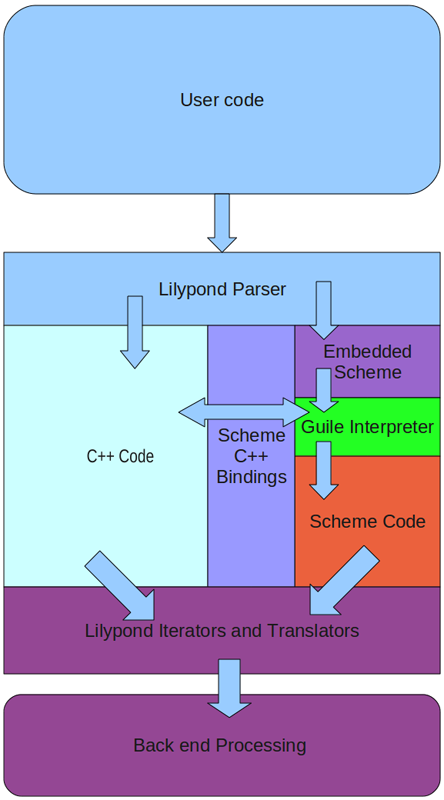

| [Top][Contents] |
LilyPond — Contributor’s Guide
|
This manual documents contributing to LilyPond version 2.26.0. It discusses technical issues and policies that contributors should follow. This manual is not intended to be read sequentially; new contributors should only read the sections which are relevant to them. For more information about different jobs, see Help us. |
|
For more information about how this manual fits with the other documentation, or to read this manual in other formats, see Manuals. If you are missing any manuals, the complete documentation can be found at https://lilypond.org/. |
| [ << Top ] | [Top][Contents] | [ Quick start >> ] |
| [ < Top ] | [ Up: Top ] | [ Help us > ] |
1 Introduction to contributing
This chapter presents a quick overview how people can help LilyPond.
| 1.1 Help us | ||
| 1.2 Overview of work flow | ||
| 1.3 Summary for experienced developers | ||
| 1.4 Mentors |
| [ << Introduction to contributing ] | [Top][Contents] | [ Quick start >> ] |
| [ < Introduction to contributing ] | [ Up: Introduction to contributing ] | [ Overview of work flow > ] |
1.1 Help us
We need you!
Thank you for your interest in helping us – we would love to see you get involved! Your contribution will help a large group of users make beautifully typeset music.
Even working on small tasks can have a big impact: taking care of them allows experienced developers to work on advanced tasks instead of spending time on those simple tasks.
For a multi-faceted project like LilyPond, sometimes it’s tough to know
where to begin. In addition to the avenues proposed below, you can send
an e-mail to the
lilypond-devel@gnu.org
mailing list, and we’ll help you to get started.
Simple tasks
No programming skills required!
- Mailing list support: answer questions from fellow users. (This may entail helping them navigate the online documentation; in such cases it may sometimes be appropriate to point them to version-agnostic URL paths such as ‘latest’ or ‘stable’, which are automatically redirected.)
- Bug reporting: help users create proper Bug reports, and/or join the Bug Squad to organize Issues.
- Documentation: small changes can be proposed by following the guidelines for Documentation suggestions.
- LilyPond Wiki: create and fix snippets following the guidelines in Adding and editing snippets.
- Discussions, reviews, and testing: the developers often ask for feedback about new documentation, potential syntax changes, and testing new features. Please contribute to these discussions!
Advanced tasks
These jobs generally require that you have the source code and can compile LilyPond.
Note: We suggest that contributors using Windows or macOS do not attempt to set up their own development environment; instead, use Lilydev as discussed in Quick start.
Contributors using Linux or FreeBSD may also use Lilydev, but if they prefer their own development environment, they should read Working with source code, and Compiling.
Begin by reading Summary for experienced developers.
- Documentation: for large changes, see Documentation work.
- Website: the website is built from the normal documentation source. See the info about documentation, and also Website work.
- Translations: see Translating the documentation, and Translating the website.
- Bugfixes or new features: read Programming work.
| [ << Introduction to contributing ] | [Top][Contents] | [ Quick start >> ] |
| [ < Help us ] | [ Up: Introduction to contributing ] | [ Summary for experienced developers > ] |
1.2 Overview of work flow
Advanced note: Experienced developers should skip to Summary for experienced developers.
Git is a version control system that tracks the history of a program’s source code. The LilyPond source code is maintained as a Git repository, which contains:
- all of the source files needed to build LilyPond, and
- a record of the entire history of every change made to every file since the program was born.
The ‘official’ LilyPond Git repository is hosted by the GNU Savannah software forge at https://git.sv.gnu.org. The server provides two separate interfaces for viewing the LilyPond Git repository online: cgit and gitweb.
However, the main development takes place at
https://gitlab.com/lilypond/lilypond/, which also hosts the
project’s issues. Automatic mirroring ensures that ‘important’
branches (such as master and stable/*) are up to date
on the ‘official’ repository at GNU Savannah, so you can also base
your development on a clone from there.
Compiling (‘building’) LilyPond allows developers to see how changes to the source code affect the program itself. Compiling is also needed to package the program for specific operating systems or distributions. LilyPond can be compiled from a local Git repository (for developers), or from a downloaded tarball (for packagers). Compiling LilyPond is a rather involved process, and most contributor tasks do not require it.
Contributors can contact the developers through the ‘lilypond-devel’ mailing list. The mailing list archive is located at https://lists.gnu.org/archive/html/lilypond-devel/. If you have a question for the developers, search the archives first to see if the issue has already been discussed. Otherwise, send an email to lilypond-devel@gnu.org. You can subscribe to the developers’ mailing list here: https://lists.gnu.org/mailman/listinfo/lilypond-devel.
Note: Contributors on Windows or macOS wishing to compile code or documentation are strongly advised to use our Debian LilyPond Developer Remix, as discussed in Quick start.
| [ << Introduction to contributing ] | [Top][Contents] | [ Quick start >> ] |
| [ < Overview of work flow ] | [ Up: Introduction to contributing ] | [ Mentors > ] |
1.3 Summary for experienced developers
If you are already familiar with typical open-source tools, here’s what you need to know:
- ‘Official’ source repository: hosted by GNU Savannah
- Development platform: hosted by GitLab; also includes the issue tracker (see Issues)
- Environment variables: needed by many maintenance scripts, and many instructions in this guide rely on them; see Environment variables.
- Mailing lists: given in Contact.
- Git branches:
- −
master: always base your work on this branch, but never push directly to it. - −
dev/foo: feel free to push any new branches underdev/and use GitLab to create Merge Requests (MR), which eventually get merged intomasterafter they have passed automatic testing (see below).
- −
- Regression tests:
also known as “regtests”. A collection of around two thousand
.lyfiles that are used to track LilyPond’s engraving output between released stable and unstable versions as well as checked for all patches submitted for testing.If a patch introduces any unintentional changes to any of the regtests it is very likely it will be rejected (to be fixed) – if you expect any regression test changes, always make sure that they are explained clearly as part of the patch description when submitting for testing. For more information, see Regression tests.
- Reviews:
after finishing work on a patch or branch you should do the following.
- Commit the changes and create a Merge Request. See Uploading a patch for review for more information.
- A Merge Request is usually automatically tested within an hour of
submission. Once it has passed the basic tests –
make check,make,make doc– the tracker will be updated and the patch’s status will change toPatch::reviewfor other developers to examine. - Every third day, the “Patch Meister” will examine all Merge Requests
currently under review, looking for any comments by other developers.
Depending on what has been posted, the patch will be either “moved on”
to the next patch status (
Patch::countdown), set back toPatch::needs_work, or if more discussion is needed, left atPatch::review. In all cases the Merge Request will be updated by the Patch Meister accordingly. - Once another three days have passed, any patch that has been given
Patch::countdownstatus will be changed toPatch::push, the Merge Request is updated, and the developer can now rebase and merge to themasterbranch (or ask one of the other developers to merge it for you).
Advanced note: This process means that most patches will take about a week before finally being merged into
master. With the limited resources for reviewing patches available and a history of unintended breakages in themasterbranch (from patches that have not had time to be reviewed properly), this is the best compromise we have found.
| [ << Introduction to contributing ] | [Top][Contents] | [ Quick start >> ] |
| [ < Summary for experienced developers ] | [ Up: Introduction to contributing ] | [ Quick start > ] |
1.4 Mentors
We have a semi-formal system of mentorship, similar to the medieval “journeyman/master” training system. New contributors will have a dedicated mentor to help them “learn the ropes”.
Note: This is subject to the availability of mentors; certain jobs have more potential mentors than others.
Contributor responsibilities
- Ask your mentor which sections of the CG you should read.
- If you get stuck for longer than ten minutes, ask your mentor. They might not be able to help you with all problems, but we find that new contributors often get stuck with something that could be solved or explained with two or three sentences from a mentor.
- If you have been working on a task much longer than was originally estimated, stop and ask your mentor. There may have been a miscommunication, or there may be some time-saving tips that could vastly simplify your task.
- Send patches to your mentor for initial comments.
- Inform your mentor if you’re going to be away for a month, or if you leave entirely. Contributing to LilyPond isn’t for everybody; just let your mentor know so that we can reassign that work to somebody else.
- Inform your mentor if you’re willing to do more work – we always have way more work than we have helpers available. We try to avoid overwhelming new contributors, so you’ll be given less work than we think you can handle.
Mentor responsibilities
- Respond to questions from your contributor(s) promptly, even if the response is just “sorry, I don’t know” or “sorry, I’m very busy for the next 3 days; I’ll get back to you then”. Make sure they feel valued.
- Inform your contributor(s) about the expected turnaround for your emails – do you work on LilyPond every day, or every weekend, or what? Also, if you’ll be unavailable for longer than usual (say, if you normally reply within 24 hours, but you’ll be at a conference for a week), let your contributors know. Again, make sure they feel valued, and that your silence (if they ask a question during that period) isn’t their fault.
- Inform your contributor(s) if they need to do anything unusual for
the builds, such as doing a
make cleanormake doc-clean, or switching git branches (not expected, but just in case). - You don’t need to be able to completely approve patches. Make sure the patch meets whatever you know of the guidelines (documentation style, code indentation, whatever).
- Keep track of patches from your contributor. Either open Merge Requests by yourself or help and encourage them to upload the patches themselves.
- Encourage your contributor to review patches, particularly your own! It doesn’t matter if they’re not familiar with C++, Scheme, the build system, or the documentation guidelines – simply going through the process is valuable. Besides, anybody can find a typo!
- Contact your contributor at least once a week. The goal is just
to get a conversation started – there’s nothing wrong with simply
copying & pasting this into an email:
Hey there, How are things going? If you sent a patch and got a review, do you know what you need to fix? If you sent a patch but have no reviews yet, do you know when you will get reviews? If you are working on a patch, what step(s) are you working on?
| [ << Introduction to contributing ] | [Top][Contents] | [ Working with source code >> ] |
| [ < Mentors ] | [ Up: Top ] | [ LilyDev > ] |
2 Quick start
Want to submit a patch for LilyPond? Great! Never created a patch before? Never compiled software before? No problem! This chapter is for you and will help you do this as quickly and easily as possible.
| 2.1 LilyDev | ||
| 2.2 Compiling with LilyDev | ||
| 2.3 Now start work! |
| [ << Quick start ] | [Top][Contents] | [ Working with source code >> ] |
| [ < Quick start ] | [ Up: Quick start ] | [ Installing LilyDev in VirtualBox > ] |
2.1 LilyDev
Note: The following sections are based on LilyDev v2 and are not necessarily correct for different releases.
“LilyDev” is a custom GNU/Linux operating system which includes all the necessary software and tools to compile LilyPond, the documentation and the website (also see Website work).
While compiling LilyPond on macOS and Windows is possible, both environments are complex to set up. LilyDev can be easily run inside a ‘virtual machine’ on either of these operating systems relatively easily using readily available virtualization software. We recommend using VirtualBox as it is available for all major operating systems and is very easy to install & configure.
LilyDev comes in two ‘flavours’: containers and a standard disk image. Windows or macOS users should choose the Debian disk image (to be run in a virtual machine), that is the file named LilyDev-VERSION-debian-vm.zip. GNU/Linux users are recommended to choose one of the containers (currently Debian or Fedora), which are smaller in size, lightweight and easier to manage. The Fedora disk image has currently not been released, you can create it from the sources located in the /mkosi subdirectory of the LilyDev repository, however.
Download the appropriate file from here:
Note: Apart from installing and configuring LilyDev in VirtualBox, the rest of the chapter assumes that you are comfortable using the command line and is intended for users who may have never created a patch or compiled software before. More experienced developers (who prefer to use their own development environment) may still find it instructive to skim over the following information.
If you are not familiar with GNU/Linux, it may be beneficial to read a few “introduction to Linux” type web pages.
| Installing LilyDev in VirtualBox | ||
| Configuring LilyDev in VirtualBox |
| [ << Quick start ] | [Top][Contents] | [ Working with source code >> ] |
| [ < LilyDev ] | [ Up: LilyDev ] | [ Configuring LilyDev in VirtualBox > ] |
Installing LilyDev in VirtualBox
This section discusses how to install and use LilyDev with VirtualBox.
Note: If you already know how to install a virtual machine using a disc image inside VirtualBox (or your own virtualization software) then you can skip this section.
- Download VirtualBox from here:
Note: In virtualization terminology, the operating system where VirtualBox is installed is known as the host. LilyDev will be installed ‘inside’ VirtualBox as a guest.
- The zip archive you downloaded contains the raw disk image and
its SHA256 checksum. You can verify the integrity of the downloaded
archive with any hashing tool your OS does support.
On Linux, run the following command in the directory where you have
extracted the files (this may take some time):
sha256sum -c SHA256SUMS
For Windows, look for the tools
FCIVorcertutilto compute the archive’s hash. - As VirtualBox does not support the raw format, you have to
extract it and then convert it to VDI format. Make sure
that ‘VBoxManage’ is in your
PATHor call it from your VirtualBox installation directory:VBoxManage convertfromraw LilyDev-VERSION-debian-vm.img \ LilyDev-VERSION-debian-vm.vdi
Note: You need a fair amount of disk space (around 30GB) to extract the raw image. After converting to a dynamic VirtualBox image it will take up much less space (only the amount of space that is actually allocated by the guest filesystem)
- Start the VirtualBox software and click ‘New’ to create a new
“virtual machine”.
The ‘New Virtual Machine Wizard’ walks you through setting up your guest virtual machine. Choose an appropriate name for your LilyDev installation and select the ‘Linux’ operating system. When selecting the ‘version’ choose ‘Debian (64-bit)’. If you do not have that specific option choose ‘Linux 2.6/3.x/4.x (64-bit)’.
- Select the amount of RAM you allow the LilyDev guest to use from your host operating system when it is running. If possible, use at least 1GB of RAM; the more RAM you can spare from your host the better
- In the ‘Hard Disk’ step, you use the VDI file you have previously created. You may move it within the virtual machine’s folder already created by the wizard (in GNU/Linux the default should be ~/VirtualBox VMs/NAME). Click on ‘Use an existing virtual hard disk file’ and browse to the VDI file.
- Verify the summary details and click ‘Create’ as soon as you are satisfied. Your new guest shall be displayed in the VirtualBox window now.
- Enable EFI within the virtual machine’s settings – click on System → Motherboard and select ‘Extended features: Enable EFI’. Otherwise, you won’t be able to boot the image.
- VirtualBox ‘guest additions’, which are installed by default in the debian image, provide some additional features such as being able to dynamically resize the LilyDev window, allow seamless interaction with your mouse pointer on both the host and guest, and let you copy/paste between your host and guest if needed. It seems that dynamic window resizing works only with the ‘VBoxVGA’ graphics controller, which you can choose in Display → Graphics Controller. To enable clipboard sharing between guest and host, choose General → Advanced → Shared Clipboard → Bidirectional.
- Click the ‘Start’ button and wait until the login screen appears.
Log in as
devuser then; type the passwordlilypond. Before starting any work, be sure to complete the next steps.Note: Since the default keyboard layout is US (American), you may have to type the password differently if you are using another layout, like ‘lilzpond’ on a German keyboard, for example.
- Open a terminal by clicking Applications →
Terminal at the upper left of the screen. You may want to change
the password of user ‘dev’ before doing further work with the command
passwd. - You might need to change the keyboard layout from default US (American)
to your national layout. Therefore open a terminal and run
sudo dpkg-reconfigure keyboard-configuration
Note: You need superuser rights to change certain aspects of the system configuration. The
sudotool allows to gain superuser rights temporarily. It does show you a warning message on its first use that reminds you to use your extended rights carefully.At first, you are prompted for the model of your keyboard. Press Enter to show further models. In most cases, it is sufficient to choose ‘Generic, 105 keys’. After that, choose your keyboard layout. Now, you can customize the function of your AltGr key. Normally, the default layout settings fit well, so take number 1. The same holds for the question of whether you want to configure a ‘compose’ key. At last, you are asked if you want to configure Ctrl+Alt+Backspace as a shortcut to terminate the X server. Presumably, you do not need this, so you can safely type ‘no’.
- To set up your system language (charset, localized messages etc.),
continue with
sudo dpkg-reconfigure locales
Note: Restarting is required in order to take the changes into effect.
-
Finally, you should run a setup script. If you are on the command line
already, simply type
./setup.shto run the interactive script that does set up git and downloads all the repositories needed to build LilyPond.
| [ << Quick start ] | [Top][Contents] | [ Working with source code >> ] |
| [ < Installing LilyDev in VirtualBox ] | [ Up: LilyDev ] | [ Compiling with LilyDev > ] |
Configuring LilyDev in VirtualBox
- In the settings for the virtual machine, set the network to Bridged mode to allow you to access shared folders when using Windows hosts.
- Set up any additional features, such as ‘Shared Folders’ between
your main operating system and LilyDev. This is distinct from the
networked share folders in Windows. Consult the external documentation
for this.
Some longtime contributors have reported that ‘shared folders’ are rarely useful and not worth the fuss, particularly since files can be shared over a network instead.
- Pasting into a terminal is done with
Ctrl+Shift+v. - Right-click allows you to edit a file with the text editor (default is Leafpad).
Known issues and warnings
Not all hardware is supported in all virtualization tools. In particular, some contributors have reported problems with USB network adapters. If you have problems with network connection (for example Internet connection in the host system is lost when you launch virtual system), try installing and running LilyDev with your computer’s built-in network adapter used to connect to the network. Refer to the help documentation that comes with your virtualization software.
| [ << Quick start ] | [Top][Contents] | [ Working with source code >> ] |
| [ < Configuring LilyDev in VirtualBox ] | [ Up: Quick start ] | [ Now start work! > ] |
2.2 Compiling with LilyDev
LilyDev is our custom GNU/Linux which contains all the necessary dependencies to do LilyPond development; for more information, see LilyDev.
Preparing the build
To prepare the build directory, enter (or copy&paste) the below text. This should take less than a minute.
cd $LILYPOND_GIT sh autogen.sh --noconfigure mkdir -p build/ cd build/ ../configure
Building lilypond
Compiling LilyPond will take anywhere between 1 and 15 minutes on most ‘modern’ computers – depending on CPU and available RAM. We also recommend that you minimize the terminal window while it is building; this can help speed up on compilation times.
cd $LILYPOND_GIT/build/ make
It is possible to run make with the -j option to help
speed up compilation times even more. See Compiling LilyPond
You may run the compiled lilypond with:
cd $LILYPOND_GIT/build/ out/bin/lilypond my-file.ly
Building the documentation
Compiling the documentation is a much more involved process, and will likely take 2 to 10 hours.
cd $LILYPOND_GIT/build/ make make doc
The documentation is put in out-www/offline-root/. You may view the html files by entering the below text; we recommend that you bookmark the resulting page:
firefox $LILYPOND_GIT/build/out-www/offline-root/index.html
Installing
Don’t. There is no reason to install LilyPond within LilyDev. All development work can (and should) stay within the $LILYPOND_GIT directory, and any personal composition or typesetting work should be done with an official release.
Problems and other options
To select different build options, or isolate certain parts of the build, or to use multiple CPUs while building, read Compiling.
In particular, contributors working on the documentation should be aware of some bugs in the build system, and should read the workarounds in Generating documentation.
| [ << Quick start ] | [Top][Contents] | [ Working with source code >> ] |
| [ < Compiling with LilyDev ] | [ Up: Quick start ] | [ Working with source code > ] |
2.3 Now start work!
LilyDev users may now skip to the chapter which is aimed at their intended contributions:
These chapters are mainly intended for people not using LilyDev, but they contain extra information about the “behind-the-scenes” activities. We recommend that you read these at your leisure, a few weeks after beginning work with LilyDev.
| [ << Quick start ] | [Top][Contents] | [ Compiling >> ] |
| [ < Now start work! ] | [ Up: Top ] | [ Setting up > ] |
3 Working with source code
The LilyPond project uses Git as a version control system. This section is intended at getting new contributors started with Git, and helping senior developers with less frequently used procedures.
| 3.1 Setting up | ||
| 3.2 Git cheat sheet | ||
| 3.3 Lifecycle of a merge request | ||
| 3.4 Writing good commit messages | ||
| 3.5 Commit access | ||
| 3.6 Further Git documentation resources | ||
| 3.7 Repository directory structure |
| [ << Working with source code ] | [Top][Contents] | [ Compiling >> ] |
| [ < Working with source code ] | [ Up: Working with source code ] | [ Installing Git > ] |
3.1 Setting up
| 3.1.1 Installing Git | ||
| 3.1.2 Creating a GitLab account and setting up SSH | ||
| 3.1.3 Cloning and forking the repository | ||
| 3.1.4 Configuring Git |
| [ << Working with source code ] | [Top][Contents] | [ Compiling >> ] |
| [ < Setting up ] | [ Up: Setting up ] | [ Creating a GitLab account and setting up SSH > ] |
3.1.1 Installing Git
On UNIX systems (such as GNU/Linux, macOS, FreeBSD), the easiest way to download and install Git is through a package manager. Alternatively, you can visit the Git website for downloadable installers.
For convenience, you may also install a graphical front-end to Git.
Packaged in the installers come gitk (for browsing the history)
and git-gui (for committing). Git’s official website provides a
list of GUI clients,
including free software for various platforms.
| [ << Working with source code ] | [Top][Contents] | [ Compiling >> ] |
| [ < Installing Git ] | [ Up: Setting up ] | [ Cloning and forking the repository > ] |
3.1.2 Creating a GitLab account and setting up SSH
First of all, since the patch review happens on GitLab, you need to create an account there if you do not already have one. Visit https://gitlab.com and register.
Second, you have to configure SSH keys for your GitLab account. The GitLab documentation has a dedicated page explaining the full steps. (Although this initial setup may look a little tedious, it ensures that you will not need to log in with your GitLab credentials every time you need to create or modify a merge request.)
Note that on the first Git operation you perform that involves
connecting with GitLab (namely git clone if you follow the
rest of this section in order), SSH will issue the following
warning:
The authenticity of host 'gitlab.com' can't be established. ECDSA key fingerprint is SHA256:HbW3g8zUjNSksFbqTiUWPWg2Bq1x8xdGUrliXFzSnUw. Are you sure you want to continue connecting (yes/no/[fingerprint])?
When you see this, make sure the key fingerprint displayed matches the one above or one of the others published by GitLab. If it doesn’t, respond “no” and check that you configured Git properly in the previous step. If it does match, respond “yes”. SSH should then issue another warning:
Warning: Permanently added 'gitlab.com' (ECDSA) to the list of known hosts.
The list of known hosts is stored in the file ~/.ssh/known_hosts.
You might see error messages like these:
Permission denied (publickey). fatal: The remote end hung up unexpectedly
If you get the above error, you may have made a mistake when registering your SSH key – for example, a common problem is to inadvertently add a final newline while copying and pasting the long key string. If the key is properly registered and it still doesn’t work after an hour, ask for help on the mailing list.
If you would like to work on LilyPond from several machines,
you may simply copy the .ssh folder contents from one to
the other.
| [ << Working with source code ] | [Top][Contents] | [ Compiling >> ] |
| [ < Creating a GitLab account and setting up SSH ] | [ Up: Setting up ] | [ Configuring Git > ] |
3.1.3 Cloning and forking the repository
Clone the LilyPond repository to get the source code and its history:
git clone git@gitlab.com:lilypond/lilypond.git
New contributors need to fork it in order to push branches. Using a fork is no longer necessary (but may be convenient) when you are given developer access. Visit https://gitlab.com/lilypond/lilypond and press “Fork” on the top right. After the fork is created, set up a new remote:
cd lilypond git remote add fork git@gitlab.com:your-username/lilypond.git
To list remote repositories that are configured, along with their URLs:
git remote -v
You should have origin pointing to the official LilyPond repository,
and fork pointing to your your private fork.
| [ << Working with source code ] | [Top][Contents] | [ Compiling >> ] |
| [ < Cloning and forking the repository ] | [ Up: Setting up ] | [ Git cheat sheet > ] |
3.1.4 Configuring Git
Settings apply to any repository on your computer, unless you leave out
the --global option.
You first need configure some basic settings required for keeping track of commit authors:
git config --global user.name "John Smith" git config --global user.email john@example.com
It is also recommended to enable colored output:
git config --global color.ui auto
If none of your editor-related environment variables are set, the default
text editor used for writing commit messages, etc., is usually vim.
If your are not familiar with it, change it to an editor that you are
comfortable with; for example, Gedit:
git config --global core.editor "gedit --wait --new-window"
Finally, and in some ways most importantly, let’s make sure that we can easily see the state of our working copy. If you are not using LilyDev or Windows, add the following lines to your ~/.bashrc:
export PS1="\u@\h \w\$(__git_ps1)$ " export GIT_PS1_SHOWDIRTYSTATE=true export GIT_PS1_SHOWUNTRACKEDFILES=true export GIT_PS1_SHOWUPSTREAM=auto
After starting a new terminal, your prompt will show the current branch (this term and others are explained below). Additionally, some symbols next to the branch name indicate certain states. A star “*” means that there are unstaged changes. With a plus “+”, the changes are staged. If there are untracked files, a percent “%” will appear. Finally, we can also see the state of the local repository compared to upstream: “=” means up to date, “<” is behind, “>” is ahead, “<>” means they have diverged.
You may need to install the additional bash-completion
package.
| [ << Working with source code ] | [Top][Contents] | [ Compiling >> ] |
| [ < Configuring Git ] | [ Up: Working with source code ] | [ Lifecycle of a merge request > ] |
3.2 Git cheat sheet
The intent of this section is to get you working on LilyPond quickly. If you want to learn about Git, see Further Git documentation resources.
Also, these instructions are designed to eliminate the most common problems we have found in using Git. If you already know Git and have a different way of working, great! Feel free to ignore this advice.
Pulling recent changes
As LilyPond’s source code is continously improved, it is wise to
integrate recent changes into your local copy whenever you start a
working session. On the master branch (this term is explained
below), run:
git pull
Viewing the history
Each change is contained in a commit with an explanatory message. To list commits starting from the latest:
git log
Press Enter to see more or Q to exit.
Start work: make a new branch
The Git workflow is based on branches, which can be viewed as different
copies of the source code with concurrent changes that are eventually
merged. You start a contribution by creating a branch, freezing the
initial state of the source code you will base your work onto. Ultimately,
your branch will be merged into master. This latter, special
branch centralizes all features developed simultaneously and is the
source for unstable releases.
Note: Remember, never directly commit to master.
Let’s pretend you want to add a section to the Contributor’s Guide about using branches. To create a new branch for this:
git branch cg-add-branches
Switching branches
Switching branches is somehow like “loading a file”, although in this
case it is really “loading a directory and subdirectories full of
files”. The command to use is git switch.1
git switch master git switch cg-add-branches git switch origin/release/unstable
Branches that begin with origin/ are part of the remote
repository, rather than your local repository, so when you check them
out you get a temporary local branch. Therefore, do not commit to
these either. Always work in a local branch.
Listing branches
To list local branches:
git branch
If you want remote branches too:
git branch -a
In the output, the current branch is prefixed with a star.
Staging and committing files
Now edit files. To show a summary of your edits:
git status
For every file that you modified or added, first preview your changes:
git diff file
If everything looks right:
git add file
Then commit your changes:
git commit
A text editor window appears for you to write a commit message. See Writing good commit messages.
Amending and reverting changes
To add some more changes to the latest commit, stage them using
git add, then run:
git commit --amend
This also works for rephrasing the commit message.
You might want to use git add -p instead of git add;
this allows you to add changes incrementally in an interactive
way.
To revert changes to a file that have not been committed yet, use
git restore:2
git restore filename
You might want to use git reset -p instead of git
restore; this allows you to revert changes incrementally in an
interactive way.
To get back to the last commit, discarding all changes:
git reset --hard HEAD
If the commit to edit is not the top one, you need to perform an
interactive rebase with git rebase -i $(git
merge-base master HEAD). The full functionality of git
rebase -i is not covered here; please try it and follow Git’s
instructions or read any tutorial on the Web.
Uploading your branch for review
To upload the current branch on the remote repository:
git push -u fork cg-add-branches
This sets the remote branch so subsequent pushes are simpler:
git push
The next section covers how to create a Merge Request3 from your branch.
In response to review comments, you may need to amend your
changes. Do not close your merge request and open a new
one; instead, amend your commits, which can be done with git
commit --amend or git rebase -i as explained above. Note
that Git will by default refuse a push when you have amended your
commits. This is because this kind of push is a destructive
operation: once it is done, the old commits are no longer
available on the remote branch. Git prevents this as a safety
measure against deleting commits added by someone else without you
realizing it. Do not follow Git’s advice to do git pull
(which would try to integrate the remote changes into the local
ones); instead, just force it with
git push --force-with-lease
Also note that due to the way GitLab compares successive revisions
of a merge request, it is preferable if you do not mix catching up
with master and changing your commits. In other words, use
git rebase -i $(git merge-base master HEAD) rather than
git rebase -i master. Alternatively, first rebase on
master and push, then do the interactive rebase and push
again.
Deleting branches
After the merge request has passed testing and was merged to
master, or after a failed experiment, you can delete your
local branch.
git switch master git branch -d cg-add-branches
As a safety measure, this will fail if the commits of
cg-add-branches are not present in master. This can be
because you used GitLab to rebase your branch, which modifies the commit
data and changes the hash. If you are sure that the branch is not needed
anymore, replace the -d on the final line with a -D instead.
Over time, remote branches of accepted merge requests may accumulate in your local repository. If you want to delete these and get back to the state of the official repository, run
git fetch -p origin
(short for --prune) once in a while.
| [ << Working with source code ] | [Top][Contents] | [ Compiling >> ] |
| [ < Git cheat sheet ] | [ Up: Working with source code ] | [ Uploading a patch for review > ] |
3.3 Lifecycle of a merge request
| 3.3.1 Uploading a patch for review | ||
| 3.3.2 Automated testing | ||
| 3.3.3 Patch countdown | ||
| 3.3.4 Merging to master | ||
| 3.3.5 Abandoned patches |
| [ << Working with source code ] | [Top][Contents] | [ Compiling >> ] |
| [ < Lifecycle of a merge request ] | [ Up: Lifecycle of a merge request ] | [ Automated testing > ] |
3.3.1 Uploading a patch for review
- Any non-trivial change should be reviewed as a merge request:
- Ensure your branch differs from latest
masterby just the changes to be uploaded. - Make sure that
make,make test, andmake docsucceed. Even if the individual commits contain incomplete features, they must all pass these tests. - The names of branches pushed on the main repository should start
with
dev/. - After pushing, create a merge request to start the review cycle. There are multiple options for this as outlined in GitLab’s documentation. This will also ask you for a message that will accompany your patch.
- If you are not a member of the team and create the merge request from a fork, consider enabling the box to “Allow commits from members who can merge to the target branch”. This makes it possible for somebody with permissions to rebase your changes and merge them for you. Please refer to Merging to master for more details.
Note: When commenting on GitLab, be careful if you talk about
Texinfo markup. An ‘@’ sign starts a reference to a person
or a group. If you leave it without special markup, ‘@foo’
makes the person who has foo as a GitLab username receive
unsolicited notifications. To avoid this, enclose the markup in
backticks: `@lilypond`. For code suggestions, there is
also a dedicated feature, see
the GitLab documentation for information.
| [ << Working with source code ] | [Top][Contents] | [ Compiling >> ] |
| [ < Uploading a patch for review ] | [ Up: Lifecycle of a merge request ] | [ Patch countdown > ] |
3.3.2 Automated testing
When a merge request is opened, a bot automatically adds the
Patch::new label to it, and it enters the countdown cycle.
GitLab triggers automated testing, which ensures that the patch
completes make, make check, and make doc.
After the CI pipeline has succeeded, the patch meister or any developer (even the author) should check the regression test comparison. When there are no differences, the “Test summary” section of the merge request page has a green check mark. If it instead has a yellow exclamation mark, click the caret to expand the section, then click the “View details” link next to the “Machine review” entry. A window pops up with a link to the regression test visual comparison page.
If tests display no obviously bad differences, the patch can be
advanced to Patch::review. If the size of the regression
test visual differences allows it, please paste screenshots of
them on the merge request page for easier review. Otherwise,
simply paste a link to the that page. Also, for changes that are
by nature not expected to yield regression test differences, such
as documentation improvements, it is not necessary to leave a
comment at all. In case any of the testing steps fails, the patch
should be set to Patch::needs_work. When revisions are
made, this process repeats (if the regression test diff is not
changed by the latest iteration, a comment stating so can replace
posting screenshots again).
| [ << Working with source code ] | [Top][Contents] | [ Compiling >> ] |
| [ < Automated testing ] | [ Up: Lifecycle of a merge request ] | [ Merging to master > ] |
3.3.3 Patch countdown
The Patch Meister is the person who advances patches in the countdown process based on review comments.
Note: The Patch Meister’s role is a purely administrative one and no programming skill or judgement is assumed or required.
The current Patch Meister is Colin Campbell (cpkc.music@shaw.ca).
The Patch Meister reviews the tracker periodically, to list
patches which have been on review for at least 24 hours. For each
patch, the Patch Meister reviews any discussion on the merge
request, to determine whether the patch can go forward. If there
is any indication that a developer thinks the patch is not ready,
the Patch Meister marks it with Patch::needs_work and makes
a comment regarding the reason, referring to the comment if
needed.
Patches with explicit approval, or at least no negative comment, are
updated to Patch::countdown. The countdown is a 48-hour waiting
period in which any final reviews or complaints should be made.
The Patch Meister sends an email to the developer list. The subject line has a fixed formatting, to enable filtering by email clients, like so:
PATCHES: Countdown for February 30th
The text of the email sets the deadline for this countdown batch. At present, batches are done on Tuesday, Thursday and Sunday evenings.
At the next countdown, if no problems were found, the patch will be
set to Patch::push. New contributors should ask for it to be
merged. Developers merge their patches themselves, see Merging to master and Commit access.
Alternately, your patch may be set to Patch::needs_work,
indicating that you should fix something (or at least discuss why the
patch needs no modification). It also happens that patches waiting
for minor fixes are put on countdown a second time.
Successive revisions made in response to comments are uploaded by pushing to the same branch. GitLab automatically keeps track of all pushed commits and allows to compare revisions with each other.
As in most organisations of unpaid volunteers, fixed procedures are useful in as much as they get the job done. In our community, there is room for senior developers to bypass normal patch handling flows, particularly now that the testing of patches is largely automated. Similarly, the minimum age of 24 hours can reasonably be waived if the patch is minor and from an experienced developer.
| [ << Working with source code ] | [Top][Contents] | [ Compiling >> ] |
| [ < Patch countdown ] | [ Up: Lifecycle of a merge request ] | [ Abandoned patches > ] |
3.3.4 Merging to master
Before allowing a merge request to be merged, GitLab ensures the following:
- The merge must be of type ‘fast-forward’. In most cases, this
can be achieved by ‘rebasing’ the branch with the most recent
commits from
master. GitLab provides a convenient button for that if no conflicts arise. Otherwise, or if preferred, the operation can be (or has to be) performed locally.Please don’t combine a rebase operation with changes of the merge request! Do it in two steps instead (usually first committing changes to the merge request, then rebasing). This makes it easier to review the changes.
- The (possibly rebased) changes must have passed automatic testing.
This ensures that the
masterbranch is always clean and ready for development and translation.
After rebasing, GitLab will immediately start the automatic testing
pipeline. At the moment, all steps may take up to one hour to
complete. If you are confident about the rebased result of your
changes, you may click “Merge when pipeline succeeds” to avoid
waiting for the tests. On failure, the merge will be aborted and
no harm is done to the master branch.
Because GitLab enforces fast-forward merges, this means only one
set of changes can be rebased and merged at once. A second merge
request would be rejected later on because it does not contain the
commit(s) merged first. To avoid wasting testing resources, please
prevent this situation by checking first whether a pipeline with a scheduled
merge is already running. View the
list of
merge requests and verify that no merge request with Patch::push
status has a blue “timer” icon.
How to merge a branch without rebasing
It is generally recommended to rebase commits before merging to get
a linear history. However, this is not always possible or wanted.
This particularly holds for translations and the
release/unstable branch, which cannot be force-pushed. For these
cases, use the following procedure:
- Merge the branch manually using the command line. The example
merges the
dev/translationbranch, assuming no pending changes in the localmasterbranch:git switch master git pull git merge dev/translation git push origin HEAD:dev/translation
- Open a merge request at GitLab. This will immediately trigger automatic testing as described above.
- Accept the merge request once the testing finishes, or use the button to “Merge when pipeline succeeds”.
| [ << Working with source code ] | [Top][Contents] | [ Compiling >> ] |
| [ < Merging to master ] | [ Up: Lifecycle of a merge request ] | [ Writing good commit messages > ] |
3.3.5 Abandoned patches
Roughly at six month intervals, the Patch Meister can list the
patches which have been set to Patch::needs_work and send the
results to the developer list for review. In most cases, these
patches should be marked Patch::abandoned but this should come
from the developer if possible.
| [ << Working with source code ] | [Top][Contents] | [ Compiling >> ] |
| [ < Abandoned patches ] | [ Up: Working with source code ] | [ Commit access > ] |
3.4 Writing good commit messages
Your commit message should begin with a one-line summary describing the change (no more than 50 characters long), and if necessary a blank line followed by more explanatory text (wrapped at 72 characters). Here is how a good commit message looks like:
Doc: add Baerenreiter and Henle solo cello suites Added comparison of solo cello suite engravings to new essay with high-resolution images. Fixed cropping on Finale example. Closes #1234.
The “Closes” part is specially recognized by GitLab. See the documentation for closing issues automatically.
Commit messages often start with a short prefix describing the general location of the changes. Commits affecting the documentation in English (or in several languages simultaneously) should be prefixed with “Doc:”. When the commit affects only one of the translations, use “Doc-**:”, where ** is the two-letter language code. For the website, this is “Web:” or “Web-**”. Commits that change CSS files should use “Web: CSS” or “Doc: CSS:”. Finally, changes to a single file are often prefixed with the name of the file involved.
The imperative form, e.g. “Include this in that”, is strongly preferred over the descriptive form “That is now included in this”.
See also this blog post for details on how to write good commit messages.
| [ << Working with source code ] | [Top][Contents] | [ Compiling >> ] |
| [ < Writing good commit messages ] | [ Up: Working with source code ] | [ Further Git documentation resources > ] |
3.5 Commit access
New contributors are not able to push branches directly to the main repository – only members of the LilyPond development team have commit access. If you are a contributor and are interested in joining the development team, contact the Project Manager through the mailing list (lilypond-devel@gnu.org). Generally, only contributors who have already provided a number of patches which have been merged to the main repository will be considered for membership.
If you have been approved by the Project Manager, navigate to https://gitlab.com/lilypond and ‘Request access’ to the group. Make sure that your account can be related to your activity on the mailing list. If in doubt, please post the user name after requesting access.
Note that you will not have commit access until the Project Manager activates your membership. Once your membership is activated, LilyPond should appear under the heading “Groups” on your profile page. When this is done, you can test your commit access with a dry run:
git push --dry-run --verbose
| [ << Working with source code ] | [Top][Contents] | [ Compiling >> ] |
| [ < Commit access ] | [ Up: Working with source code ] | [ Repository directory structure > ] |
3.6 Further Git documentation resources
The following page on the Git website provides links to the Pro
Git book and a variety of tutorials, as well as the official man
pages (also available with man git …).
The GitLab user documentation contains tutorials on using Git and GitLab:
| [ << Working with source code ] | [Top][Contents] | [ Compiling >> ] |
| [ < Further Git documentation resources ] | [ Up: Working with source code ] | [ Compiling > ] |
3.7 Repository directory structure
The following is a verbatim output of the file ROADMAP, which can be found in the top-level directory of LilyPond’s git repository.
Prebuilt Documentation and packages are available from: http://www.lilypond.org LilyPond development is hosted at: https://gitlab.com/lilypond/ Here is a simple explanation of the directory layout for LilyPond's source files. . Toplevel READMEs, files for | configuration and building, etc. | |-- Documentation/ Top sources for most of the manuals | | | | | | INDIVIDUAL CHAPTERS FOR EACH MANUAL: | | Note: "Snippets" and "Internals Reference" are | | auto-generated during the Documentation Build process. | | | | | |-- en/contributor/ Contributor's Guide | |-- en/essay/ Essay on automated music engraving | |-- en/extending/ Extending the functionality of LilyPond | |-- en/included/ Doc files that are used more than once | |-- en/learning/ Learning Manual | |-- en/notation/ Notation Reference | |-- en/usage/ How to run the programs that come with LilyPond | |-- en/web/ Website files | | | | | | TRANSLATED MANUALS: | | Each language's directory can contain... | | 1) translated versions of: | | * "en/*" sources for manuals | | * individual chapters for each manual | | 2) a texidocs/ directory for snippet translations | | | |-- ca/ Catalan | |-- de/ German | |-- es/ Spanish | |-- fr/ French | |-- it/ Italian | |-- ja/ Japanese | |-- tr/ Turkish | |-- zh/ Chinese | | | | | | MISCELLANEOUS DOC STUFF: | | | |-- bib/ Bibliography files for documentation | |-- css/ CSS files for HTML docs | |-- logo/ Web logo and "note" icon | |-- ly-examples/ `.ly` example files for the webpage | |-- misc/ Old announcements, ChangeLogs and NEWS | |-- pictures/ Images (eps/jpg/png/svg) for the webpage | | `-- pdf/ (pdf) | |-- po/ Translations for build/maintenance scripts | |-- snippets/ Auto-generated from the LSR and from ./new/ | | `-- new/ Snippets too new for the LSR | |-- tex/ TeX and texinfo library files | |-- topdocs/ AUTHORS, INSTALL | `-- webserver Support files for the lilypond.org web server | | | C++ SOURCES: | |-- flower/ A simple C++ library | `-- include/ C++ header files for basic LilyPond structures |-- lily/ C++ sources for the LilyPond binary | `-- include/ C++ header files for higher-level stuff | | | LIBRARIES: | |-- ly/ `.ly` \include files |-- mf/ MetaFont sources and scripts for Emmentaler fonts |-- ps/ PostScript library files |-- scm/ Scheme sources for LilyPond and subroutine files | | | SCRIPTS: | |-- config/ Autoconf helpers for configure script |-- m4/ Files used while generating the configure script |-- python/ Python modules, MIDI module | `-- auxiliar/ Python modules for build/maintenance | `-- vendored/ External Python packages used during build |-- scripts/ End-user scripts (--> lilypond/usr/bin/) | |-- auxiliar/ Maintenance and non-essential build scripts | `-- build/ Essential build scripts | | | BUILD PROCESS: | (also see SCRIPTS section above) | |-- make/ Specific make subroutine files | |-- docker/ | |-- base/ CI Docker files used for running `make` | |-- ci/ Support for continuous integration (CI) on gitlab | `-- doc/ CI Docker files used for running `make doc` | |-- release/ Scripts to generate and upload release packages | |-- binaries/ Scripts to build binaries | | |-- ansible/ Ansible playbooks for building binaries | | |-- lib/ Auxiliary files for building binaries | | |-- patches/ Patch files for external programs | | `-- relocate/ Relocation data for lilypond binary | `-- doc Scripts to build documentation | | | REGRESSION TESTS: | |-- input/ | `-- regression/ `.ly` regression tests | |-- abc2ly/ `.abc` regression tests | |-- include-path-modification/ | | Regression test directory for include paths | |-- lilypond-book/ | | `lilypond-book` regression tests | |-- midi/ `midi2ly` regression tests | |-- musicxml/ MusicXML regression tests (for `musicxml2ly`) | `-- other/ Regression tests without graphical output | | | MISCELLANEOUS: | |-- elisp/ Emacs LilyPond mode and syntax coloring |-- vim/ Vi(M) LilyPond mode and syntax coloring `-- po/ Translations for binaries and end-user scripts
| [ << Working with source code ] | [Top][Contents] | [ Documentation work >> ] |
| [ < Repository directory structure ] | [ Up: Top ] | [ Overview of compiling > ] |
4 Compiling
This chapter describes the process of compiling the LilyPond program from source files.
| [ << Compiling ] | [Top][Contents] | [ Documentation work >> ] |
| [ < Compiling ] | [ Up: Compiling ] | [ Requirements > ] |
4.1 Overview of compiling
Compiling LilyPond from source is an involved process, and is only recommended for developers and packagers. Typical program users are instead encouraged to obtain the program from a package manager (on Unix) or by downloading a precompiled binary configured for a specific operating system. Pre-compiled binaries are available on the Download page.
Compiling LilyPond from source is necessary if you want to build, install, or test your own version of the program.
A successful compile can also be used to generate and install the documentation, incorporating any changes you may have made. However, a successful compile is not a requirement for generating the documentation. The documentation can be built using a Git repository in conjunction with a locally installed copy of the program. For more information, see Building documentation without compiling.
Attempts to compile LilyPond natively on Windows have been unsuccessful, though a workaround is available (see LilyDev).
| [ << Compiling ] | [Top][Contents] | [ Documentation work >> ] |
| [ < Overview of compiling ] | [ Up: Compiling ] | [ Requirements for running LilyPond > ] |
4.2 Requirements
| 4.2.1 Requirements for running LilyPond | ||
| 4.2.2 Requirements for compiling LilyPond | ||
| 4.2.3 Requirements for building documentation |
| [ << Compiling ] | [Top][Contents] | [ Documentation work >> ] |
| [ < Requirements ] | [ Up: Requirements ] | [ Requirements for compiling LilyPond > ] |
4.2.1 Requirements for running LilyPond
This section contains the list of software packages that are
required to run LilyPond (this is, to successfully execute the
lilypond binary and its subprograms to output a PDF, and
to execute other programs like lilypond-book that are
installed, too).
Additional software packages are necessary to compile LilyPond from its sources; this gets handled in a later section.
- Cairo
Use version 1.16 or newer. - FontConfig
Use at least version 2.13; however, we recommend version 2.15 or newer so that LilyPond can better reject Font Variations (see Unsupported font formats and this warning). - FreeType
Use version 2.10 or newer. - Ghostscript
Use version 9.03 or newer. - GLib (also required
for Pango)
Use version 2.64 or newer. Please note that LilyPond requiresGRegexsupport in GLib. In turn, this implies that PCRE, the library GLib utilizes for regular expressions, must be built with Unicode support. In PCRE1, the flags --enable-utf --enable-unicode-properties must have been passed to theconfigurescript when compiling PCRE; this is the case in most GNU/Linux distributions. In PCRE2, Unicode support is enabled by default. - Guile
Use version 3.0.7 or later point releases. - libpng
Use version 1.6 or newer. - Pango
Use version 1.44.5 or newer. - Python
Use version 3.10 or newer. - Text fonts
By default, LilyPond uses the families C059, Nimbus Mono PS, and Nimbus Sans of the URW++ package.Some distributions do not provide these fonts’ OTF files. If they are missing, download and manually extract the OTF files to your local ~/.fonts/ directory.
Some languages, such as Vietnamese, do not have glyphs in the URW++ fonts. When a glyph is not found in those fonts, LilyPond attempts to fall back to the families Cursor, Heros, and Schola of the TeX Gyre package. Note for downstream packagers: while packaging the URW++ fonts is important in order to make (most) LilyPond files render the same across environments, packaging the TeX Gyre fonts is optional; you can make them an optional dependency, for example.
For more details on text fonts, please see Fonts.
| [ << Compiling ] | [Top][Contents] | [ Documentation work >> ] |
| [ < Requirements for running LilyPond ] | [ Up: Requirements ] | [ Fedora > ] |
4.2.2 Requirements for compiling LilyPond
This section contains instructions on how to quickly and easily get all the software packages required to build LilyPond.
Most of the more popular Linux distributions only require a few simple commands to download all the software needed. For others, there is an explicit list of all the individual packages (as well as where to get them from) for those that are not already included in your distributions’ own repositories.
Additional software packages are necessary to compile LilyPond’s documentation from its sources; this gets handled in a later section.
| Fedora | ||
| Linux Mint | ||
| OpenSUSE | ||
| Ubuntu | ||
| Other |
| [ << Compiling ] | [Top][Contents] | [ Documentation work >> ] |
| [ < Requirements for compiling LilyPond ] | [ Up: Requirements for compiling LilyPond ] | [ Linux Mint > ] |
Fedora
The following instructions were tested on ‘Fedora’ versions 22 & 23 and will download all the software required to both compile LilyPond and build the documentation.
- Download and install all the LilyPond build-dependencies (approximately
700MB);
sudo dnf builddep lilypond --nogpgcheck
- Download and install additional ‘build’ tools required for compiling;
sudo dnf install autoconf gcc-c++
- Although not ‘required’ to compile LilyPond, if you intend to
contribute to LilyPond (codebase or help improve the documentation) then
it is recommended that you also need to install
git.sudo dnf install git
Also see Working with source code.
Note: By default, when building LilyPond’s documentation,
pdfTeX is used. However, ligatures (fi, fl, ff, etc.) may not
be printed in the PDF output. In this case XeTeX can be used instead.
Download and install the texlive-xetex package.
sudo dnf install texlive-xetex
The scripts used to build the LilyPond documentation will use XeTeX instead of pdfTeX to generate the PDF documents if it is available. No additional configuration is required.
| [ << Compiling ] | [Top][Contents] | [ Documentation work >> ] |
| [ < Fedora ] | [ Up: Requirements for compiling LilyPond ] | [ OpenSUSE > ] |
Linux Mint
The following instructions were tested on ‘Linux Mint 17.1’ and ‘LMDE - Betsy’ and will download all the software required to both compile LilyPond and build the documentation.
- Enable the sources repository;
- Using the Software Sources GUI (located under Administration).
- Select Official Repositories.
- Check the Enable source code repositories box under the Source Code section.
- Click the Update the cache button and when it has completed, close the Software Sources GUI.
- Download and install all the LilyPond build-dependencies (approximately
200MB);
sudo apt-get build-dep lilypond
- Download and install additional ‘build’ tools required for compiling;
sudo apt-get install autoconf fonts-texgyre texlive-lang-cyrillic
- Although not ‘required’ to compile LilyPond, if you intend to
contribute to LilyPond (codebase or help improve the documentation) then
it is recommended that you also need to install
git.sudo apt-get install git
Also see Working with source code.
Note: By default, when building LilyPond’s documentation,
pdfTeX is used. However, ligatures (fi, fl, ff, etc.) may not
be printed in the PDF output. In this case XeTeX can be used instead.
Download and install the texlive-xetex package.
sudo apt-get install texlive-xetex
The scripts used to build the LilyPond documentation will use XeTeX instead of pdfTeX to generate the PDF documents if it is available. No additional configuration is required.
| [ << Compiling ] | [Top][Contents] | [ Documentation work >> ] |
| [ < Linux Mint ] | [ Up: Requirements for compiling LilyPond ] | [ Ubuntu > ] |
OpenSUSE
The following instructions were tested on ‘OpenSUSE 13.2’ and will download all the software required to both compile LilyPond and build the documentation.
- Add the sources repository;
sudo zypper addrepo -f \ "http://download.opensuse.org/source/distribution/13.2/repo/oss/" sources
- Download and install all the LilyPond build-dependencies (approximately
680MB);
sudo zypper source-install lilypond
- Download and install additional ‘build’ tools required for compiling;
sudo zypper install make
- Although not ‘required’ to compile LilyPond, if you intend to
contribute to LilyPond (codebase or help improve the documentation) then
it is recommended that you also need to install
git.sudo zypper install git
Also see Working with source code.
Note: By default, when building LilyPond’s documentation,
pdfTeX is used. However, ligatures (fi, fl, ff, etc.) may not
be printed in the PDF output. In this case XeTeX can be used instead.
Download and install the texlive-xetex package.
sudo zypper install texlive-xetex
The scripts used to build the LilyPond documentation will use XeTeX instead of pdfTeX to generate the PDF documents if it is available. No additional configuration is required.
| [ << Compiling ] | [Top][Contents] | [ Documentation work >> ] |
| [ < OpenSUSE ] | [ Up: Requirements for compiling LilyPond ] | [ Other > ] |
Ubuntu
The following commands were tested on Ubuntu versions 14.04 LTS,
14.10 and 15.04 and will download all the software
required to both compile LilyPond and build the documentation.
- Download and install all the LilyPond build-dependencies (approximately
200MB);
sudo apt-get build-dep lilypond
- Download and install additional ‘build’ tools required for compiling;
sudo apt-get install autoconf fonts-texgyre texlive-lang-cyrillic
- Although not ‘required’ to compile LilyPond, if you intend to
contribute to LilyPond (codebase or help improve the documentation) then
it is recommended that you also need to install
git.sudo apt-get install git
Also see Working with source code.
Note: By default, when building LilyPond’s documentation,
pdfTeX is used. However, ligatures (fi, fl, ff, etc.) may not
be printed in the PDF output. In this case XeTeX can be used instead.
Download and install the texlive-xetex package.
sudo apt-get install texlive-xetex
The scripts used to build the LilyPond documentation will use XeTeX instead of pdfTeX to generate the PDF documents if it is available. No additional configuration is required.
| [ << Compiling ] | [Top][Contents] | [ Documentation work >> ] |
| [ < Ubuntu ] | [ Up: Requirements for compiling LilyPond ] | [ Requirements for building documentation > ] |
Other
The following software packages are required to compile LilyPond, in addition to the run-time packages (see Requirements for running LilyPond).
- GNU Autoconf
- pkg-config
- GNU Bison
Use version 2.4.1 or newer. - Compiler with support for C++17
Version 8 or newer of the GNU Compiler Collection and version 8 or newer of Clang should work. Your mileage may vary with older versions. - Flex
Use version 2.5.29 or newer. - FontForge
Use version 20200314 or newer with enabled Python 3 scripting; it must also be compiled with the --enable-double switch, else this can lead to inaccurate intersection calculations, which in turn cause poorly-rendered glyphs in the output. - GNU
gettext
Use version 0.17 or newer. - GNU Make
Use version 4.2 or newer. - MetaFont
The MetaFont binary (usually calledmf-nowin,mf,mfw, ormfont) and its support files are normally packaged along with TeX. Most GNU/Linux and other free software distributions already provide packages for TeX Live, see above. TeX Live can can also be installed separately; it contains stand-alone binaries for most platforms. - MetaPost
Thempostbinary is also usually packaged with TeX. Use version 2.0 or newer. - Perl
Use version 5.6.1 or newer. - Texinfo
Use version 6.8 or newer. - Type 1
utilities
We needt1asm. Use version 1.33 or newer.
| [ << Compiling ] | [Top][Contents] | [ Documentation work >> ] |
| [ < Other ] | [ Up: Requirements ] | [ Getting the source code > ] |
4.2.3 Requirements for building documentation
The entire set of documentation for the most current build of LilyPond is available online at https://lilypond.org/doc/latest/Documentation/web/development, but you can also build them locally from the source code. This process requires the following tools and packages, in addition to the build and run-time packages (see Requirements for compiling LilyPond, and Requirements for running LilyPond).
Note: If the instructions for one of the GNU/Linux distributions listed earlier (see Requirements for compiling LilyPond) have been used, the following can be ignored, as the necessary software packages should already be installed.
- ImageMagick
We need theconverttool. - gzip
- rsync
- To get reproducible documentation builds (this is, PDF
documentation files contain the same fonts regardless of the build
platform), the following font families should be installed.
- URW++ and TeX Gyre, as described before
- Bitstream Vera Sans
- Bitstream Charter
- DejaVu Sans
- DejaVu Serif
- DejaVu Sans Mono
- Linux Libertine O
- Noto Serif CJK JP/Noto Serif JP
It is recommended to install the standard Roman (or Regular), Italic, Bold, and Bold Italic styles for all listed families; for the large Japanese fonts of the ‘Noto Serif CJK JP’ or ‘Noto Serif JP’ family, Regular and Bold styles are sufficient.
Note: Be careful to install a version of ‘Noto Serif CJK JP’ that works with LilyPond! For technical reasons, neither the CFF2 font format nor Font Variations (VF) are supported, and many GNU/Linux distributions use exactly that for the Noto CJK family as a fallback. While Font Variations are filtered out by LilyPond’s 99-lilypond-fonts.conf configuration file for FontConfig, this cannot be done for CFF2. If you encounter errors during
make docrelated to Noto Serif CJK, consider to download fitting fonts directly from their repository45 and to install them into your local fonts directory (for example, ~/.fonts) so that FontConfig finds them first. - extractpdfmark
This is an optional component. However, it is highly recommended due to the large number of included PDF snippets. While making the compilation process much slower, it helps reduce the PDF output size by large amounts: for example, the size of the Notation Reference shrinks from approx. 30MB to 7MB. - Finally, to convert LilyPond’s documentation (in Texinfo format)
to PDF files, including more than a thousand PDF snippets generated
by LilyPond, XeTeX is used by
default. If not available,
pdfTeX is
tried instead.
Not surprisingly, both XeTeX and pdfTeX are also part of TeX Live. Most GNU/Linux and other free software distributions already provide packages for TeX Live, see above. TeX Live can can also be installed separately; it contains stand-alone binaries for most platforms.
To support syntax highlighting of LilyPond source code in the PDF manuals (using the ‘pygments’ Python package), typewriter shapes of the Computer Modern font family are replaced with the extended set of shapes provided by Latin Modern. For this reason, two more TeX Live packages are necessary in case they are not already installed: ‘fontinst’ (a macro package for plain TeX) and ‘lmodern’ (we need some .pfb and .afm files). Additionally, the utility program
pltotfmust be available.
| [ << Compiling ] | [Top][Contents] | [ Documentation work >> ] |
| [ < Requirements for building documentation ] | [ Up: Compiling ] | [ Configuring make > ] |
4.3 Getting the source code
Downloading the Git repository
In general, developers compile LilyPond from within a local Git repository. Setting up a local Git repository is explained in Setting up.
Downloading a source tarball
Packagers are encouraged to use source tarballs for compiling.
The tarball for the latest stable release is available on the Source page.
The latest source code snapshot is also available as a tarball from the GNU Savannah Git server.
All tagged releases (including legacy stable versions and the most recent development release) are available here:
Download the tarball to your ~/src/ directory, or some other appropriate place.
Note: Be careful where you unpack the tarball! Any subdirectories of the current folder named lilypond-2.26.0/ are overwritten if there is a name clash with the tarball.
Unpack the tarball with this command:
tar -xzf lilypond-2.26.0.tar.gz
This creates a subdirectory within the current directory called lilypond-2.26.0/. Once unpacked, the source files occupy about 66MB of disk space.
Windows users wanting to look at the source code may have to download and install the free-software 7zip archiver to extract the tarball.
| [ << Compiling ] | [Top][Contents] | [ Documentation work >> ] |
| [ < Getting the source code ] | [ Up: Compiling ] | [ Build modes > ] |
4.4 Configuring make
| 4.4.1 Build modes | ||
4.4.2 Running autogen.sh | ||
4.4.3 Running configure |
| [ << Compiling ] | [Top][Contents] | [ Documentation work >> ] |
[ < Configuring make ] | [ Up: Configuring make ] | [ Running autogen.sh > ] |
4.4.1 Build modes
LilyPond supports two build modes to prepare the execution of the
make command.
- ‘In-tree’ compilation. This is the classical build mode of
projects that use a
configurescript. The main disadvantage, however, is cluttering the source directory with generated files. We thus don’t recommend it except for special purposes6 that we don’t cover here. - Compilation using a build directory. A common name and location is a directory called build/ in the top-level source directory; the following instructions expect exactly that.
| [ << Compiling ] | [Top][Contents] | [ Documentation work >> ] |
| [ < Build modes ] | [ Up: Configuring make ] | [ Running configure > ] |
4.4.2 Running autogen.sh
(If you use a tarball, follow the instructions in this subsection but don’t actually run the autogen.sh script – the tarball already comes with a configure script.)
After cloning the Git repository or downloading and unpacking a Git snapshot, the contents of your top source directory should be similar to the current source tree listed at https://git.sv.gnu.org/gitweb/?p=lilypond.git;a=tree.
Note that the top-level source directory is called lilypond-2.26.0/ if you use the tarball. It is called lilypond-HEAD-ID/ if you use a Git snapshot, with ID being a hexadecimal, seven-digit number (for example, lilypond-HEAD-80113f7/). It is simply called lilypond/ if you directly use the Git clone, and we use this in the following instructions.
Start with changing to the source directory, creating a build directory, and changing into it.
cd lilypond/ mkdir build/ cd build/
Because there are no generated files in the repository, you have to generate the configure script first. There are two possibilities to do that.
- Generate the configure script in the top-level source directory. This is what the instructions below do.
- Using autogen.sh’s --currdir option it is possible to generate the configure script in the build directory. We don’t cover this slightly more complicated setup here.
(If you omit the --noconfigure option, autogen.sh not only creates the configure script but also executes it, forwarding all given command-line options. This is a convenient shorthand for experienced users. For clarity, however, we explain the process in two separate steps.)
Execute the autogen.sh script now.
../autogen.sh --noconfigure
| [ << Compiling ] | [Top][Contents] | [ Documentation work >> ] |
[ < Running autogen.sh ] | [ Up: Configuring make ] | [ Configuration options > ] |
4.4.3 Running configure
| Configuration options | ||
| Checking build dependencies | ||
| Configuring target directories |
| [ << Compiling ] | [Top][Contents] | [ Documentation work >> ] |
[ < Running configure ] | [ Up: Running configure ] | [ Checking build dependencies > ] |
Configuration options
Note: make sure that you are in the build/ subdirectory of your source tree.
The ../configure command (generated by
../autogen.sh) provides many options for configuring
make. To see them all, run
../configure --help
| [ << Compiling ] | [Top][Contents] | [ Documentation work >> ] |
| [ < Configuration options ] | [ Up: Running configure ] | [ Configuring target directories > ] |
Checking build dependencies
Note: make sure that you are in the build/ subdirectory of your source tree.
When ../configure is run without any arguments, it
checks whether your system has everything required for
compilation.
../configure
If any build dependency is missing, ../configure returns
with
ERROR: Please install required programs: foo
The following message is issued if you are missing programs that are only needed for building the documentation.
WARNING: Please consider installing optional programs: bar
If you intend to build the documentation locally, you need to install or update these programs accordingly.
Note: ../configure may fail to issue warnings for
certain documentation build requirements that are not met. If you
experience problems when building the documentation, you may need
to do a manual check; see Requirements for building documentation.
| [ << Compiling ] | [Top][Contents] | [ Documentation work >> ] |
| [ < Checking build dependencies ] | [ Up: Running configure ] | [ Compiling LilyPond > ] |
Configuring target directories
Note: make sure that you are in the build/ subdirectory of your source tree.
If you intend to use your local build to install a local copy of
the program, you probably want to configure the installation
directory. Here are the relevant lines taken from the output of
../configure --help:
By default,
make installwill install all the files in /usr/local/bin, /usr/local/lib etc. You can specify an installation prefix other than /usr/local using --prefix, for instance --prefix=$HOME.
A typical installation prefix is $HOME/usr.
../configure --prefix=$HOME/usr
Note that if you plan to install a local build on a system where
you do not have root privileges, you need to do something like
this anyway – make install only succeeds if the
installation prefix points to a directory where you have write
permission (such as your home directory). The installation
directory is automatically created if necessary.
The location of the lilypond command installed by this
process is prefix/bin/lilypond; you may want to
add prefix/bin/ to your $PATH if it is not
already included.
It is also possible to specify separate installation directories
for different types of program files. See the full output of
../configure --help for more information.
See Problems, if you encounter any problems.
| [ << Compiling ] | [Top][Contents] | [ Documentation work >> ] |
| [ < Configuring target directories ] | [ Up: Compiling ] | [ Using make > ] |
4.5 Compiling LilyPond
4.5.1 Using make | ||
| 4.5.2 Saving time with the -j option | ||
4.5.3 Useful make variables |
| [ << Compiling ] | [Top][Contents] | [ Documentation work >> ] |
| [ < Compiling LilyPond ] | [ Up: Compiling LilyPond ] | [ Saving time with the -j option > ] |
4.5.1 Using make
Note: make sure that you are in the build/ subdirectory of your source tree.
LilyPond is compiled with the make command. Assuming
make is configured properly, you can simply run:
make
‘make’ is short for ‘make all’. To view a list of make
targets, run:
make help
By default, .scm files are byte-compiled. If you don’t
want to do that for whatever reason, add BYTECODE=no as an
argument to make.7
TODO: Describe what make actually does.
See also
Generating documentation provides more info on the make targets
used to build the LilyPond documentation.
| [ << Compiling ] | [Top][Contents] | [ Documentation work >> ] |
[ < Using make ] | [ Up: Compiling LilyPond ] | [ Useful make variables > ] |
4.5.2 Saving time with the -j option
If your system has multiple CPUs, you can speed up compilation by
adding ‘-jX’ to the make command, where
‘X’ is one more than the number of cores you have. For
example, a typical Core2Duo machine would use:
make -j3
If you get errors using the -j option, and ‘make’
succeeds without it, try lowering the X value.
Because multiple jobs run in parallel when -j is used, it can be difficult to determine the source of an error when one occurs. In that case, running ‘make’ without the -j is advised.
| [ << Compiling ] | [Top][Contents] | [ Documentation work >> ] |
| [ < Saving time with the -j option ] | [ Up: Compiling LilyPond ] | [ Post-compilation options > ] |
4.5.3 Useful make variables
make normally echoes each command, but LilyPond
makefiles suppress this behavior by default. The goal is to show
progress without hiding warnings and errors in the noise of long
commands.
To enable echoing commands, and to increase the verbosity of some
of the commands, set VERBOSE=1 on the command line or in
local.make at the top of the build tree.
Similarly, to reduce the verbosity, set SILENT=1. Because
of the way these options are implemented, make -s does
not serve this purpose.
| [ << Compiling ] | [Top][Contents] | [ Documentation work >> ] |
[ < Useful make variables ] | [ Up: Compiling ] | [ Installing LilyPond from a local build > ] |
4.6 Post-compilation options
| 4.6.1 Installing LilyPond from a local build | ||
| 4.6.2 Generating documentation | ||
| 4.6.3 Testing LilyPond binary |
| [ << Compiling ] | [Top][Contents] | [ Documentation work >> ] |
| [ < Post-compilation options ] | [ Up: Post-compilation options ] | [ Generating documentation > ] |
4.6.1 Installing LilyPond from a local build
If you configured make to install your local build in a
directory where you normally have write permission (such as your
home directory), and you have compiled LilyPond by running
make, you can install the program in your target
directory by running:
make install
If instead your installation directory is not one that you can
normally write to (such as the default /usr/local/, which
typically is only writeable by the superuser), you will need to
temporarily become the superuser when running make
install:
sudo make install
or…
su -c 'make install'
If you don’t have superuser privileges, then you need to configure the installation directory to one that you can write to, and then re-install. See Configuring target directories.
If you have added BYTECODE=no as an argument to
make all, you should do the same for make
install.
| [ << Compiling ] | [Top][Contents] | [ Documentation work >> ] |
| [ < Installing LilyPond from a local build ] | [ Up: Post-compilation options ] | [ Documentation editor’s edit/compile cycle > ] |
4.6.2 Generating documentation
Three levels of documentation are available for installation. The following table lists them in order of increasing complexity, along with the command sequence to install each.
Level Images Web Command Reduced Info no no make && make installFull Info Yes no make && make info && make install-infoWeb yes yes make && make doc && make install-doc
The web documentation includes all info files, images, and web documents. The reduced info option omits images and info files that are either highly dependent upon images, or discuss technical program details.
| Documentation editor’s edit/compile cycle | ||
| Building documentation | ||
| Building a single document | ||
Saving time with CPU_COUNT | ||
| Installing documentation | ||
| Building documentation without compiling |
| [ << Compiling ] | [Top][Contents] | [ Documentation work >> ] |
| [ < Generating documentation ] | [ Up: Generating documentation ] | [ Building documentation > ] |
Documentation editor’s edit/compile cycle
To work on a manual, do the following
- Build lilypond itself
make [-jX]
- Then build the specific manual to work on, and inspect:
## edit source files, then… make CPU_COUNT=X -C Documentation out=www out-www/LANGUAGE/MYMANUAL.pdf ## if you prefer checking HTML files make CPU_COUNT=X -C Documentation out=www out-www/LANGUAGE/MYMANUAL/index.html
- To remove compiled documentation from your system, use ‘make doc-clean’ in the toplevel build directory.
| [ << Compiling ] | [Top][Contents] | [ Documentation work >> ] |
| [ < Documentation editor’s edit/compile cycle ] | [ Up: Generating documentation ] | [ Building a single document > ] |
Building documentation
After a successful compile (using make), the
documentation can be built by issuing:
make doc
or, to build only the PDF documentation and not the HTML version,
make -C Documentation out=www pdf
Note: The first time you run make doc, the
process can easily take a very long time with not much output on
the command line.
After this initial build, make doc only makes
changes to the documentation where needed, so it may only take
a minute or two to test changes if the documentation is already
built.
If make doc succeeds, the HTML documentation tree
is available in out-www/offline-root/, and can be browsed
locally. The documentation can also be inspected in the
Documentation/out-www subdirectory.
make doc sends the output from most of the
compilation to logfiles. If the build fails for any reason, it
should print the name of a logfile, explaining what failed.
make doc compiles the documents for all languages. To
save some compile time, the English language documents can be
compiled on their own with:
make LANGS='en' doc
Similarly, it is possible to compile a subset of the translated documentation by specifying their language codes on the command line. For example, the French and German translations are compiled with:
make LANGS='de fr' doc
To get correct word hyphenation in the non-English PDF documentation files you should install proper TeX Live packages for your platform, for example, ‘texlive-hyphen-german’ or ‘texlive-hyphen-french’. If you have enough disk space you might simply install ‘texlive-full’ instead to get everything in one rush.
Compilation of documentation in Info format with images can be done separately by issuing:
make info
An issue when switching branches between master and translation is the appearance/disappearance of translated versions of some manuals. If you see such a warning from make:
No rule to make target 'X', needed by 'Y'
Your best bet is to delete the file Y.dep and to try again.
| [ << Compiling ] | [Top][Contents] | [ Documentation work >> ] |
| [ < Building documentation ] | [ Up: Generating documentation ] | [ Saving time with CPU_COUNT > ] |
Building a single document
It’s possible to build a single document. For example, to rebuild only contributor.pdf, do the following:
cd build/ cd Documentation/ touch ../../Documentation/en/contributor.texi make out=www out-www/en/contributor.pdf
If you are only working on a single document, test-building it in this way can give substantial time savings - recreating contributor.pdf, for example, takes a matter of seconds.
| [ << Compiling ] | [Top][Contents] | [ Documentation work >> ] |
| [ < Building a single document ] | [ Up: Generating documentation ] | [ Installing documentation > ] |
Saving time with CPU_COUNT
The most time consuming task for building the documentation is
running LilyPond to build images of music, and there cannot be
several simultaneously running lilypond-book instances,
so the -j make option does not significantly
speed up the build process. To help speed it up, the makefile
variable CPU_COUNT may be set in local.make or on
the command line to the number of .ly files that LilyPond
should process simultaneously, e.g., on a dual core
machine:
make -j2 CPU_COUNT=2 doc
The recommended value of CPU_COUNT is the number of cores. If the build runs into out-of-memory problems, use a lower number.
| [ << Compiling ] | [Top][Contents] | [ Documentation work >> ] |
[ < Saving time with CPU_COUNT ] | [ Up: Generating documentation ] | [ Building documentation without compiling > ] |
Installing documentation
The HTML, PDF and if available Info files can be installed into the standard documentation path by issuing
make install-doc
This also installs Info documentation with images. The final installation of Info documentation (integrating it into the documentation directory) is printed on standard output.
To install the Info documentation separately, run:
make install-info
Note that to get the images in Info documentation, install-doc
target creates symbolic links to HTML and PDF installed documentation
tree in prefix/share/info, in order to save disk space,
whereas install-info copies images in
prefix/share/info subdirectories.
It is possible to build a documentation tree in out-www/online-root/, with special processing, so it can be used on a website with content negotiation for automatic language selection; this can be achieved by issuing
make WEB_TARGETS=online doc
and both ‘offline’ and ‘online’ targets can be generated by issuing
make WEB_TARGETS="offline online" doc
Several targets are available to clean the documentation build and help with maintaining documentation; an overview of these targets is available with
make help
from every directory in the build tree. Most targets for documentation maintenance are available from Documentation/; for more information, see Documentation work.
The makefile variable QUIET_BUILD may be set to 1
for a less verbose build output, just like for building the
programs.
| [ << Compiling ] | [Top][Contents] | [ Documentation work >> ] |
| [ < Installing documentation ] | [ Up: Generating documentation ] | [ Testing LilyPond binary > ] |
Building documentation without compiling
The documentation can be built locally without compiling LilyPond binary, if LilyPond is already installed on your system.
From a fresh Git checkout, do
./autogen.sh # ignore any warning messages cp GNUmakefile.in GNUmakefile make -C scripts && make -C python nice make LILYPOND_EXTERNAL_BINARY=/path/to/bin/lilypond doc
This may break: if a new feature is added with a test file in input/regression, even the latest development release of LilyPond will fail to build the docs.
You may build the manual without building all the input/* stuff
(i.e., mostly regression tests): change directory, for example to
Documentation/, issue make doc, which will build
documentation in a subdirectory out-www from the source files in
current directory. In this case, if you also want to browse the
documentation in its post-processed form, change back to top directory
and issue
make out=www WWW-post
| [ << Compiling ] | [Top][Contents] | [ Documentation work >> ] |
| [ < Building documentation without compiling ] | [ Up: Post-compilation options ] | [ Problems > ] |
4.6.3 Testing LilyPond binary
LilyPond comes with an extensive suite that exercises the entire program. This suite can be used to test that the binary has been built correctly.
The test suite can be executed with:
make test
If the test suite completes successfully, the LilyPond binary has been verified.
More information on the regression test suite is found at Regression tests.
| [ << Compiling ] | [Top][Contents] | [ Documentation work >> ] |
| [ < Testing LilyPond binary ] | [ Up: Compiling ] | [ Concurrent stable and development versions > ] |
4.7 Problems
For help and questions use lilypond-user@gnu.org. Send bug reports to bug-lilypond@gnu.org.
Bugs that are not fault of LilyPond are documented here.
Compiling on macOS
Here are special instructions for compiling under macOS. These instructions assume that dependencies are installed using MacPorts. The instructions have been tested using Mac~OS~X 10.5 (Leopard).
First, install the relevant dependencies using MacPorts.
Next, add the following to your relevant shell initialization
files. This is ~/.profile by default. You should create
this file if it does not exist.
export PATH=/opt/local/bin:/opt/local/sbin:$PATH export DYLD_FALLBACK_LIBRARY_PATH=/opt/local/lib:$DYLD_FALLBACK_LIBRARY_PATH
At this point, you should verify that you have the appropriate
fonts installed with your Ghostscript installation. Check ls
/opt/local/share/ghostscript/fonts for: ’c0590*’ files (.pfb,
.pfb and .afm). If you don’t have them, run the following
commands to grab them from the Ghostscript SVN server and install
them in the appropriate location:
svn export http://svn.ghostscript.com/ghostscript/tags/urw-fonts-1.0.7pre44/ sudo mv urw-fonts-1.0.7pre44/* /opt/local/share/ghostscript/fonts/ rm -rf urw-fonts-1.07pre44
Now run the ./configure script. To avoid complications with
automatic font detection, add
--with-fonts-dir=/opt/local/share/ghostscript/fonts
FreeBSD
To use system fonts, dejaview must be installed. With the default port, the fonts are installed in usr/X11R6/lib/X11/fonts/dejavu.
Open the file $LILYPONDBASE/usr/etc/fonts/local.conf and add the
following line just after the <fontconfig> line. (Adjust as necessary
for your hierarchy.)
<dir>/usr/X11R6/lib/X11/fonts</dir>
International fonts
On macOS, all fonts are installed by default. However, finding all
system fonts requires a bit of configuration; see
this post on the lilypond-user mailing list.
On Linux, international fonts are installed by different means on every distribution. We cannot list the exact commands or packages that are necessary, as each distribution is different, and the exact package names within each distribution changes. Here are some hints, though:
Red Hat Fedora
taipeifonts fonts-xorg-truetype ttfonts-ja fonts-arabic \
ttfonts-zh_CN fonts-ja fonts-hebrew
Debian GNU/Linux
apt-get install emacs-intl-fonts xfonts-intl-.* \
fonts-ipafont-gothic fonts-ipafont-mincho \
xfonts-bolkhov-75dpi xfonts-cronyx-100dpi xfonts-cronyx-75dpi
Using LilyPond Python libraries
If you want to use LilyPond’s Python libraries (either running
certain build scripts manually, or using them in other programs),
add the path to the python subdirectory in your LilyPond
source code (or git) tree to PYTHONPATH. Alternatively,
add prefix/share/lilypond/2.26.0/python
if LilyPond is installed in prefix (for example,
/usr/local).
| [ << Compiling ] | [Top][Contents] | [ Documentation work >> ] |
| [ < Problems ] | [ Up: Compiling ] | [ Replacing the notation fonts in development versions > ] |
4.8 Concurrent stable and development versions
It can be useful to have both the stable and the development versions
of LilyPond available at once. One way to do this on GNU/Linux is to
install the stable version using the precompiled binary, and run the
development version from the source tree. After running make
all from the top directory of the LilyPond source files, there will
be a binary called lilypond in the out directory:
<path to>/lilypond/out/bin/lilypond
This binary can be run without actually doing the make
install command. The advantage to this is that you can have all
of the latest changes available after pulling from git and running
make all, without having to uninstall the old version and
reinstall the new.
So, to use the stable version, install it as usual and use the normal commands:
lilypond foobar.ly
To use the development version, create a link to the binary in the
source tree by saving the following line in a file somewhere in your
$PATH:
exec <path to>/lilypond/out/bin/lilypond "$@"
Save it as Lilypond (with a capital L to distinguish it
from the stable lilypond), and make it executable:
chmod +x Lilypond
Then you can invoke the development version this way:
Lilypond foobar.ly
TODO: ADD
- other compilation tricks for developers
| 4.8.1 Replacing the notation fonts in development versions |
| [ << Compiling ] | [Top][Contents] | [ Documentation work >> ] |
| [ < Concurrent stable and development versions ] | [ Up: Concurrent stable and development versions ] | [ Build system > ] |
4.8.1 Replacing the notation fonts in development versions
The instructions to install other notation fonts (see
Replacing the notation font) are slightly different
if you call the lilypond binary directly from the build
directory: instead of using a version directory name
X.Y.Z in the path, you have to use
current – LilyPond supports this special case to avoid
re-installation in case you are updating the git repository, or if
you are testing patches.
Assuming that you have compiled LilyPond in directory
~/lilybuild/, additional font files should go into
~/lilybuild/out/share/lilypond/current/fonts/otf/
(this is usually a soft link to directory
~/lilybuild/mf/out/). Note, however, that you have to
repeat the installation of additional notation fonts after calling
make clean (and a subsequent make), since this
operation removes all out/ subdirectories.
| [ << Compiling ] | [Top][Contents] | [ Documentation work >> ] |
| [ < Replacing the notation fonts in development versions ] | [ Up: Compiling ] | [ Documentation work > ] |
4.9 Build system
Version-specific Texinfo macros
- made with
scripts/build/create-version-itexi.pyand
scripts/build/create-weblinks-itexi.py - used extensively in the
WEBSITE_ONLY_BUILDversion of the website (made with website.make, used on lilypond.org) - not (?) used in the main docs?
- the numbers in VERSION file: MINOR_VERSION should be 1 more than the last release, VERSION_DEVEL should be the last online release. Yes, VERSION_DEVEL is less than VERSION.
| [ << Compiling ] | [Top][Contents] | [ Website work >> ] |
| [ < Build system ] | [ Up: Top ] | [ Introduction to documentation work > ] |
5 Documentation work
There are currently 11 manuals for LilyPond, not counting the translations. Each of them is available in split HTML (many small files), big HTML (a single file), PDF, and Info format. The documentation is written in a markup language called Texinfo – this allows us to generate different output formats from a single set of source files.
To allow multiple authors work simultaneously, we also use git (as previously discussed, see Working with source code) for the documentation.
| [ << Documentation work ] | [Top][Contents] | [ Website work >> ] |
| [ < Documentation work ] | [ Up: Documentation work ] | [ \version in documentation files > ] |
5.1 Introduction to documentation work
Our documentation tries to adhere to our documentation policy (see Documentation policy). This policy contains a few items which may seem odd. One policy in particular is often questioned by potential contributors: we do not repeat material in the Notation Reference, and instead provide links to the “definitive” presentation of that information. Some people point out, with good reason, that this makes the documentation harder to read: if we repeated certain information in relevant places, readers would be less likely to miss that information.
That reasoning is sound, but we have two counter-arguments. First, the Notation Reference – one of five manuals for users to read – is already over 900 pages long. If we repeated material, we would easily need a few hundred pages more! Second, and much more importantly, LilyPond is an evolving project. New features are added, bugs are fixed, and bugs are discovered and documented. If features are discussed in multiple places, the documentation team must find every instance. Since the manual is so large, it is impossible for one person to have the location of every piece of information memorized, so any attempt to update the documentation will invariably omit a few places. This second concern is not at all theoretical; the documentation used to be plagued with inconsistent information.
If the documentation were targeted for a specific version – say, LilyPond 2.24.1 – and we had unlimited resources to spend on documentation, then we could avoid this second problem. However, since LilyPond evolves (and that is a very good thing!), and since we have quite limited resources, this policy remains in place.
A few other policies (such as avoiding the use of tweaks in the main portion of Notation Reference chapters 1 and 2) may also seem counter-intuitive, but they also stem from attempting to find the most effective use of limited documentation help.
Before undertaking any large documentation work, contributors are encouraged to contact the lilypond-devel@gnu.org mailing list.
| [ << Documentation work ] | [Top][Contents] | [ Website work >> ] |
| [ < Introduction to documentation work ] | [ Up: Documentation work ] | [ Documentation suggestions > ] |
5.2 \version in documentation files
Every documentation file that includes LilyPond code should begin
with a \version statement, referencing a version of
LilyPond that is consistent with the syntax of the contained code.
Since the \version statement is not valid Texinfo input it
must be put into a comment like this:
@c \version "2.24.1"
So, if you are adding LilyPond code not consistent with the current version header, you should
- run
convert-lyon the file using the latest version of LilyPond (which should, if everybody has done proper maintenance, not change anything); - add the new code;
- modify the version number to match the new code.
| [ << Documentation work ] | [Top][Contents] | [ Website work >> ] |
[ < \version in documentation files ] | [ Up: Documentation work ] | [ Texinfo introduction and usage policy > ] |
5.3 Documentation suggestions
Small additions
For small additions to the documentation you might follow these steps.
- Tell us where the addition should be placed. Please include both the section number and title (for example, ‘LM 2.13 Printing lyrics’).
- Please write exact changes to the text.
- A formal patch to the source code is not required; we can take care of the technical details.
- Send the suggestions to the bug-lilypond@gnu.org mailing list as discussed in Contact.
Here is an example of a perfect documentation report:
To: bug-lilypond@gnu.org
From: helpful-user@example.net
Subject: doc addition
In LM 2.13 (printing lyrics), above the last line ("More options,
like..."), please add:
----
To add lyrics to a divided part, use blah blah blah. For example,
\score {
\notes {blah <<blah>> }
\lyrics {blah <<blah>> }
blah blah blah
}
----
In addition, the second sentence of the first paragraph is
confusing. Please delete that sentence (it begins with "Users
often...") and replace it with this:
----
To align lyrics with something, do this thing.
----
Have a nice day,
Helpful User
Larger contributions
To replace large sections of the documentation, the guidelines are stricter. We cannot remove parts of the current documentation unless we are certain that the new version is an improvement.
- Ask on the
lilypond-develmailing list if such a rewrite is necessary; somebody else might already be working on this issue! - Split your work into small portions; this makes it much easier to compare the new and old documentation.
- Please prepare a formal git patch, ideally submitted as a Merge Request for our repository (see Lifecycle of a merge request).
Contributions that contain examples using overrides
We try to avoid overrides, tweaks, customer Scheme functions, etc., as much as possible in examples shown in the main text of the manuals, as there would be far too many, equally useful, candidates.
The correct way is to add your example, with appropriate explanatory text and categories, to the LilyPond Wiki, the successor of the LilyPond Snippet Repository (LSR). Snippets that have the ‘Included in the official documentation’ category can then be easily added as a selected snippet in the documentation. It will also appear automatically in the ‘Snippets’ manual. See Introduction to the LilyPond Wiki.
Snippets that don’t have the ‘Included in the official documentation’ category will still be searchable and viewable within the Wiki, but will be not be included in the Snippets list or be able to be included as part of the main documentation.
Generally, any new snippets that have the ‘Included in the official documentation’ category are more carefully checked for syntax and formatting.
Announcing your snippet
Once you have followed these guidelines, please send a message to
lilypond-devel with your documentation submissions.
We may edit your suggestion for spelling, grammar, or style, and we may not place the material exactly where you suggested, but if you give us some material to work with, we can improve the manual much faster.
Thanks for your interest!
| [ << Documentation work ] | [Top][Contents] | [ Website work >> ] |
| [ < Documentation suggestions ] | [ Up: Documentation work ] | [ Texinfo introduction > ] |
5.4 Texinfo introduction and usage policy
| 5.4.1 Texinfo introduction | ||
| 5.4.2 Documentation files | ||
| 5.4.3 Sectioning commands | ||
| 5.4.4 Menus | ||
| 5.4.5 LilyPond formatting | ||
| 5.4.6 Text formatting | ||
| 5.4.7 Syntax survey | ||
| 5.4.8 Other text concerns |
| [ << Documentation work ] | [Top][Contents] | [ Website work >> ] |
| [ < Texinfo introduction and usage policy ] | [ Up: Texinfo introduction and usage policy ] | [ Documentation files > ] |
5.4.1 Texinfo introduction
The markup language we use for writing LilyPond documentation is called Texinfo; you can see its manual here:
https://www.gnu.org/software/texinfo/manual/texinfo/
However, you don’t need to read those documents. The most important thing to notice is that text is text. If you see a mistake in the text, you can fix it. If you want to change the order of something, you can cut and paste that stuff into a new location.
Note: As a rule of thumb, follow the examples in the existing
documentation. You can learn most of what you need to know from
this; if you want to do anything fancy, discuss it on
lilypond-devel first.
| [ << Documentation work ] | [Top][Contents] | [ Website work >> ] |
| [ < Texinfo introduction ] | [ Up: Texinfo introduction and usage policy ] | [ Sectioning commands > ] |
5.4.2 Documentation files
All manuals live in subdirectories of Documentation/XX, where ‘XX’ is a two-letter language code like ‘en’ for English. All non-English documents are translations of the English ones.
Here is a table of the most important user manuals together with the name of their master source files (the extension .tely stands for Texinfo + LilyPond code).
Learning Manual (LM) learning.tely Notation Reference (NR) notation.tely Music Glossary (MG) music-glossary.tely Application Usage (AU) usage.tely Extending Guide (EG) extending.tely
Each chapter is put into a separate file, ending in .itely for files containing LilyPond code, and .itexi for files without LilyPond code (the ‘i’ in the file name extension stands for ‘included’), located in a subdirectory associated with the manual (learning/ for learning.tely, and so on); list the subdirectory of each manual to determine the file name of the specific chapter you wish to modify.
Developer manuals live in Documentation/ too. Currently there is only one: the Contributor’s Guide (contributor.texi) you are reading right now.
Many snippet files are part of the Notation Reference, and the Snippet List (SL), which holds all snippets, lives in Documentation/ just like the manuals; its master file is called snippets.tely. For information about how to modify the snippet files and SL, see LilyPond Wiki work.
| [ << Documentation work ] | [Top][Contents] | [ Website work >> ] |
| [ < Documentation files ] | [ Up: Texinfo introduction and usage policy ] | [ Menus > ] |
5.4.3 Sectioning commands
The Notation Reference uses section headings at four, occasionally five, levels.
level section command 1 @chapter2 @section3 @subsection4 @unnumberedsubsubsec5 @subsubsubheading
The first three levels are numbered in HTML, the last two are not. A numbered section corresponds to a single HTML page in the split HTML documents.
The first four levels always have accompanying @node
commands so they can be referenced; they are also included in the
table of contents in HTML.
Most of the manual is written at level 4 under headings created with
@node Foo @unnumberedsubsubsec Foo
Level 3 subsections are created with
@node Foo @subsection Foo
Level 4 headings must be preceded by level 3 headings, and so on for level 3 and level 2. If this is not what is wanted, please use:
@subsubsubheading Foo
Leave two blank lines above a @node; this makes it easier
to find sections in Texinfo code.
Do not use any @-commands within a @node. They
may be used for any @sub... sections or headings, however.
not:
@node @code{Foo} bar
@subsection @code{Foo} bar
but instead:
@node Foo bar
@subsection @code{Foo} bar
Similarly, do not use punctuation in node names. If the heading text uses punctuation (in particular, colons and commas) simply leave this out.
@node We all love Bach Mozart and Gregorian chant @subsection We all love Bach, Mozart, and Gregorian chant
As can be seen in the previous examples, we use sentence-style capitalization (not title case), which means that a heading starts with an uppercase letter, and you should only capitalize words in the remaining part of the heading if you would do so in an English sentence.
Backslashes must not be used in node names either.
@node set and unset
@subsection @code{\set} and @code{\unset}
With the exception of @-commands, \-commands and
punctuation, the section name should match the node name exactly.
If it happens that the heading starts with a command name that in
turn starts with a lowercase letter, do not capitalize the command
name in the node name.
Sectioning commands (@node and @section) must not
appear inside an @ignore … @end ignore
block. Separate those commands with a space, i.e.,
‘@n ode’.
| [ << Documentation work ] | [Top][Contents] | [ Website work >> ] |
| [ < Menus ] | [ Up: Texinfo introduction and usage policy ] | [ Text formatting > ] |
5.4.5 LilyPond formatting
Here are some guidelines how to format LilyPond code in
@lilypond … @end lilypond blocks.
- Most LilyPond examples throughout the documentation can be produced
with:
@lilypond[verbatim,quote]
If you need
\book{}in your example then you must also include thepapersize=Xvariable, whereXis a paper size as defined in file scm/paper.scm. This is to avoid the defaulta4paper size being used and leaving too much unnecessary whitespace and potentially awkward page breaks in the PDFs.The preferred
papersizevalues area5,a6, ora8landscape.a8landscapeworks best for a single measure with a single title and/or a single tagline:@lilypond[papersize=a8landscape,verbatim] \book { \header { title = "A scale in LilyPond" } \relative { c d e f } } @end lilypondand can also be used to easily show features that require page breaks (i.e., page numbers) without taking large amounts of space within the documentation. Do not use the
quoteoption with this paper size.a5ora6paper sizes are best used for examples that have more than two measures of music or require multiple staves (i.e., to illustrate cross-staff features, right-hand and left-hand parts, etc.) and where\book{}constructions are required or wherea8landscapeproduces an example that is too cramped. Depending on the example thequoteoption may need to be omitted.In rare cases, other options may be used (or omitted), but ask first.
- For consistency with the existing documentation source code,
please avoid using extra spacing either after or within the
@lilypondparameters.not: @lilypond [verbatim, quote, fragment] but instead: @lilypond[verbatim,quote,fragment]
- Inspirational headwords are produced with:
@lilypondfile[quote,ragged-right,line-width=16\cm,staffsize=16] {topic-headword.ly} - LilyPond Wiki snippets are linked with:
@lilypondfile[verbatim,quote,ragged-right,texidoc,doctitle] {name.ly} - Use two spaces for indentation in LilyPond examples (no tabs).
- Try to avoid using
#'or#`when describing context or layout properties outside of an@exampleor@lilypond, unless the description explicitly requires it.Example: “…setting the
transparentproperty leaves the object where it is, but makes it invisible.” - If possible, only write one bar per line.
- If you only have one bar per line, you might omit bar checks. If you must put more than one bar per line (not recommended), then do include bar checks.
-
\overridetweaks should, if possible, also occur on their own line.not: \override TextScript.padding = #3 c1^"hi" but instead: \override TextScript.padding = #3 c1^"hi" - Avoid long stretches of input code. Nobody is going to read them in print. Create small examples. However, this does not mean it has to be minimal.
- Specify durations for at least the first note of every bar.
- If possible, end with a complete bar.
- Comments should go on their own line, and be placed before the line(s) to which they refer.
- For clarity, use ‘{’ and ‘}’ even if they are not
technically required.
not: \context Voice \repeat unfold 2 \relative c' { c2 d } but instead: \context Voice { \repeat unfold 2 { \relative c' { c2 d } } } - Add a space around ‘{’ and ‘}’.
not: \chordmode{c e g} but instead: \chordmode { c e g } - Use ‘{’ and ‘}’ for additional
\markupformat commands.not: c^\markup \tiny\sharp but instead: c^\markup { \tiny \sharp } - Remove any space around ‘<’ and ‘>’ (except for
situations like
<c e g-> >, which would cause a syntax error otherwise).not: < c e g > 4 but instead: <c e g>4
- Beam and slur marks should begin immediately after the first note
(i.e., without a space in between), and end immediately after the
last. Ties should also be attached without a space before the
tilde sign.
a8\( ais16[ b cis( d] b) cis4~ b' cis,\)
- If you want to work on an example outside of the manual (for
easier/faster processing), use this header.
\paper { indent = 0\mm line-width = 135.68\mm } \layout {}This is the default line width and indentation value used by
lilypond-book(which converts the LilyPond code to PDF or PNG images) for@lilypondblocks with thequoteoption and no other overrides. Without thequoteoption, the line width is 156mm.
| [ << Documentation work ] | [Top][Contents] | [ Website work >> ] |
| [ < LilyPond formatting ] | [ Up: Texinfo introduction and usage policy ] | [ Syntax survey > ] |
5.4.6 Text formatting
- Lines should be less than 72 characters long. (We personally
recommend writing with 66-char lines, but do not bother modifying
existing material). See Syntax survey for recommendations on
how to use fixed-width fonts.
The main reason for using short lines is that it makes it easy later on to add a forgotten
@code{...}around a word, say, without the (aesthetical) need to reformat the text. Not reformatting a paragraph makes it much more straightforward to compare small changes with git repository viewers likegitkorTortoiseGit. - Do not use tabs.
- Do not use spaces at the beginning of a line (except in
@exampleor@verbatimenvironments), and do not use more than a single space between words.texi2any(which processes the Texinfo source files) copies the input lines verbatim without removing those spaces, and some output formats (plain text and Info) retain them in the generated output. - Use two spaces after a period.
- In examples of syntax, use
@var{musicexpr}for a music expression. - Don’t use
@rinternals{}in the main text. If you’re tempted to do so, you’re probably getting too close to “talking through the code”. If you really want to refer to a context, use@code{}in the main text and@rinternals{}in the@morerefsblock.
| [ << Documentation work ] | [Top][Contents] | [ Website work >> ] |
| [ < Text formatting ] | [ Up: Texinfo introduction and usage policy ] | [ Comments > ] |
5.4.7 Syntax survey
| Comments | ||
| Cross-references | ||
| External links | ||
| Fixed-width font | ||
| Indexing | ||
| Lists | ||
| Special characters | ||
| Miscellany |
| [ << Documentation work ] | [Top][Contents] | [ Website work >> ] |
| [ < Syntax survey ] | [ Up: Syntax survey ] | [ Cross-references > ] |
Comments
-
@c …– single-line comment. -
@ignore– multi-line comment:@ignore … @end ignore
| [ << Documentation work ] | [Top][Contents] | [ Website work >> ] |
| [ < Comments ] | [ Up: Syntax survey ] | [ External links > ] |
Cross-references
Enter the exact @node name of the target reference between
the braces (for example, @ref{Syntax survey}). While
cross references use the node name as an argument, they are set up
for our documentation to display the corresponding section command
in PDF and HTML output.
command link target @refcurrent manual @rchangesChanges file @rcontribContributor’s Guide @ressayEngraving Essay @rextendExtending Manual @rglosMusic Glossary @rinternalsInternals Reference @rlearningLearning Manual @rlsra Snippet section @rprogramApplication Usage @rnotationNotation Reference @rwebGeneral Information webpage
All these commands also have a @...named version, which
allows to specify the displayed text for the reference as a second
argument. This is mainly used in translations, for example
@rlearningnamed{I'm hearing voices, J'entends des voix}.
If you want to refer to an external manual as a whole instead of a
specific section, use ‘Top’ as an argument. Example:
@rinternals{Top}.
| [ << Documentation work ] | [Top][Contents] | [ Website work >> ] |
| [ < Cross-references ] | [ Up: Syntax survey ] | [ Fixed-width font > ] |
External links
-
@email{…}– create amailto:e-mail link. -
@uref{URL[, link text]}– link to an external URL:@uref{https://www.gnu.org, The GNU project}
| [ << Documentation work ] | [Top][Contents] | [ Website work >> ] |
| [ < External links ] | [ Up: Syntax survey ] | [ Indexing > ] |
Fixed-width font
-
@code{…},@samp{…}Use the
@code{…}command when referring to individual, language-specific tokens (keywords, commands, engravers, Scheme symbols, etc.) in the text. Ideally, a single@code{…}block should fit within one line in the PDF output.Use the
@samp{…}command when you have a short example of user input (for example, one or two letters), unless it constitutes an entire@itemby itself, in which case@code{…}is preferable. Otherwise, both should only be used when part of a larger sentence within a paragraph or@item. Do not use@code{…}or@samp{…}inside an@exampleblock, and do not use either as a free-standing paragraph; use@exampleinstead.A single, unindented line in the PDF has space for about 79 fixed-width characters (76 if indented). Within an
@itemthere is space for about 75 fixed-width characters. Each additional level of@itemizeor@enumerateshortens the line by about 4 columns.However, even short blocks of
@code{…}and@samp{…}can run into the margin if the Texinfo line-breaking algorithm gets confused. Additionally, blocks that are longer than this may in fact print nicely; it all depends where the line breaks end up. If you compile the documentation by yourself, check the PDF output to make sure the line breaks are satisfactory.The Texinfo setting
@allowcodebreaksis set tofalsein the manuals, so lines within@code{…}or@samp{…}blocks will only break at spaces, not at hyphens or underscores. If the block contains significant spaces, use@w{@code{…}}or@w{@samp{…}}to prevent unexpected line breaks.The Texinfo settings
txicodequoteundirectedandtxicodequotebacktickare both set in the manuals, so backticks (`) and apostrophes (') placed within blocks of@code,@example, or@verbatimare not converted to left- and right-angled quotes (‘ ’) as they normally are within the text, so the apostrophes in ‘@w{@code{\relative c''}}’ will display correctly. However, these settings do not affect the PDF output for anything within a@sampblock (even if it includes a nested@codeblock), so entering ‘@w{@samp{\relative c''}}’ wrongly produces ‘\relative c’’’ in PDF. Consequently, if you want to use a@samp{…}block which contains backticks or apostrophes, you should instead use ‘@q{@code{…}}’ (or ‘@q{@w{@code{…}}}’ if the block also contains significant spaces). -
@command{…}– Use when referring to command-line commands within the text (e.g., ‘@command{convert-ly}’). Do not use inside an@exampleblock. -
@example– Use for examples of program code. Do not add extraneous indentation (i.e., don’t start every line with whitespace). Use the following layout (notice the use of blank lines). Omit the@noindentif the text following the example starts a new paragraph:…text leading into the example… @example … @end example @noindent continuation of the text…
Individual lines within an
@exampleblock should not exceed 74 characters; otherwise they will run into the margin in the PDF output, and may get clipped. If an@exampleblock is part of an@item, individual lines in the@exampleblock should not exceed 70 columns. Each additional level of@itemizeor@enumerateshortens the line by about 4 columns.For long command-line examples, if possible, use a trailing backslash to break up a single line, indenting the next line with 2 spaces. If this isn’t feasible, use ‘@smallexample … @end smallexample’ instead, which uses a smaller font size. Use
@examplewhenever possible, but if needed,@smallexamplecan fit up to 90 characters per line before running into the PDF margin. Each additional level of@itemizeor@enumerateshortens a@smallexampleline by about 5 columns. -
@file{…}– Use when referring to file names, file name extensions, and directories in the text. Do not use inside an@exampleblock. -
@option{…}– Use when referring to command-line options in the text (e.g., ‘@option{--format}’). Do not use inside an@exampleblock. -
@verbatim– Print the block exactly as it appears in the source file (including whitespace, etc.), without handling any Texinfo commands. The characters ‘@’, ‘{’, and ‘}’ don’t need to be quoted with a leading ‘@’ character. For program code examples, use@exampleinstead.@verbatimuses the same format as@example.Individual lines within an
@verbatimblock should not exceed 74 characters; otherwise they will run into the margin in the PDF output, and may get clipped. If an@verbatimblock is part of an@item, individual lines in the@verbatimblock should not exceed 70 columns. Each additional level of@itemizeor@enumerateshortens the line by about 4 columns.
| [ << Documentation work ] | [Top][Contents] | [ Website work >> ] |
| [ < Fixed-width font ] | [ Up: Syntax survey ] | [ Lists > ] |
Indexing
Use the following two commands.
-
@cindex …– for the general index -
@funindex …– for commands and properties like\barorleft-margin
Here are some rules how index entries should look like.
- Only capitalize the first word of a
@cindexentry if you would do so in the middle of an English sentence. Examples:@cindex ancient clef @cindex Kievan clef
@funindexentries are written as-is; don’t omit the leading backslash if there is one. - Use singular forms as much as possible. After a comma, use
whatever looks better. Examples:
@cindex clef @cindex fingering instruction, for chords
- Permute index entries if it makes sense. Example:
@cindex ancient note head @cindex note head, ancient
- Try to make entries fit into groups so that the printed index
looks like this:
… text, framing text, horizontal alignment text, in columns text, in volta bracket text, justified …
- Don’t insert
@funindex{\foo}and@cindex{\foo}simultaneously. - If both
fooand\fooneed to be indexed with@funindexyou have to use the@funindexpreor@funindexpostcommand:@funindexpre foogets sorted before@funindex \foo, and@funindexpost \foogets sorted after@funindex foo. Example:@funindex [ @funindexpost \[
- If you mention entities in a
@cindexentry that would normally be entered with@funindex, use@codeto mark them. Example:@cindex @code{\context}, in @code{\layout} block - To get a literal ‘{’ or ‘}’ in an index, write
@{and@}, respectively. - As of November 2022, if an index entry starts with an accented
character, use a Texinfo accent macro instead of the real
character. For example, an index entry for ‘Äolisch’ should be
entered as
@cindex @"Aolisch
to circumvent a problem with
texindex(used by Texinfo to sort and unify index entries in PDF output): this program currently has no support for locale-specific collation. In the above example, the entry is now sorted as ‘Aolisch’.In case this is not sufficient it is always possible to explicitly specify a sorting key using the
@sortascommand: Assuming that entries starting with letter ‘ä’ must be sorted after all entries starting with letter ‘a’, writing@cindex @sortas{azzzAolisch} Äolischwould make this work. Unfortunately, this trick doesn’t create an initial letter in the printed index for entries starting with ‘Ä’.
| [ << Documentation work ] | [Top][Contents] | [ Website work >> ] |
| [ < Indexing ] | [ Up: Syntax survey ] | [ Special characters > ] |
Lists
-
@enumerate– create an ordered list (with numbers). Always put ‘@item’ on its own line. As an exception, if all the items in the list are short enough to fit on single lines, placing them on the ‘@item’ lines is also permissible. ‘@item’ and ‘@end enumerate’ should be preceded by a blank line except for short, compact entries (this is for Info file generation).@enumerate @item A long multi-line item like this one must begin on a line of its own and all the other items in the list must do so too. @item Even short ones @end enumerate
@enumerate @item Short item @item Short item @end enumerate
-
@itemize– create an unordered list (with bullets). Use the same format as@enumerate. Do not use ‘@itemize @bullet’.
| [ << Documentation work ] | [Top][Contents] | [ Website work >> ] |
| [ < Lists ] | [ Up: Syntax survey ] | [ Miscellany > ] |
Special characters
Note: In Texinfo, the backslash is an ordinary character, and is entered without escaping (e.g. ‘The @code{\foo} command’). However, within double-quoted Scheme and/or LilyPond strings, backslashes (including those ending up in Texinfo markup) need to be escaped by doubling them:
(define (foo x)
"The @code{\\foo} command..."
...)
-
--,---– create an en dash (–) or an em dash (—) in the text. To print two or three literal hyphens in a row, wrap one of them in a@w{…}(e.g., ‘-@w{-}-’). Note that the LilyPond manuals almost never use em dashes in text. -
@@,@{,@}– create an at-sign (‘@’), a left brace (‘{’), or a right brace (‘}’). -
@tie{}– create a variable-width, non-breaking space in the text (use ‘@w{ }’ for a single fixed-width, non-breaking space). Variables or numbers that consist of a single, unquoted character (probably followed by a punctuation mark) should be tied properly, either to the previous or to the next word depending on context. Example: ‘… item@tie{}3 in the previous list …’
| [ << Documentation work ] | [Top][Contents] | [ Website work >> ] |
| [ < Special characters ] | [ Up: Syntax survey ] | [ Other text concerns > ] |
Miscellany
-
@notation{…}– refer to pieces of notation, e.g., ‘@notation{clef}’. Also use for specific lyrics (‘the @notation{A - men} is centered’). Only use once per subsection per term. -
@q{…}– single quotes. Used for ‘vague’ terms. This is the preferred quoting mechanism in the LilyPond manuals. -
@qq{…}– double quotes. Used for actual quotes (“he said”) or for introducing special input modes. -
@var{…}– use for metasyntactic variables (such asfoo,bar,arg1, etc.). In most cases, when the@var{…}command appears in the text (and not in an@exampleblock) it should be wrapped with an appropriate code-highlighting Texinfo command (such as@code,@samp,@file,@command, etc.). For example: ‘@code{@var{foo}}’, ‘@file{@var{myfile.ly}}’, ‘@samp{git switch @var{branch}}’, etc. This improves readability in the PDF and HTML output. -
@version{}– return the current LilyPond version string. Use ‘@w{@version{}}’ if it’s at the end of a line (to prevent an ugly line break in PDF); use ‘@w{"@version{}"}’ if you need it in quotes. -
@w{…}– do not allow any line breaks. -
@warning{…}– produce a “Note: ” box. Use for important messages.
| [ << Documentation work ] | [Top][Contents] | [ Website work >> ] |
| [ < Miscellany ] | [ Up: Texinfo introduction and usage policy ] | [ Documentation policy > ] |
5.4.8 Other text concerns
- References should occur at the end of a sentence; for more
information see the
Texinfo
manual. Ideally this should also be the final sentence of a
paragraph, but this is not required. Any link in a doc section
must be duplicated in the
@morerefssection at the bottom. - Introducing examples should be done with
. (i.e., finish the previous sentence/paragraph) : (i.e., 'in this example:') , (i.e., 'may add foo with the blah construct,')
The method “sentence runs directly into the example” is discouraged.
- Write abbreviation and acronyms in uppercase letters, e.g., HTML, DVI, MIDI.
- Colon usage
- To introduce lists.
- When beginning a quote: “So, he said,...”.
This usage is rarer. Americans often just use a comma.
- When adding a defining example at the end of a sentence.
- Non-ASCII characters should be directly used; this is, don’t say ‘Ba@ss{}tuba’ but ‘Baßtuba’. This ensures that all such characters appear in all output formats. There are limitations for PDF output, though, because the used fonts only support a relatively small number of Unicode characters.8
| [ << Documentation work ] | [Top][Contents] | [ Website work >> ] |
| [ < Other text concerns ] | [ Up: Documentation work ] | [ Books > ] |
5.5 Documentation policy
| 5.5.1 Books | ||
| 5.5.2 Section organization | ||
| 5.5.3 Checking cross-references | ||
| 5.5.4 General writing | ||
| 5.5.5 Technical writing style |
| [ << Documentation work ] | [Top][Contents] | [ Website work >> ] |
| [ < Documentation policy ] | [ Up: Documentation policy ] | [ Section organization > ] |
5.5.1 Books
The five main parts of the documentation are the Learning Manual, the Notation Reference, the Application Usage, the Music Glossary, and the Internals Reference.
- Learning Manual
The LM is written in a tutorial style which introduces the most important concepts, structure and syntax of the elements of a LilyPond score in a carefully graded sequence of steps. Explanations of all musical concepts used in the manual can be found in the Music Glossary, and readers are assumed to have no prior knowledge of LilyPond. The objective is to take readers to a level where the Notation Reference can be understood and employed to both adapt the templates in the Appendix to their needs and to begin to construct their own scores. Commonly used tweaks are introduced and explained. Examples are provided throughout which, while being focused on the topic being introduced, are long enough to seem real in order to retain the readers’ interest. Each example builds on the previous material, and comments are used liberally. Every new aspect is thoroughly explained before it is used.
Users are encouraged to read the complete Learning Manual from start to finish.
- Notation Reference
This is a (hopefully complete) description of LilyPond’s input notation. Some material from here may be duplicated in the Learning Manual (for teaching), but consider the NR to be the ‘definitive’ description of each notation element, with the LM being an ‘extra’. The goal is not to provide a step-by-step learning environment – do not avoid using notation that has not be introduced previously in the NR (for example, use
\breakif appropriate). The NR is written in formal technical writing style.Avoid duplication. Although users are not expected to read this manual from start to finish, they should be familiar with the material in the Learning Manual (particularly “Fundamental Concepts”), so do not repeat that material in each section of this book. Also watch out for common constructs, like ‘^’, ‘-’, and ‘_’ for directions – those are explained in NR chapter 5. In NR chapter 1, for example, you can use a reference and write:
Dynamics may be manually placed above or below the staff, see @ref{Direction and placement}.Most tweaks should be added to snippets in the LilyPond Wiki and not placed directly in the .itely file. In some cases, tweaks may be placed in the main text, but ask about this first.
Finally, you should assume that users know what the notation means; explaining musical concepts happens in the Music Glossary.
- Application Usage
This manual gives information about calling and using the
lilypondprogram itself and other tools related to it (in particularconvert-lyandlilypond-book), issues related to differences in the used operating system, some pointers to external programs, etc. This manual is written in formal technical writing style.Users are not expected to read this manual from start to finish.
- Music Glossary
Information about the music notation itself. Explanations and translations about notation terms go here.
Users are not expected to read this manual from start to finish.
- Internals Reference
This manual is automatically generated from documentation strings embedded in the source code. It provides an in-depth reference to almost all low-level details of LilyPond.
Users are not expected to read this manual at all. It should rather be used like a dictionary to look up, say, all properties and sub-properties of a slur. The writing style is extremely terse and technical (sometimes too terse, admittedly).
| [ << Documentation work ] | [Top][Contents] | [ Website work >> ] |
| [ < Books ] | [ Up: Documentation policy ] | [ Checking cross-references > ] |
5.5.2 Section organization
- The order of headings inside documentation sections should
be:
documentation text @predefined @endpredefined @snippets @morerefs @endmorerefs @knownissues
- You must include a
@morerefs…@endmorerefsblock.- − The order of items inside the
@morerefsblock isMusic Glossary: @rglos{foo}, @rglos{bar}. Learning Manual: @rlearning{baz}, @rlearning{foozle}. Notation Reference: @rnotation{faazle}, @rnotation{boo}. Application Usage: @rprogram{blah}. Essay on automated music engraving: @ressay{yadda}. Extending LilyPond: @rextend{frob}. Installed Files: @file{path/to/dir/blahz}. Snippets: @rlsr{section}. Internals Reference: @rinternals{fazzle}, @rinternals{booar}. - − If there are multiple entries, separate them by commas only and do not use the word ‘and’. If there are no references to a specific manual, omit it.
- − Always end with a period.
- − Place each link on a new line as above; this makes it much easier to add or remove links. In the output, they appear on a single line.
- − Any new concepts or links which require an explanation should appear as a full sentence(s) in the main text.
- − Don’t insert an empty line between
@morerefsand the first entry! Otherwise there is excessive vertical space in the PDF output.
- − The order of items inside the
- Use
@ref{...}instead of the abovementioned reference commands if the link is within the same manual. -
@predefined…@endpredefinedis for commands defined in files ly/*-init.ly. - Do not include any real information in second-level sections (for example, ‘1.1 Pitches’). A first-level section may have introductory material, but other than that all material goes into third-level sections (for example, ‘1.1.1 Writing Pitches’).
- The
@knownissuespart should usually not describe any issues that are in LilyPond’s bug tracker. The goal is rather to discuss any overall architecture or syntax decisions, which may be interpreted as bugs. Normal bugs should not be discussed here, because we have so many of them that it would be a huge task to keep@knownissuescurrent and accurate all the time.
| [ << Documentation work ] | [Top][Contents] | [ Website work >> ] |
| [ < Section organization ] | [ Up: Documentation policy ] | [ General writing > ] |
5.5.3 Checking cross-references
Cross-references between different manuals are heavily used in the
documentation, but they do not cause errors during the compilation
– the documentation generator, texi2any, only reports
invalid cross-references within the same manual. However, if you
compile the documentation, a script called
check_texi_refs.py can help you with checking and fixing
these cross-references.
To make this work properly you have to configure LilyPond for an
in-tree build (see Running autogen.sh), followed by calling
make and make doc.
Normally, you don’t call check_texi_refs.py by yourself;
instead, two make targets are provided for this task.
To call them, first change the current directory to the LilyPond
source tree where the documentation was built, then enter the
Documentation directory and run:
make check-xrefs make fix-xrefs
Be careful with the second command since it can change documentation files without further asking.
In case you have to fix cross-references in generated documentation like the Internals Reference you must locate the corresponding source code files by yourself. Scan the directories scm/ for Scheme code and lily/ for C++ code. See Searching.
| [ << Documentation work ] | [Top][Contents] | [ Website work >> ] |
| [ < Checking cross-references ] | [ Up: Documentation policy ] | [ Technical writing style > ] |
5.5.4 General writing
- Do not forget to create
@cindexentries for new sections of text. Commands usually need a@funindexentry, for example,@cindex pitches, writing in different octaves @funindex \relative
Do not add
@code{...}around the@funindexargument; this is handled internally. While@cindexentries get added to the main index only,@funindexentries are added to both the command index and the main index. Both index commands should go in front of the actual material (each on a separate line). -
@cindexentries should not be capitalized, i.e.,@cindex time signature
is preferred instead of “Time signature”. Only use capital letters for musical terms which demand them, e.g., “D.S. al Fine”.
- For Scheme function index entries, only include the final part,
i.e.,
@funindex modern-voice-cautionary and NOT @funindex #(set-accidental-style modern-voice-cautionary) - Use American spelling. LilyPond’s internal property names use this convention.
- Here is a list of preferred terms to be used:
- − Simultaneous, NOT concurrent.
- − Measure: the unit of music.
- − Bar line: the symbol delimiting a measure, NOT barline.
- − Note head, NOT notehead.
- − Chord construct, NOT just chord (when referring to
<...>). - − Staff, NOT stave.
- − Staves, NOT Staffs:
phrases such as
multiple @internalsref{Staff}sshould be rephrased to
multiple @internalsref{Staff} contexts
| [ << Documentation work ] | [Top][Contents] | [ Website work >> ] |
| [ < General writing ] | [ Up: Documentation policy ] | [ Tips for writing documentation > ] |
5.5.5 Technical writing style
The topics discussed here refer to the NR. The LM uses a more gentle, colloquial style.
- Do not refer to LilyPond in the text. The reader knows what the manual is about. If you do, capitalization is LilyPond.
- If you explicitly refer to ‘lilypond’ the program (or any other
command to be executed), write
@command{lilypond}. - Do not explicitly refer to the reader or user. There is no one else besides the reader and the writer.
- Avoid contractions (don’t, won’t, etc.). Spell the words out completely.
- Avoid abbreviations, except for commonly used abbreviations of foreign language terms such as ‘etc.’ and ‘i.e.’ (which should be both followed by a comma if mid sentence, by the way).
- Avoid fluff (“Notice that,” “as you can see,” “Currently,”).
- The use of the word ‘illegal’ is inappropriate in most cases. Say ‘invalid’ instead.
| [ << Documentation work ] | [Top][Contents] | [ Website work >> ] |
| [ < Technical writing style ] | [ Up: Documentation work ] | [ Working on subsections > ] |
5.6 Tips for writing documentation
| 5.6.1 Working on subsections | ||
| 5.6.2 Searching |
| [ << Documentation work ] | [Top][Contents] | [ Website work >> ] |
| [ < Tips for writing documentation ] | [ Up: Tips for writing documentation ] | [ Searching > ] |
5.6.1 Working on subsections
In the NR, we highly recommend focusing on one subsection at a time. For each subsection,
- check the mundane formatting. Are the headings
(
@predefined,@morerefs, etc.) in the right order? - add any appropriate index entries.
- check the links in the
@morerefssection – links to the Music Glossary, the Internals Reference, and other NR sections are the main concern. Check for potential additions. - move material that makes sense if processed stand-alone into the
LilyPond Wiki as a snippet, then delete the material from the
.itely file and replace it with a
@lilypondfilecommand. - check the examples and descriptions. Do they still work? Do not assume that the existing text is accurate or complete; some parts of the manual are highly out of date due to the constant lack of manpower.
- is the material in the
@knownissuesblock still accurate? - can the examples be improved (for example, made more explanatory),
or is there any missing information? Feel free to ask specific
questions on the
lilypond-usermailing list; a couple of people claimed to be interesting in being “consultants” who would help with such questions.We favor short text explanations with good examples – “an example is worth a thousand words”. However, producing good, tiny LilyPond examples can be quite time-consuming; making easily-understandable examples is much harder than it looks.
Tweaks
In general, any \set or \override command should go
in the “selected snippets” section, which means that they
should be added to the LilyPond Wiki and not to the .itely
file. For some cases, the command obviously belongs in the
“main text” (i.e., not inside @predefined or
@morerefs or whatever) – instrument names are a good
example of this:
\set Staff.instrumentName = "foo"
On the other side of this,
\override Score.Hairpin.after-line-breaking = ##t
clearly belongs to a snippet in the LilyPond Wiki.
One place where a documentation writer can profitably spend time writing or upgrading tweaks is creating code to deal with known issues. It would be ideal if every significant known issue had a workaround to avoid the difficulty.
See also
| [ << Documentation work ] | [Top][Contents] | [ Website work >> ] |
| [ < Working on subsections ] | [ Up: Tips for writing documentation ] | [ Scripts to ease documentation work > ] |
5.6.2 Searching
If you are working with the git repository, the most useful tool
on the command line to search text is git grep, which
recursively scans the repository’s files for strings using
regular expressions (regex). This manual cannot give an
introduction into the use of regular expressions; there are plenty
of resources in the internet that may help you.
Files not managed by git in a repository (for example, all files
generated during compilation or building the documentation) cannot
be searched with git grep, though. In such cases you
might use the standard grep tool instead, which has
almost exactly the same syntax.
Another limitation of both grep and git grep
is their inability to search a string across multiple
lines,9
which would be extremely helpful in finding arguments of Texinfo
commands. A solution is to use a variant of grep called
pcregrep (or its newer version pcre2grep –
the acronym PCRE stands for Perl Compatible Regular Expressions).
You most likely have to install this program; look for packages
called ‘pcre-tools’, ‘pcre2-tools’, or something similar.
As an example, let’s assume that you want to find all occurrences
of @rweb{Easier editing} within
Documentation/en/. After changing to this directory, a
search with
git grep '@rweb{Easier\s*editing}'
might return the following.
usage/external.itely:editors are listed in @rweb{Easier editing}.
usage/external.itely:are listed in @rweb{Easier editing}.
[The string \s* means to search for whitespace (\s)
zero or more times in succession (*).]
On the other hand, a search with
pcregrep -r -M '@rweb{Easier\s*editing}' .
shows one more hit.
./learning/installing.itely:For more information, see @rweb{Easier
editing}.
./usage/external.itely:editors are listed in @rweb{Easier editing}.
./usage/external.itely:are listed in @rweb{Easier editing}.
[Option -r enables recursive searching of the current directory (‘.’), option -M activates multi-line searching.]
| [ << Documentation work ] | [Top][Contents] | [ Website work >> ] |
| [ < Searching ] | [ Up: Documentation work ] | [ Building only one section of the documentation > ] |
5.7 Scripts to ease documentation work
Since the whole LilyPond documentation build process is slow, intimidatingly complex, and hard to master even for experts, tools have been developed over time to help authors handle the most daunting tasks.
| 5.7.1 Building only one section of the documentation | ||
5.7.2 Updating documentation with convert-ly |
| [ << Documentation work ] | [Top][Contents] | [ Website work >> ] |
| [ < Scripts to ease documentation work ] | [ Up: Scripts to ease documentation work ] | [ Updating documentation with convert-ly > ] |
5.7.1 Building only one section of the documentation
In order to save build time, a script is available to build and immediately display only one section of the documentation in English with a default HTML appearance.
Call the script as follows.
scripts/auxiliar/doc-section.sh manual section
section is the name of the file containing the
section to be built, and manual is replaced by the
name of the directory containing the section. So, for example, to
build section 1.1 of the Notation Reference, use the command:
scripts/auxiliar/doc-section.sh notation pitches
You can then see the generated document for the section at
build/tempdocs/pitches/out/pitches.html
To make this actually work it is necessary to first configure and compile LilyPond. Furthermore, the script listens to some environment variables.
- The location of the top-level directory of LilyPond’s git
repository can be set with the
LILYPOND_GITenvironment variable. If not specified, the script tries to auto-detect its location. - The location of the compilation directory can be set with the
LILYPOND_BUILD_DIRenvironment variable. If not specified, the build/ directory in the git repository’s top-level directory is tried. - The location of the script’s output directory can be set with the
LILYPOND_TEMPDOCSenvironment variable. If not specified, it uses the tempdocs/ subdirectory within the compilation directory. - The used browser to display the final HTML page defaults to
Firefox; this can be changed by setting the standard
BROWSERenvironment variable (which you probably have already set in your environment).
If these variables are set up correctly, you can call the script
from any directory on your computer. If you configure the build
process as recommended (see Configuring make), i.e., building
in the git repository’s top-level subdirectory called
build/, you don’t even need to set any of those environment
variables.
This script will not work for building sections of the Contributor’s Guide. To do that, use:
scripts/auxiliar/cg-section.sh section
where section is the name of the file containing the
section(s) to be built. For example, to build chapter 5 of
the Contributor’s Guide, use:
scripts/auxiliar/cg-section.sh doc-work
The cg-section.sh script uses the same environment
variables and corresponding default values as
doc-section.sh.
5.7.2 Updating documentation with convert-ly
Don’t. This should be done by programmers when they add new
features. If you notice that it hasn’t been done, complain to
lilypond-devel.
| [ << Documentation work ] | [Top][Contents] | [ Website work >> ] |
[ < Updating documentation with convert-ly ] | [ Up: Documentation work ] | [ Translating the documentation > ] |
5.8 Documentation strings in the Internals Reference
Material in the Internals Reference is generated automatically from our source code. Any documentation work on the IR therefore requires modifying files in the scm/ or lily/ directories. Texinfo formatting should be used in these documentation strings.
Most documentation writers never touch these, though. If you want to work on them, please ask for help.
| [ << Documentation work ] | [Top][Contents] | [ Website work >> ] |
| [ < Documentation strings in the Internals Reference ] | [ Up: Documentation work ] | [ Getting started with documentation translation > ] |
5.9 Translating the documentation
| 5.9.1 Getting started with documentation translation | ||
| 5.9.2 Documentation translation details | ||
| 5.9.3 Documentation translation maintenance | ||
| 5.9.4 Technical background |
| [ << Documentation work ] | [Top][Contents] | [ Website work >> ] |
| [ < Translating the documentation ] | [ Up: Translating the documentation ] | [ Translation requirements > ] |
5.9.1 Getting started with documentation translation
First, get the sources from the git repository, see Working with source code.
| Translation requirements | ||
| Which documentation can be translated | ||
| Starting translation in a new language |
Translation requirements
Working on LilyPond documentation translations requires the following pieces of software, in order to make use of dedicated helper tools:
- Python 3.8 or higher,
- GNU make,
- gettext,
- git.
It is not required to build LilyPond and the documentation to translate the documentation. However, if you have enough time and motivation and a suitable system, it can be very useful to build at least the documentation so that you can check the output yourself and more quickly; if you are interested, see Compiling.
Before undertaking any large translation work, contributors are
encouraged to contact the lilypond-devel mailing list.
| [ << Documentation work ] | [Top][Contents] | [ Website work >> ] |
| [ < Translation requirements ] | [ Up: Getting started with documentation translation ] | [ Starting translation in a new language > ] |
Which documentation can be translated
The makefiles and scripts infrastructure currently supports translation of the following documentation:
- the website, the Learning Manual, the Notation Reference and Application Usage
- the Changes document, the Music Glossary, the Essay
Support for translating the following pieces of documentation is not yet available.
- automatically generated documentation: markup commands, predefined music functions;
- the Internals Reference.
| [ << Documentation work ] | [Top][Contents] | [ Website work >> ] |
| [ < Which documentation can be translated ] | [ Up: Getting started with documentation translation ] | [ Documentation translation details > ] |
Starting translation in a new language
At top of the source directory, do
./autogen.sh
or (if you want to install your self-compiled LilyPond locally)
./autogen.sh --prefix=$HOME
If you want to compile LilyPond – which is required to build the
documentation, but is not required to do translation only – fix
all dependencies and rerun ./configure (with the same
options as for autogen.sh).
Then cd into Documentation/ and run
make ISOLANG=MY-LANGUAGE new-lang
where MY-LANGUAGE is the language’s two-letter ISO
639 code. This make call reduces the English
documentation files to bare skeleton files that are eventually
moved to the directory Documentation/MY-LANGUAGE/,
exactly mimicking the directory and file structure of
Documentation/en/.
However, all include files still have the en/ prefix, making it load the English documentation. If you plan to translate, say, file foo.itely, and your language code is ‘xy’; you should replace
@include{en/foo.itely}
with
@include{xy/foo.itely}
so that your translated text gets incorporated into the translated document.
Finally, add entries for the new language to the following files:
python/langdefs.py
Documentation/lilypond-lang.init
Documentation/webserver/lilypond.org.htaccess
scripts/build/create-weblinks-iteci.py
ROADMAP
A Texinfo language definition file is also needed:
Documentation/tex/txi-MY-LANGUAGE.tex
The Texinfo distribution itself contains a large number of such language definition files; take the one you need and simply copy it. If you are translating to a language for which no such file is available and you are going to write it, please contribute it to the Texinfo project, too!
| [ << Documentation work ] | [Top][Contents] | [ Website work >> ] |
| [ < Starting translation in a new language ] | [ Up: Translating the documentation ] | [ Files to be translated > ] |
5.9.2 Documentation translation details
Please follow all the instructions with care to ensure quality work.
All files should be encoded in UTF-8.
| Files to be translated | ||
| Translating the website and other Texinfo documentation | ||
| Adding a Texinfo manual |
Files to be translated
A translation of file Documentation/en/foo/bar.baz should be stored in file Documentation/MY-LANGUAGE/foo/bar.baz. Unmentioned files should not be translated.
The table below list recommended priorities (lower values mean
higher priority) of files to be translated. Files of
priority 1 should be submitted along all files generated by
starting a new language in the same commit and thus be a unique
patch. Translation of files marked with priority 2 should be
committed to the git repository at the same time and thus sent in
a single patch. Priority 1 files are required before
requesting a language-specific mailing list
lilypond-xyz@gnu.org. Files marked with priority 3
or lower may be submitted individually. For knowing how to commit
your work to the git repository, preferably as a Merge Request,
see Working with source code.
Only add translated files to the git repository! All
other, untranslated files can be safely deleted. If necessary,
skeleton files can be regenerated by calling the
new-lang make target again (this doesn’t overwrite
existing files).
1 The website: web.texi, web/introduction.itexi, and web/download.itexi. Additionally, also translate macros.itexi and search-box.ihtml. 2 The tutorial: web/manuals.itexi, learning.tely, learning/installing.itely, learning/tutorial.itely, and learning/common-notation.itely. 3 Fundamental concepts in learning/fundamental.itely, as well as usage.tely, usage/running.itely, usage/updating.itely, and web/community.itexi. 4 The Changes file: changes.tely. 5 More useful information: learning/tweaks.itely, learning/templates.itely, and usage/suggestions.itely. 6 The Notation Reference: notation.tely, all of notation/*.itely, and the snippets’ titles and descriptions. 7 More tools: usage/lilypond-book.itely and usage/external.itely. 8 The Essay and the guide to extend LilyPond: essay.tely and essay/*.itely, as well as extending.tely and extending/*.itely. 9 The Music Glossary: music-glossary.tely. 10 LilyPond Snippets: snippets.tely. A large portion of them is also included in the NR.
A special case is file Documentation/po/MY-LANGUAGE.po, which holds strings to translate. Currently, there are two helper scripts that access it during a documentation build:
-
www_post.py, to post-process HTML pages. Some messages to translate are in its module postprocess_html.py, and strings in the .po file tagged with this file name have priority 1 for translation. -
lilypond-book, to automatically translate comments within@lilypondblocks. In the .po file, such strings are tagged with ‘(comment)’, and translating such strings has a very low priority.Strings tagged with other markers like ‘(variable)’ and ‘(context id)’ can be safely ignored for the time being; the same is true for strings tagged as being a
@nodeor a sectioning command like@appendix.Note, however, that this
lilypond-bookfeature is currently broken.
Do not mix up the Documentation/po/ and po/
directories! The latter holds translations of messages emitted by
lilypond (the program) and various other tools; they are
maintained externally by the
Free
Translation Project.
| [ << Documentation work ] | [Top][Contents] | [ Website work >> ] |
| [ < Files to be translated ] | [ Up: Documentation translation details ] | [ Adding a Texinfo manual > ] |
Translating the website and other Texinfo documentation
Every piece of text should be translated in the source file, except
Texinfo comments, text in @lilypond blocks and a few cases
mentioned below.
Node names are not translated, only the section titles are. That is, every piece in the original file like
@node Foo bar @section_command Bar baz
should be translated as
@node Foo bar @section_command translation of Bar baz
The argument of @rglos commands and the first argument of
@rglosnamed commands must not be translated, as it is the node
name of an entry in the Music Glossary.
Every time you translate a node name in a cross-reference, i.e.,
the argument of commands like @ref or @rprogram
(see Cross-references for the complete list) or the first
argument of their @...named variants, you should make sure
the target node is defined in the correct source file. If you do
not intend to translate the target node right now, you should at
least write the node definition in the expected source file and
define all its parent nodes; for each node you have defined this
way but have not translated, insert a line that contains
@untranslated. That is, you should end up for each
untranslated node with something like
@node Foo bar @section_command translation of Bar baz @untranslated
(the new-lang target does this in the skeleton files).
Please consider that it may not make sense to translate everything in some Texinfo files, and that you may deviate from the original text if necessary or useful. For instance, in the translation of the website section “Community”, you may add information on the community in your language and give links to existing public forums or mailing lists.
- Bug reports: this page should be translated only if you
know that every bug report sent on your language’s mailing list or
forum will be handled by someone who will translate it to English
and send it to
bug-lilypondor add an issue in the tracker, then translate back the reply from developers. [Today, with the help of automatic translators available in the internet, this is less of a concern.] - Help us: this page should be translated very freely, and possibly not at all – a translation makes only sense if there are enough people interested in contributing language-specific documentation work. For actually working on the code you have to communicate with the developers in English.
In any case, please mark in your work the sections which do not result from the direct translation of a piece of English translation, using comments, i.e., lines starting with ‘@c’.
Some pieces of text manipulated by build scripts that appear in the output are translated in a .po file; this has been discussed in the previous section.
Take care of using typographic rules for your language, especially in macros.itexi.
If you wonder whether a word, phrase or larger piece of text should be translated, whether it is an argument of a Texinfo command or a small piece sandwiched between two Texinfo commands, try to track whether and where it appears in PDF and/or HTML output as visible text. This piece of advice is especially useful for translating macros.itexi.
Please keep verbatim copies of music snippets (in @lilypond
blocks). However, some music snippets containing text that shows in
the rendered music, and sometimes translating this text really helps
the user to understand the documentation; in this case, and only in
this case, you may as an exception translate text in the music
snippet, and then you must add a line immediately before the
@lilypond block, starting with
@c KEEP LY
Otherwise the music snippet would be reset to the same content as
the English version at next make snippet-update run –
see Updating documentation translation.
When you encounter
@lilypondfile[...,texidoc,...]{filename.ly}
in the source, open
Documentation/snippets/filename.ly, translate the
texidoc header field it contains, wrap it with
texidocMY-LANGUAGE = "...", and write it into
Documentation/MY-LANGUAGE/texidocs/filename.texidoc.
Additionally, you may translate the snippet’s title in the
doctitle header field in case doctitle is a fragment
option used in @lilypondfile; you can do this exactly the
same way as texidoc. For instance,
Documentation/es/texidocs/filename.texidoc may
contain
doctitlees = "Spanish title baz" texidoces = " Spanish translation blah "
The argument to doctitleXX must not contain a line
break; it is directly passed on to Texinfo, expecting the title on
single line (which gets typeset in more than a single line if
necessary, though).
@example blocks need not be verbatim copies; it often
makes sense to translate variable names, file names, and comments.
Finally, please carefully apply every rule exposed previously; see Texinfo introduction and usage policy, and Documentation policy. If one of these rules conflicts with a rule specific to your language, please ask on the lilypond-devel@gnu.org list.
Adding a Texinfo manual
In order to start translating a new manual you might use the
skeleton files generated by the new-lang make target,
see Starting translation in a new language. You might also
copy the corresponding English files to your language directory
instead and translate them.
For example, if you want to translate the first chapter of the Learning Manual:
cp Documentation/en/learning.tely \
Documentation/MY-LANGUAGE/learning.tely
cp Documentation/en/learning/tutorial.itely \
Documentation/MY-LANGUAGE/learning/tutorial.itely
| [ << Documentation work ] | [Top][Contents] | [ Website work >> ] |
| [ < Adding a Texinfo manual ] | [ Up: Translating the documentation ] | [ Check state of translation > ] |
5.9.3 Documentation translation maintenance
Several tools have been developed to make translations maintenance easier. These helper scripts make use of the power of git, the version control system used for LilyPond development.
You should use them whenever you would like to update the translation in your language, which you may do at the frequency that fits your and your co-translators’ respective available times. In the case your translation is up-to-date (which you can discover in the first subsection below), it is enough to check its state every one or two weeks. If you feel overwhelmed by the quantity of documentation to be updated, see Maintaining without updating translations.
| Check state of translation | ||
| Updating documentation translation | ||
| Updating translation committishes | ||
| Maintaining without updating translations |
| [ << Documentation work ] | [Top][Contents] | [ Website work >> ] |
| [ < Documentation translation maintenance ] | [ Up: Documentation translation maintenance ] | [ Updating documentation translation > ] |
Check state of translation
Note: Translation helper scripts will work only if you have
configured LilyPond to be built in-tree, see Running autogen.sh.
First pull from the git repository – see Git cheat sheet, but
do not rebase unless you are sure to master the
translation state checking and updating system – then
cd into Documentation/ (or at top of the source
tree, replace make with make -C Documentation)
and run
make ISOLANG=MY-LANGUAGE check-translation
This presents a diff of the original files since the most recent
revision of the translation and prints it to terminal output.
Usually you’ll want to pass this output to a terminal pager
like less in order to scroll the diff up and down:
make ISOLANG=MY-LANGUAGE check-translation | less -R
To check a single file, cd into Documentation/
and run
make TRANSLATION_FILES=MY-LANGUAGE/manual/foo.itely check-translation
In case this file has been renamed since you last updated the
translation, you should specify both old and new file names, e.g.,
TRANSLATION_FILES=MY-LANGUAGE/{manual,user}/foo.itely.
To see only which files need to be updated, do
make ISOLANG=MY-LANGUAGE check-translation | grep -n 'diff --git'
The -n option of grep will print the line
number of each occurrence, which can be used to estimate the
length of each diff and the amount of work required.
To avoid printing terminal color control characters, which is often desirable when you redirect output to a file, run
make ISOLANG=MY-LANGUAGE NO_COLOR=1 check-translation
You can see the diffs generated by the commands above as changes that you should make in your language to the existing translation, in order to make your translation up to date.
Note: do not forget to update the committish in each file you have completely updated, see Updating translation committishes.
See also
Maintaining without updating translations.
| [ << Documentation work ] | [Top][Contents] | [ Website work >> ] |
| [ < Check state of translation ] | [ Up: Documentation translation maintenance ] | [ Updating translation committishes > ] |
Updating documentation translation
Instead of running check-translation, you may want to
execute update-translation, which will run your favorite
text editor to update files. First, make sure the environment
variable EDITOR is set to a text editor command, then run
from Documentation/
make ISOLANG=MY-LANGUAGE update-translation
or, to update a single file,
make TRANSLATION_FILES=MY-LANGUAGE/manual/foo.itely update-translation
For each file to be updated, update-translation will open your
text editor with this file and a diff of the file in English; if the
diff cannot be generated or is bigger than the file in English itself,
the full file in English will be opened instead.
Note: do not forget to update the committish in each file you have completely updated, see Updating translation committishes.
.po message catalogs in Documentation/po/ may be updated by changing to either directory Documentation/ or Documentation/po/ and issuing
make po-update
However, this make target doesn’t work properly right now.
Note: if you run po-update and somebody else does the
same and pushes before you push or send a patch to be applied to
the git repository, there will be a conflict when you pull.
Updating music snippets can quickly become cumbersome, as most snippets should be identical in all languages. Fortunately, there is a script that can do this odd job for you (to be run from Documentation/):
make ISOLANG=MY-LANGUAGE snippet-update
This make target calls a script to overwrite music snippets in all
.itely files in the MY-LANGUAGE/ subdirectory
with music snippets taken from the en/ subdirectory. It
ignores skeleton files and doesn’t modify music snippets that are
preceded by a line starting with @c KEEP LY. It reports
an error for each .itely file that has not the same music
snippet count in both languages. Always use this script with a
lot of care, i.e., run it on a clean git working tree, and check
the changes it made with git diff before committing! If
you don’t do so, some @lilypond snippets might be broken
or make no sense in their context.
See also
Maintaining without updating translations, Adding and editing snippets.
| [ << Documentation work ] | [Top][Contents] | [ Website work >> ] |
| [ < Updating documentation translation ] | [ Up: Documentation translation maintenance ] | [ Maintaining without updating translations > ] |
Updating translation committishes
At the beginning of each translated file (except for .po files), there is a committish (i.e., an SHA-1 tag consisting of 40 hexadecimal digits that uniquely identify a specific commit in a git repository) to represent the revision of the sources that you have used to translate this file from the file in English.
When you have pulled and updated a translation, it is very important to update this committish in the files you have completely updated (and only these); to do this, first commit possible changes to any documentation in English which you are sure to have done in your translation as well, then replace in the up-to-date translated files the old committish by the committish of the latest commit, which can be obtained by doing
git rev-list HEAD | head -1
Most of the changes in LilyPond Wiki snippets included in the
documentation concern the syntax, not the description inside
texidoc="...". This implies that sometimes you will have
to update only the committish of the matching .texidoc file
and nothing else. It can be a tedious work if there are many
snippets to be marked as up do date; you can use the following
command to update the committishes at once:
cd Documentation/MY-LANGUAGE/texidocs
sed -i -r 's/[0-9a-z]{40}/NEW-COMMITTISH/' *.texidoc
See also
| [ << Documentation work ] | [Top][Contents] | [ Website work >> ] |
| [ < Updating translation committishes ] | [ Up: Documentation translation maintenance ] | [ Technical background > ] |
Maintaining without updating translations
Keeping translations up to date if the English documentation has been heavily changed is a hard task, especially when a lot of contributors submit changes.
It is possible – and even recommended – to perform some maintenance that keeps translated documentation usable and eases future translation updating.
The following tasks are listed in decreasing priority order; a rationale is given after the list.
- Update macros.itexi. For each obsolete macro definition, if it is possible to update macro usage in documentation with an automatic text or regexp substitution, do it and delete the macro definition from macros.itexi; otherwise, mark this macro definition as obsolete with a comment, and keep it in macros.itexi until the documentation translation has been updated and no longer uses this macro.
- Update .tely files completely with
make check-translation– you may want to redirect output to a file because of overwhelming output, or directly call thecheck-translation.pyscript on individual files, see Check state of translation. - In .itely files, match sections and
.itelyfile names with those from the English documentation files, which possibly involves moving the contents of complete node blocks between files (without updating the documentation itself). In other words, the ‘game’ is to find out where each section has been moved to. In case there are completely new sections, copy@nodeand@sectioncommands from the English documentation files and add the marker for untranslated status (@untranslated, on a line of its own). Note that it is often not possible to exactly match subsections or subsubsections of the English documentation when its contents has been deeply revised; in this case, keep obsolete (sub)subsections in the translation and mark them with a line@c obsoletejust before the node.The Emacs editor with its Texinfo mode makes this step easier; here are some tips in case you are using it.
- Without the AUCTeX package for Emacs installed, the key sequence
C-c C-s shows the structure of the current Texinfo file in a
new buffer called
*Occur*. To show the structure of two files simultaneously, first split the Emacs window in 4 tiles (with C-x 1 and C-x 2), then press C-c C-s to show the structure of one file (e.g., the translated file), copy the contents of*Occur*into the*Scratch*buffer, then press C-c C-s for the other file.If you happen to have AUCTeX installed, there is a function for this, which you can call with M-x texinfo-show-structure. You can also create a key binding in your ~/.emacs configuration file by adding the four following lines:
(add-hook 'Texinfo-mode-hook '(lambda () (define-key Texinfo-mode-map "\C-cs" 'texinfo-show-structure)))After restarting Emacs you can then obtain the structure in the
*Occur*buffer with C-c s. - Moving to the next or previous node can be easily done with
incremental search: press C-s and type
node(or C-s @node if the text contains the word ‘node’), then press C-s to move to the next node or C-r to move to the previous node. Similar operation can be used to move to the next or previous section. Note that every cursor move exits incremental search, and hitting C-s twice starts incremental search with the text entered in previous incremental search. - Moving a whole node (or even a sequence of nodes): jump to beginning of the node (quit incremental search by pressing an arrow), press C-SPACE to set a mark, press C-s node and repeat C-s until you have selected enough text, cut it with C-w or C-x, jump to the right place (moving between nodes with the previous hint is often useful) and paste with C-y or C-v.
- Without the AUCTeX package for Emacs installed, the key sequence
C-c C-s shows the structure of the current Texinfo file in a
new buffer called
- While working on Documentation/po/MY-LANGUAGE.po it is recommended not to update strings located in English documentation files that are actively revised. Instead, wait until the ‘dust has settled’ to avoid doing the work more than once.
- Check and fix broken cross-references by changing to directory
Documentation/ and running
make ISOLANG=MY-LANGUAGE check-xrefs make ISOLANG=MY-LANGUAGE fix-xrefs
This step requires a successful in-tree documentation build (with
make doc). Some cross-references might be broken because they point to nodes that exist in the English documentation, and which have not been added to the translation. In this case, do not fix the cross-reference but keep it ‘broken’ so that the resulting HTML link will miss the exact spot in an existing page but still point to this page.
Rationale
You may wonder if it would not be better to leave translations as-is until you can really start updating translations. There are several reasons to do these maintenance tasks as soon as possible.
- The work must be done sooner or later anyway (before updating the translation of documentation contents), and in most cases it is not needed to repeat the process later since sections in the English documentation are mostly revised once. Of course, this might not be true sometimes, and then you really have to repeat the process.
- It makes the translation take advantage of the new documentation structure, which is better than staying with the old one.
- Moving and renaming sections to match the sectioning of English documentation simplifies future updating work: it allows updating the translation using a side-by-side comparison, without bothering whether cross-reference names already exist in the translation.
- Each maintenance task except ‘Updating .po files’ can be done by the same person for all languages, which saves overall time spent by translators to achieve this task: the node names are in English, so you can do it just fine.
| [ << Documentation work ] | [Top][Contents] | [ Website work >> ] |
| [ < Maintaining without updating translations ] | [ Up: Translating the documentation ] | [ Website work > ] |
5.9.4 Technical background
A number of Python scripts handle parts of the documentation translation process; they are located in the scripts/auxiliar/ directory.
- check_translation.py – show diff to update a translation,
- texi-langutils.py – parse Texinfo files to make message catalogs and extract Texinfo skeleton files,
- update-snippets.py – synchronize .ly snippets with those from the English documentation.
Python modules used by scripts in scripts/auxiliar/ or scripts/build/ (but not by installed Python scripts) are located in the python/auxiliar/ directory:
- buildlib.py – common functions (read piped output of a shell command, use git, etc.),
- postprocess_html.py (imported by www_post.py) – add footer and tweak links in HTML pages.
And finally there is
- python/langdefs.py – language definitions module.
| [ << Documentation work ] | [Top][Contents] | [ LilyPond Wiki work >> ] |
| [ < Technical background ] | [ Up: Top ] | [ Introduction to website work > ] |
6 Website work
| 6.1 Introduction to website work | ||
| 6.2 Uploading website | ||
| 6.3 Debugging website and docs locally | ||
| 6.4 Translating the website |
| [ << Website work ] | [Top][Contents] | [ LilyPond Wiki work >> ] |
| [ < Website work ] | [ Up: Website work ] | [ Uploading website > ] |
6.1 Introduction to website work
The website is not written directly in HTML; instead it is autogenerated along with the documentation using Texinfo source files. Texinfo is the standard for documentation of GNU software and allows generating output in HTML, PDF, and Info formats, which drastically reduces maintenance effort and ensures that the website content is consistent with the rest of the documentation. This makes the environment for improving the website rather different from common web development.
If you have not contributed to LilyPond before, a good starting point might be incremental changes to the CSS file, to be found at https://lilypond.org/css/lilypond-website.css or in the LilyPond source code at ./Documentation/css/lilypond-website.css.
Large scale structural changes tend to require familiarity with the project in general, a track record in working on LilyPond documentation as well as a prospect of long-term commitment.
The Texinfo source file for generating HTML are to be found in
Documentation/en/web.texi Documentation/en/web/*.texi
Unless otherwise specified, follow the instructions and policies given in Documentation work. That chapter also contains a quick introduction to Texinfo; consulting an external Texinfo manual should be not necessary.
Exceptions to the documentation policies
- Sectioning: the website only uses chapters and sections; no subsections or subsubsections.
- @ref{}s to other manuals (@rnotation, @rlearning, etc): you can’t link to any pieces of automatically generated documentation, like the IR or certain NR appendices.
- The bibliography in Community->Publications is generated automatically from .bib files; formatting is done automatically by texi-web.bst.
- …
- For anything not listed here, just follow the same style as the existing website texinfo files.
| [ << Website work ] | [Top][Contents] | [ LilyPond Wiki work >> ] |
| [ < Introduction to website work ] | [ Up: Website work ] | [ Debugging website and docs locally > ] |
6.2 Uploading website
Overall idea
The website is generated by converting the Documentation/*/web.texi files to HTML, and reorganizing the resulting files into out/website-root/. This is controlled from toplevel GNUmakefile and Documentation/GNUmakefile.
To build the website, run make website. This leaves the
website in out/website-root/.
The website is deployed onto lilypond.org in the following
steps:
- Run the manual job to build the website, either for the merge
request you want to deploy or for the latest pipeline on
masterat https://gitlab.com/lilypond/lilypond/-/pipelines, by clicking the play button. - This runs
make websiteand stores the result in a website.zip artifact. - On
lilypond.org, the downloader https://gitlab.com/lilypond/infrastructure/-/blob/master/website/main.go is run every 2 hours, from a systemd timed job. If a newer website.zip is found, it is unpacked into the website directory onlilypond.org.
| [ << Website work ] | [Top][Contents] | [ LilyPond Wiki work >> ] |
| [ < Uploading website ] | [ Up: Website work ] | [ Translating the website > ] |
6.3 Debugging website and docs locally
- Install Apache (you can use version 2, but keep in mind that the server
hosting lilypond.org runs version 1.3). These instructions
assume that you also enable
mod_userdir, and use$HOME/public_htmlas DocumentRoot (i.e., the root directory of the web server). - Build the online docs and website:
make WEB_TARGETS="offline online" doc make website
This will make all the language variants of the website. To save a little time, just the English version can be made with the command
make WEB_LANGS='' websiteor the English and (for example) the French withmake WEB_LANGS='fr' website. - Choose the web directory where to copy the built stuff.
If you already have other web projects in your DocumentRoot and don’t
need to test the .htaccess file, you can copy to
~/public_html/lilypond.org. Otherwise you’d better copy to~/public_html. It’s highly recommended to have your build dir and web dir on the same partition. - Add the directory for the online documentation:
mkdir -p ~/public_html/doc/v2.19/
You may want to add also the stable documentation in
~/public_html/doc/v2.18/, extracting the contents of the html directory present in the tarball available in All. Just in case you want to test the redirects to the stable documentation. - Copy the files with rsync:
rsync -av --delete out-website/website ~/public_html/ cp out-website/.htaccess ~/public_html rsync -av --delete out-www/online-root/ ~/public_html/doc/v2.19/
| [ << Website work ] | [Top][Contents] | [ LilyPond Wiki work >> ] |
| [ < Debugging website and docs locally ] | [ Up: Website work ] | [ LilyPond Wiki work > ] |
6.4 Translating the website
As it has much more audience, the website should be translated before the documentation; see Translating the documentation.
In addition to the normal documentation translation practices, there are a few additional things to note:
- Build the website with:
make website
- Some of the translation infrastructure is defined in python files;
you must look at the
### translation datasections in:scripts/build/create-weblinks-itexi.py scripts/build/website_post.py
Do not submit a patch to add your language to this file unless
make websitecompletes with fewer than 5 warnings. - Links to manuals are done with macros like
@manualDevelLearningSplit. To get translated links, you must change that to@manualDevelLearningSplit-es(for es/Spanish translations, for example).
| [ << Website work ] | [Top][Contents] | [ Issues >> ] |
| [ < Translating the website ] | [ Up: Top ] | [ Introduction to the LilyPond Wiki > ] |
7 LilyPond Wiki work
| 7.1 Introduction to the LilyPond Wiki | ||
| 7.2 Adding and editing snippets | ||
| 7.3 Snippet administration | ||
7.4 The makelsr.pl script | ||
| 7.5 LilyPond Wiki to Git |
| [ << LilyPond Wiki work ] | [Top][Contents] | [ Issues >> ] |
| [ < LilyPond Wiki work ] | [ Up: LilyPond Wiki work ] | [ Adding and editing snippets > ] |
7.1 Introduction to the LilyPond Wiki
The LilyPond Wiki, which is the successor of the LilyPond Snippet Repository (LSR), has a large collection of LilyPond examples. A subset of these examples are automatically imported into the documentation, making it easy for users to contribute to the documentation without learning Git and Texinfo.
| [ << LilyPond Wiki work ] | [Top][Contents] | [ Issues >> ] |
| [ < Introduction to the LilyPond Wiki ] | [ Up: LilyPond Wiki work ] | [ Snippet administration > ] |
7.2 Adding and editing snippets
General guidelines
When you create (or find!) a nice snippet, please add it to the Wiki. Go to the LilyPond Wiki and optionally log in – if you haven’t already, create an account. Follow the help instructions on the website so that you know how to proceed.
You should always tag a newly created page with a category at the end of a page. If you think a snippet is particularly informative and should be included in the documentation, suggest it in the snippet’s ‘Discussion’ page. Note that snippets intended for the LilyPond documentation must have a special layout.
Please make sure that the LilyPond code follows our formatting guidelines, see LilyPond formatting.
If a new snippet created for documentation purposes compiles with the current stable LilyPond version, it should be added to the Wiki. If a new snippet created for documentation purposes uses features that are not available in the current stable release of LilyPond, it should be put into directory Documentation/snippets/new/ instead. In both cases, a reference to the snippet should be added to the documentation. Please ask a documentation editor to add a reference to it in an appropriate place in the docs. (Note – it should appear in the ‘Snippets’ manual automatically, once it has been imported into git and built. See LilyPond Wiki to Git.)
Snippets created or updated in
Documentation/snippets/new/ must be adjusted and copied
to directory Documentation/snippets/. This should be done
by invoking the makelsr.pl script – after you
have compiled LilyPond. Assuming that your LilyPond build is in
the top-level subdirectory build/, a proper invocation is
cd /your/lilypond/git/top/dir scripts/auxiliar/makelsr.pl --new
See The makelsr.pl script, for more details.
Be sure that ‘make doc’ runs successfully before submitting a patch, to prevent breaking compilation (see Generating documentation).
Formatting snippets in Documentation/snippets/new/
When adding a file to this directory, please use the following template (omitting the explanatory comments) …
\version "2.xx.yy"
\header {
% Use existing Wiki categories other than 'Category:Included in
% the official documentation' and 'Category:Snippet' (see
% 'https://wiki.lilypond.community/wiki/Special:Categories' for
% a list) and omit the 'Category:' prefix.
categories = "Rhythms, Expressive marks"
% The documentation string must use Texinfo syntax. In
% addition, `\` and `"` must be written as `\\` and `\"`,
% respectively.
texidoc = "
This snippet demonstrates @code{\\foo} ...
"
% The snippet title string must be formatted similar to
% `texidoc`. However, don't use markup commands like `@emph`
% or `@code` so that the title can be directly converted to a
% Wiki page title, which doesn't allow formatting.
doctitle = "Snippet title"
}
<LilyPond code starts here>
… and name the file snippet-title.ly.
It is important that the version number you use at the top of the
snippet is the minimum LilyPond version that the file compiles
with; for example, if the snippet requires 2.25.24, use
\version "2.25.24".
Particular attention is also necessary for the categories
and doctitle fields: the categories must match
category names used in the Wiki, and the doctitle must
match the file name (makelsr.pl shows a helpful error
message if it doesn’t).
The order of \version, \header, and the LilyPond
code must be as shown above, otherwise makelsr.pl aborts
with an error. The same holds for the order of the
categories, texidoc, and doctitle fields
within \header.
| [ << LilyPond Wiki work ] | [Top][Contents] | [ Issues >> ] |
| [ < Adding and editing snippets ] | [ Up: LilyPond Wiki work ] | [ The makelsr.pl script > ] |
7.3 Snippet administration
Wiki administrators should shepherd users who create or modify snippets. An atom feed is available to track changes in the Wiki; see the ‘about’ info page for more.
Here is a checklist of the necessary tasks.
- All snippets should have the ‘Category:Snippet’ category set.
- Does the snippet make sense and does it actually do what the author claims that it does? If you think the snippet is suited to be included into the LilyPond documentation, add the ‘Category:Included in the official documentation’ category and at least one other category to classify it by topic.
- If the snippet is tagged with the ‘Category:Included in the
official documentation’ category, check whether the LilyPond
source code matches our formatting guidelines, see LilyPond formatting.
Also, snippets tagged with this category should not be explaining (or replicating) existing material in the documentation. They should not refer to the documentation either; the documentation should rather refer to them.
- If the snippet uses Scheme code, check that everything looks good
and that there are no security risks.
Note: Somebody could add code like
#'(system "rm -rf /")to a snippet, which would cause catastrophic results if executed! Take this step VERY SERIOUSLY.
| [ << LilyPond Wiki work ] | [Top][Contents] | [ Issues >> ] |
| [ < Snippet administration ] | [ Up: LilyPond Wiki work ] | [ LilyPond Wiki to Git > ] |
7.4 The makelsr.pl script
As you might have guessed already, makelsr.pl is a
Perl script. Obviously, you need Perl to
execute it, which you should now install in case it isn’t already
available on your system.
There is a dependency on the pandoc program. The script uses it to convert Wiki
pages, which are formatted with
MediaWiki
Syntax, to the Texinfo format. This program must be installed,
too.
Furthermore, makelsr.pl needs a few additional modules
that are not Perl core modules:
- File::Which
- IPC::Run3
- Pandoc
- Parallel::ForkManager
Either install missing modules with your package manager (if
available) or use the cpanm command.10
A typical call might me
cpanm --sudo Parallel::ForkManager
to download, compile, and install module ‘Parallel::ForkManager’.11
The --sudo option makes the modules install into a system
directory, for example /usr/lib/perl5/site_perl/...
– you need the superuser password for this. If you don’t want to
do that for whatever reason, just omit --sudo and follow
the instructions shown in cpanm’s error message to
install Perl modules locally (i.e., without sudo
rights).
Finally, it needs to find the convert-ly script from the
current LilyPond development build.
By default, executing makelsr.pl performs the following
actions.
- Download documentation snippets from the LilyPond Wiki.
- Delete all snippet and snippet list files in directory Documentation/snippets/ (but not in Documentation/snippets/new/).
- Convert the snippets’ documentation parts from MediaWiki syntax to
Texinfo with the
pandocprogram, run the scriptconvert-lyto update their LilyPond code parts to current syntax, and store them in Documentation/snippets/. - Create snippet list files (with extension .snippet-list) that group snippets by Wiki categories. These files are used to structure LilyPond’s ‘Snippets’ manual.
- Convert all snippet files in
Documentation/snippets/new/ with
convert-lyand output them to Documentation/snippets/, possibly overwriting existing files.
This flow of actions can be adjusted; say ‘scripts/auxiliar/makelsr.pl --help’ to get a detailed description of the provided command-line options and used environment variables.
| [ << LilyPond Wiki work ] | [Top][Contents] | [ Issues >> ] |
[ < The makelsr.pl script ] | [ Up: LilyPond Wiki work ] | [ Issues > ] |
7.5 LilyPond Wiki to Git
Snippets used in the documentation are located in
$LILYPOND_GIT/Documentation/snippets/. This directory
contains a set of all snippets in the LilyPond Wiki that are
tagged with the category ‘Category:Included in the official
documentation’. An import is done with the makelsr.pl
script, which downloads all documentation snippets from the Wiki
to update this directory.
Snippets that need a newer LilyPond version than the current stable release are located in directory $LILYPOND_GIT/Documentation/snippets/new/. Once LilyPond gets upgraded to the next stable version that can actually compile them, they are transferred to the Wiki and deleted from snippets/new/.
‘Git’ is the shorthand name for LilyPond’s git repository, which contains all the development code. For further information on setting this up, see Working with source code. An alternative to setting up a git repository for people wanting to do LilyPond Wiki work is to get the source code from https://lilypond.org/development.html. However, we don’t recommend this since it doesn’t allow easy submission of patches as merge requests.
Importing the LilyPond Wiki into Git
- Make sure that the
convert-lyscript is a bleeding edge version – the latest development release, or even better, freshly compiled from git master, with the environment variableLILYPOND_BUILD_DIRcorrectly set up (see Environment variables) in case your build directory isn’t $LILYPOND_GIT/build/. - Check the other prerequisites necessary for executing the
makelsr.plscript (see Themakelsr.plscript). - If you are using a git repository, create and check out a branch,
for example
git checkout -b wiki-import
- From the top source directory, execute
scripts/auxiliar/makelsr.pl --diff-version-update
Say ‘scripts/auxiliar/makelsr.pl --help’ to find out how to modify this call; for example, command-line option --dump makes the script create a dump file of the Wiki that can be read in a later run with option --input.
- Carefully check the output of the script for warnings and errors, then carefully check the file differences in the git repository. ‘git diff’ is your friend.
- Rebuild the documentation. If some snippets from
Documentation/snippets/ cause the documentation
compilation to fail, try the following steps to fix it.
- Look up the snippet file name foo.ly in the error output or log file, then fix the file Documentation/snippets/foo.ly to make the documentation build successfully.
- Determine where the snippet comes from by looking at its first two
lines, e.g., run
head -2 Documentation/snippets/foo.ly
- If the snippet comes from the LilyPond Wiki, also apply the fix to
the snippet in the Wiki, see Adding and editing snippets.
Note that the failure may sometimes not be caused by the snippet in the Wiki but by LilyPond syntax changes that
convert-lycan’t handle automatically. Such files must be added to the new/ directory. - If the snippet comes from directory
Documentation/snippets/new/, apply the fix in
Documentation/snippets/new/foo.ly and run
makelsr.plas follows:scripts/auxiliar/makelsr.pl --new
Then, inspect Documentation/snippets/foo.ly to check that the fix has been propagated correctly.
- If the build failure was caused by a translation string, you may have to fix some Documentation/lang/texidocs/foo.texidoc files instead.
- When you are done, commit your changes to your git branch and create a merge request (see Lifecycle of a merge request).
Below is a simple shell script to process all .ly files in
a directory sequentially (i.e., no support for parallel
execution); this might help you find problems with snippets. If
you pass option -s to the script, it runs silently except
for reporting failed files. If run with option -c it
also executes convert-ly prior to running
lilypond. You need to set the LILYPOND_BUILD_DIR
environment variable so that the two programs are found.
#!/bin/bash
while getopts sc opt; do
case $opt in
s) silent=true ;;
c) convert=true ;;
esac
done
param=$ if [ $silent ]; then
param=${param:3}
fi
if [ $convert ]; then
param=${param:3}
fi
filter=${param:-"*.ly"}
for LILYFILE in $filter; do
STEM=$(basename "$LILYFILE" .ly)
if [ $convert ]; then
if [ $silent ]; then
$LILYPOND_BUILD_DIR/out/bin/convert-ly \
-e "$LILYFILE" >& "$STEM".con.txt
else
$LILYPOND_BUILD_DIR/out/bin/convert-ly \
-e "$LILYFILE"
fi
fi
if [ ! $silent ]; then
echo "processing $LILYFILE..."
fi
$LILYPOND_BUILD_DIR/out/bin/lilypond \
--format=png "$LILYFILE" >& "$STEM".txt
RetVal=$?
if [ $RetVal -gt 0 ]; then
echo "$LILYFILE failed"
fi
done
This script stores logging output from lilypond and
convert-ly in files filename.txt and
filename.con.txt, respectively.
| [ << LilyPond Wiki work ] | [Top][Contents] | [ Regression tests >> ] |
| [ < LilyPond Wiki to Git ] | [ Up: Top ] | [ Introduction to issues > ] |
8 Issues
This chapter deals with defects, feature requests, and miscellaneous development tasks.
| 8.1 Introduction to issues | ||
| 8.2 Triaging bugs | ||
| 8.3 Issue classification | ||
| 8.4 Adding issues to the tracker |
| [ << Issues ] | [Top][Contents] | [ Regression tests >> ] |
| [ < Issues ] | [ Up: Issues ] | [ Triaging bugs > ] |
8.1 Introduction to issues
Note: All the tasks in this chapter require no programming skills and can be done by anyone with a web browser, an email client and the ability to run LilyPond.
The term ‘issues’ refers not just to software bugs but also includes feature requests, documentation additions and corrections as well as any other general code ‘TODOs’ that need to be kept track of. Tasks revolving around issues include:
- Monitoring the LilyPond Bugs mailing list looking for any issues reported by other users ensuring that they are accurate and contain enough information for the developers to work with, preferably with Tiny examples and if applicable, screenshots.
- Adding new issues to the issue tracker or updating existing issues with new information.
To start working on bug triage, follow these steps:
- Read every section of the Issues chapter in this guide.
- Subscribe your email account to
bug-lilypond. See https://lists.gnu.org/mailman/listinfo/bug-lilypond. - Create your own GitLab login (required to manage issues):
- Go to https://gitlab.com/users/sign_in.
- Click on the ‘Register’ tab to create a new account.
- Fill in your details as required and click the Register button to complete the registration.
- Go to https://gitlab.com/lilypond and ‘Request access’ to the group. Additionally send your GitLab username (not your email address) to bug-lilypond@gnu.org, asking to be given appropriate permissions to manage issues.
- Configure your email client to use some kind of sorting and filtering as
this will significantly reduce and simplify your workload. Suggested
email folder names are mentioned below to work when sorted
alphabetically.
Any email sent
To:orCC:tobug-lilypondshould be configured to go into abug-currentfolder.
| [ << Issues ] | [Top][Contents] | [ Regression tests >> ] |
| [ < Introduction to issues ] | [ Up: Issues ] | [ Issue classification > ] |
8.2 Triaging bugs
Emails to you personally
Sometimes a confused user will send a bug report (or an update to a
report) to you personally. If that happens, please forward such emails
to the bug-lilypond list.
Emails to bug-answers
Some of these emails will be comments on issues that you added to the tracker.
- If they are asking for more information, give the additional information.
- If the email says that the issue was classified in some other manner, read the rationale given and take that into account for the next issue you add.
- Otherwise, move them to your
bug-ignorefolder.
Some of these emails will be discussions about Bug Squad work; read those.
Emails to bug-current
Dealing with these emails is your main task. Your job is to get rid of these emails in the first method which is applicable:
- If the email has already been handled by a Bug Squad member (i.e. check to see who else has replied to it), delete it.
- If the email is a question about how to use LilyPond, reply with
this response:
For questions about how to use LilyPond, please read our documentation available from: https://lilypond.org/manuals.html or ask the lilypond-user mailing list.
- If the email mentions “the latest git”, or any version number
that has not yet been officially released, forward it to
lilypond-devel. - If a bug report is not in the form of a Tiny example, direct the
user to resubmit the report with this response:
I'm sorry, but due to our limited resources for handling bugs, we can only accept reports in the form of Tiny examples. Please see step 2 in our bug reporting guidelines: https://lilypond.org/bug-reports.html
- If anything is unclear, ask the user for more information.
How does the graphical output differ from what the user expected? What version of lilypond was used (if not given) and operating system (if this is a suspected cause of the problem)? In short, if you cannot understand what the problem is, ask the user to explain more. It is the user’s responsibility to explain the problem, not your responsibility to understand it.
- If the behavior is expected, the user should be told to read the
documentation:
I believe that this is the expected behavior -- please read our documentation about this topic. If you think that it really is a mistake, please explain in more detail. If you think that the docs are unclear, please suggest an improvement as described by “Simple tasks -- Documentation” on: https://lilypond.org/help-us.html
- If the issue already exists in the tracker, send an email to that
effect:
This issue has already been reported; you can follow the discussion and be notified about fixes here:
(copy+paste the GitLab issue URL)
- Accept the report as described in Adding issues to the tracker.
All emails should be CC’d to the bug-lilypond list so that
other Bug Squad members know that you have processed the email.
Note: There is no option for “ignore the bug report” – if you cannot find a reason to reject the report, you must accept it.
| [ << Issues ] | [Top][Contents] | [ Regression tests >> ] |
| [ < Triaging bugs ] | [ Up: Issues ] | [ Adding issues to the tracker > ] |
8.3 Issue classification
We have several labels:
- Critical: normally a regression against the current stable version or
the previous stable version. Alternatively, a regression against a
fix developed for the current version. This does not apply where the
“regression” occurred because a feature was removed deliberately
– this is not a bug.
Currently, only Critical items will block a stable release.
- Maintainability: hinders future development.
- Crash: any input which produces a crash.
- Ugly: overlapping or other ugly notation in graphical output.
- Defect: a problem in the core program. (the
lilypondbinary, scm files, fonts, etc). - Documentation: inaccurate, missing, confusing, or desired additional info. Must be fixable by editing a texinfo, ly, or scm file.
- Build: problem or desired features in the build system. This includes the makefiles and python scripts.
- Scripts: problem or desired feature in the non-build-system scripts. Mostly used for convert-ly, lilypond-book, etc.
- Enhancement: a feature request for the core program. The distinction between enhancement and defect isn’t extremely clear; when in doubt, mark it as enhancement.
- Other: anything else.
- Regression: it used to work intentionally in the current
stable release or the previous stable release. If the earlier
output was accidental (i.e., we didn’t try to stop a collision,
but it just so happened that two grobs didn’t collide), then
breaking it does not count as a regression.
To help decide whether the change is a regression, please adopt the following process:
- Are you certain the change is OK? If so, do nothing.
- Are you certain that the change is bad? Add it to the tracker as a regression.
- If you’re not certain either way, add it to the tracker as a regression but be aware that it may be recategorised or marked invalid.
In particular, anything that breaks a regression test is a regression.
- Frog: the fix is believed to be suitable for a new contributor (does not require a great deal of knowledge about LilyPond). The issue should also have an estimated time in a comment.
- Bounty: somebody is willing to pay for the fix. Only add this tag if somebody has offered an exact figure in US dollars or euros.
- Warning: graphical output is fine, but lilypond prints a false/misleading warning message. Alternately, a warning should be printed (such as a bar line error), but was not. Also applies to warnings when compiling the source code or generating documentation.
- Performance: performance issue.
In addition, the following labels may be used when closing an issue:
- Invalid: issue should not have been added in the current state.
- Duplicate: issue already exists in the tracker.
- Shelved: issue won’t fix and was abandoned.
Assign an issue to yourself to indicate that you are currently working on it.
| [ << Issues ] | [Top][Contents] | [ Regression tests >> ] |
| [ < Issue classification ] | [ Up: Issues ] | [ Regression tests > ] |
8.4 Adding issues to the tracker
Note: This should only be done by the Bug Squad or experienced developers. Normal users should not do this; instead, they should follow the guidelines for Bug reports.
- Check if the issue falls into any previous category given on the relevant checklists in Triaging bugs. If in doubt, add a new issue for a report. We would prefer to have some incorrectly-added issues rather than lose information that should have been added.
- Add the issue and classify it according to the guidelines in
Issue classification. In particular, the item should have
Statusand type labels. - Include output. Usually, the problem can be demonstrated in an image
created using
lilypond -dcrop bug.ly, which generates bug.cropped.png. However, for spacing bugs, this image may not show the problem; attach the full PDF produced by a normallilypondinvocation in this case. - After adding the issue, please send a response email to the same
group(s) that the initial patch was sent to. If the initial email
was sent to multiple mailing lists (such as both
userandbugs), then reply to all those mailing lists as well. The email should contain a link to the issue you just added.
If patches are sent to the bug list, please submit them via GitLab
(or help the author to do so). Alternatively, if discussion is
needed, forward the patch to lilypond-devel.
| [ << Issues ] | [Top][Contents] | [ Programming work >> ] |
| [ < Adding issues to the tracker ] | [ Up: Top ] | [ Introduction to regression tests > ] |
9 Regression tests
| [ << Regression tests ] | [Top][Contents] | [ Programming work >> ] |
| [ < Regression tests ] | [ Up: Regression tests ] | [ Precompiled regression tests > ] |
9.1 Introduction to regression tests
LilyPond has a complete suite of regression tests that are used to ensure that changes to the code do not break existing behavior. These regression tests comprise small LilyPond snippets that test the functionality of each part of LilyPond.
Regression tests are added when new functionality is added to LilyPond or when bugs are fixed.
The regression tests are compiled using special make
targets. There are three primary uses for the regression
tests. First, successful completion of the regression tests means
that LilyPond has been properly built. Second, the output of the
regression tests can be manually checked to ensure that
the graphical output matches the description of the intended
output. Third, the regression test output from two different
versions of LilyPond can be automatically compared to identify
any differences. These differences should then be manually
checked to ensure that the differences are intended.
Regression tests (“regtests”) are available in precompiled form as part of the documentation. Regtests can also be compiled on any machine that has a properly configured LilyPond build system.
| [ << Regression tests ] | [Top][Contents] | [ Programming work >> ] |
| [ < Introduction to regression tests ] | [ Up: Regression tests ] | [ Compiling regression tests > ] |
9.2 Precompiled regression tests
Regression test output
As part of the release process, the regression tests are run for every LilyPond release. Full regression test output is available for every stable version and the most recent development version.
Regression test output is available in HTML and PDF format. Links to the regression test output are available at the developer’s resources page for the version of interest.
The latest stable version of the regtests is found at:
The latest development version of the regtests is found at:
| [ << Regression tests ] | [Top][Contents] | [ Programming work >> ] |
| [ < Precompiled regression tests ] | [ Up: Regression tests ] | [ Regtest comparison > ] |
9.3 Compiling regression tests
Developers may wish to see the output of the complete regression test suite for the current version of the source repository between releases. Current source code is available; see Working with source code.
For regression testing ../configure should be run with the
--disable-optimising option. Then you will need
to build the LilyPond binary; see Compiling LilyPond.
Uninstalling the previous LilyPond version is not necessary, nor is
running make install, since the tests will automatically be
compiled with the LilyPond binary you have just built in your source
directory.
From this point, the regtests are compiled with:
make test
If you have a multi-core machine you may want to use the -j
option and CPU_COUNT variable, as
described in Saving time with CPU_COUNT.
For a quad-core processor the complete command would be:
make -j5 CPU_COUNT=5 test
The regtest output will then be available in input/regression/out-test. input/regression/out-test/collated-examples.html contains a listing of all the regression tests that were run, but none of the images are included. Individual images are also available in this directory.
The primary use of ‘make test’ is to verify that the regression tests all run without error. The regression test page that is part of the documentation is created only when the documentation is built, as described in Generating documentation. Note that building the documentation requires more installed components than building the source code, as described in Requirements for building documentation.
| [ << Regression tests ] | [Top][Contents] | [ Programming work >> ] |
| [ < Compiling regression tests ] | [ Up: Regression tests ] | [ Pixel-based regtest comparison > ] |
9.4 Regtest comparison
Before modified code is committed to master,
a regression test
comparison must be completed to ensure that the changes have
not caused problems with previously working code. The comparison
is made automatically upon compiling the regression test suite
twice.
- Before making changes to the code, establish a baseline for the
comparison by checking out the current git master, going to the
$LILYPOND_GIT/build/ directory and running:
make clean # whenever any files in mf/ are modified make test-baseline
- Make your changes, or apply the patch(es) to consider.
- Check for unintentional changes to the regtests:
make check
After this has finished, a regression test comparison will be available (relative to the current build/ directory) at:
out/test-results/index.html
For each regression test that differs between the baseline and the changed code, a regression test entry will be displayed. Ideally, the only changes would be the changes that you were working on. If regressions are introduced, they must be fixed before committing the code.
- If you are happy with the results, then skip to the final step.
If you want to continue programming, then make any additional code changes, and continue.
- Finally, you should verify that
make doccompletes successfully.
Advanced note: Once a test baseline has been established, there is no need to run it again
unless git master changed. In other words, if you work with several branches
and want to do regtests comparison for all of them, you can
make test-baseline with git master, checkout some branch,
make check it, then switch to another branch,
make test-clean and make check it without doing
make test-baseline again.
| [ << Regression tests ] | [Top][Contents] | [ Programming work >> ] |
| [ < Regtest comparison ] | [ Up: Regression tests ] | [ Finding the cause of a regression > ] |
9.5 Pixel-based regtest comparison
As an alternative to the make test method for regtest checking (which
relies upon .signature files created by a LilyPond run and which describe
the placing of grobs) there is a script which compares the output of two
LilyPond versions pixel-by-pixel. To use this, start by checking out the
version of LilyPond you want to use as a baseline, and run make. Then,
do the following:
cd $LILYPOND_GIT/scripts/auxiliar/ ./make-regtest-pngs.sh -j9 -o
The -j9 option tells the script to use 9 CPUs to create the
images - change this to your own CPU count+1. -o means this is the "old"
version. This will create images of all the regtests in
$LILYPOND_BUILD_DIR/out-png-check/old-regtest-results/
Now checkout the version you want to compare with the baseline. Run
make again to recreate the LilyPond binary. Then, do the following:
cd $LILYPOND_GIT/scripts/auxiliar/ ./make-regtest-pngs.sh -j9 -n
The -n option tells the script to make a "new" version of the
images. They are created in
$LILYPOND_BUILD_DIR/out-png-check/new-regtest-results/
Once the new images have been created, the script compares the old images with the new ones pixel-by-pixel and prints a list of the different images to the terminal, together with a count of how many differences were found. The results of the checks are in
$LILYPOND_BUILD_DIR/out-png-check/regtest-diffs/
To check for differences, browse that directory with an image viewer. Differences are shown in red. Be aware that some images with complex fonts or spacing annotations always display a few minor differences. These can safely be ignored.
| [ << Regression tests ] | [Top][Contents] | [ Programming work >> ] |
| [ < Pixel-based regtest comparison ] | [ Up: Regression tests ] | [ MusicXML tests > ] |
9.6 Finding the cause of a regression
Git has special functionality to help tracking down the exact
commit which causes a problem. See the git manual page for
git bisect. This is a job that non-programmers can do,
although it requires familiarity with git, ability to compile
LilyPond, and generally a fair amount of technical knowledge. A
brief summary is given below, but you may need to consult other
documentation for in-depth explanations.
Even if you are not familiar with git or are not able to compile
LilyPond you can still help to narrow down the cause of a
regression simply by downloading the binary releases of different
LilyPond versions and testing them for the regression. Knowing
which version of LilyPond first exhibited the regression is
helpful to a developer as it shortens the git bisect
procedure.
Once a problematic commit is identified, the programmers’ job is much easier. In fact, for most regression bugs, the majority of the time is spent simply finding the problematic commit.
More information is in Regression tests.
git bisect setup
We need to set up the bisect for each problem we want to investigate.
Suppose we have an input file which compiled in version 2.13.32, but fails in version 2.13.38 and above.
- Begin the process:
git bisect start
- Give it the earliest known bad tag:
git bisect bad release/2.13.38-1
(you can see tags with:
git tag) - Give it the latest known good tag:
git bisect good release/2.13.32-1
You should now see something like:
Bisecting: 195 revisions left to test after this (roughly 8 steps) [b17e2f3d7a5853a30f7d5a3cdc6b5079e77a3d2a] Web: Announcement update for the new “LilyPond Report”.
git bisect actual
- Compile the source:
make
- Test your input file:
out/bin/lilypond test.ly
- Test results?
- Does it crash, or is the output bad? If so:
git bisect bad
- Does your input file produce good output? If so:
git bisect good
- Does it crash, or is the output bad? If so:
- Once the exact problem commit has been identified, git will inform
you with a message like:
6d28aebbaaab1be9961a00bf15a1ef93acb91e30 is the first bad commit %%% ... blah blah blah ...
If there is still a range of commits, then git will automatically select a new version for you to test. Go to step #1.
Recommendation: use two terminal windows
- One window is open to the
build/directory, and alternates between these commands:make out/bin/lilypond test.ly
- One window is open to the top source directory, and alternates
between these commands:
git bisect good git bisect bad
| [ << Regression tests ] | [Top][Contents] | [ Programming work >> ] |
| [ < Finding the cause of a regression ] | [ Up: Regression tests ] | [ Programming work > ] |
9.7 MusicXML tests
LilyPond comes with a complete set of regtests for the MusicXML language. Originally developed to test ‘musicxml2ly’, these regression tests can be used to test any MusicXML implementation.
The MusicXML regression tests are found at input/regression/musicxml/.
The output resulting from running these tests through ‘musicxml2ly’ followed by ‘lilypond’ is available in the LilyPond documentation:
| [ << Regression tests ] | [Top][Contents] | [ Release work >> ] |
| [ < MusicXML tests ] | [ Up: Top ] | [ Overview of LilyPond architecture > ] |
10 Programming work
| [ << Programming work ] | [Top][Contents] | [ Release work >> ] |
| [ < Programming work ] | [ Up: Programming work ] | [ LilyPond programming languages > ] |
10.1 Overview of LilyPond architecture
LilyPond processes the input file into graphical and musical output in a number of stages. This process, along with the types of routines that accomplish the various stages of the process, is described in this section. A more complete description of the LilyPond architecture and internal program execution is found in Erik Sandberg’s master’s thesis.
The first stage of LilyPond processing is parsing. In the parsing process, music expressions in LilyPond input format are converted to music expressions in Scheme format. In Scheme format, a music expression is a list in tree form, with nodes that indicate the relationships between various music events. The LilyPond parser is written in Bison.
The second stage of LilyPond processing is iterating. Iterating assigns each music event to a context, which is the environment in which the music will be finally engraved. The context is responsible for all further processing of the music. It is during the iteration stage that contexts are created as necessary to ensure that every note has a Voice type context (e.g. Voice, TabVoice, DrumVoice, CueVoice, MensuralVoice, VaticanaVoice, GregorianTranscriptionVoice), that the Voice type contexts exist in appropriate Staff type contexts, and that parallel Staff type contexts exist in StaffGroup type contexts. In addition, during the iteration stage each music event is assigned a moment, or a time in the music when the event begins.
Each type of music event has an associated iterator. Iterators are defined in *-iterator.cc. During iteration, an event’s iterator is called to deliver that music event to the appropriate context(s).
The final stage of LilyPond processing is translation. During translation, music events are prepared for graphical or midi output. The translation step is accomplished by the polymorphic base class Translator through its two derived classes: Engraver (for graphical output) and Performer (for midi output).
Translators are defined in C++ files named *-engraver.cc and *-performer.cc. Much of the work of translating is handled by Scheme functions, which is one of the keys to LilyPond’s exceptional flexibility.

| [ << Programming work ] | [Top][Contents] | [ Release work >> ] |
| [ < Overview of LilyPond architecture ] | [ Up: Programming work ] | [ Programming without compiling > ] |
10.2 LilyPond programming languages
Programming in LilyPond is done in a variety of programming languages. Each language is used for a specific purpose or purposes. This section describes the languages used and provides links to reference manuals and tutorials for the relevant language.
C++
The core functionality of LilyPond is implemented in C++.
C++ is so ubiquitous that it is difficult to identify either a reference manual or a tutorial. Programmers unfamiliar with C++ will need to spend some time to learn the language before attempting to modify the C++ code.
The C++ code calls Scheme/Guile through the Guile interface, which is documented in the Guile Reference Manual.
Flex
The LilyPond lexer is implemented in Flex, an implementation of the Unix lex lexical analyser generator. Resources for Flex can be found here.
GNU Bison
The LilyPond parser is implemented in Bison, a GNU parser generator. The Bison homepage is found at gnu.org. The manual (which includes both a reference and tutorial) is available in a variety of formats.
GNU Make
GNU Make is used to control the compiling process and to build the documentation and the website. GNU Make documentation is available at the GNU website.
Guile or Scheme
Guile is the dialect of Scheme that is used as LilyPond’s extension language. Many extensions to LilyPond are written entirely in Guile. The Guile Reference Manual is available online.
Structure and Interpretation of Computer Programs, a popular textbook used to teach programming in Scheme is available in its entirety online.
An introduction to Guile/Scheme as used in LilyPond can be found in the Scheme tutorial.
MetaFont
MetaFont is used to create the music fonts used by LilyPond. A MetaFont tutorial is available at the METAFONT tutorial page.
PostScript
PostScript is used to generate graphical output. A brief PostScript tutorial is available online. The PostScript Language Reference is available online in PDF format.
Python
Python is used for XML2ly and is used for building the documentation and the website.
Python documentation is available at python.org.
Scalable Vector Graphics (SVG)
Scalable Vector Graphics (SVG) is an XML-based markup language used to generate graphical output. A brief SVG tutorial is available online through W3 Schools. The World Wide Web Consortium’s SVG 1.2 Recommendation is available online in PDF format.
| [ << Programming work ] | [Top][Contents] | [ Release work >> ] |
| [ < LilyPond programming languages ] | [ Up: Programming work ] | [ Finding functions > ] |
10.3 Programming without compiling
Much of the development work in LilyPond takes place by changing *.ly or *.scm files. These changes can be made without compiling LilyPond. Such changes are described in this section.
Modifying distribution files
Much of LilyPond is written in Scheme or LilyPond input files. These files are interpreted when the program is run, rather than being compiled when the program is built, and are present in all LilyPond distributions. You will find .ly files in the ly/ directory and the Scheme files in the scm/ directory. Both Scheme files and .ly files can be modified and saved with any text editor. It’s probably wise to make a backup copy of your files before you modify them, although you can reinstall if the files become corrupted.
Once you’ve modified the files, you can test the changes just by running LilyPond on some input file. It’s a good idea to create a file that demonstrates the feature you’re trying to add. This file will eventually become a regression test and will be part of the LilyPond distribution.
Desired file formatting
Files that are part of the LilyPond distribution have Unix-style line endings (LF), rather than DOS (CR+LF) or Mac~OS~9 and earlier (CR). Make sure you use the necessary tools to ensure that Unix-style line endings are preserved in the patches you create.
Tab characters should not be included in files for distribution. All indentation should be done with spaces. Most editors have settings to allow the setting of tab stops and ensuring that no tab characters are included in the file.
Scheme files and LilyPond files should be written according to standard style guidelines. Scheme file guidelines can be found at http://community.schemewiki.org/?scheme-style. Following these guidelines will make your code easier to read. Both you and others that work on your code will be glad you followed these guidelines.
For LilyPond files, you should follow the guidelines for LilyPond snippets in the documentation. You can find these guidelines at Texinfo introduction and usage policy.
| [ << Programming work ] | [Top][Contents] | [ Release work >> ] |
| [ < Programming without compiling ] | [ Up: Programming work ] | [ Code style > ] |
10.4 Finding functions
When making changes or fixing bugs in LilyPond, one of the initial challenges is finding out where in the code tree the functions to be modified live. With nearly 3000 files in the source tree, trial-and-error searching is generally ineffective. This section describes a process for finding interesting code.
Using the ROADMAP
The file ROADMAP is located in the main directory of the lilypond source. ROADMAP lists all of the directories in the LilyPond source tree, along with a brief description of the kind of files found in each directory. This can be a very helpful tool for deciding which directories to search when looking for a function.
Using grep to search
Having identified a likely subdirectory to search, the grep utility can be used to search for a function name. The format of the grep command is
grep -i functionName subdirectory/*
This command will search all the contents of the directory subdirectory/
and display every line in any of the files that contains
functionName. The -i option makes grep ignore
case – this can be very useful if you are not yet familiar with
our capitalization conventions.
The most likely directories to grep for function names are scm/ for scheme files, ly/ for lilypond input (*.ly) files, and lily/ for C++ files.
Using git grep to search
If you have used git to obtain the source, you have access to a powerful tool to search for functions. The command:
git grep functionName
will search through all of the files that are present in the git
repository looking for functionName. It also presents the results
of the search using less, so the results are displayed one page
at a time.
Using TAGS support
Many programs, including Emacs, ex, vi, and less, provide the ability to jump directly to the definition of an identifier based on precomputed cross-reference data. This data is usually contained in files named TAGS, for Emacs, or tags, for vi and other programs.
To generate these cross-reference data files the source code must
be installed, but it is not necessary to compile LilyPond. Follow
the instructions found in Getting the source code
through ‘Checking build dependencies’. Once the
configure command has run successfully, invoke the
following command in the build directory.
make TAGS
This will create both TAGS and tags files in the source directory tree. To enable and use tags in a particular program, see the associated program documentation.
Searching on the git repository at GitLab and Savannah
GitLab’s web interface provides a built-in search.
- Go to https://gitlab.com/lilypond/lilypond/
- Type functionName in the search box on the top, and hit enter/return
Alternatively you can also use the equivalent of git grep on the Savannah server.
- Go to https://git.sv.gnu.org/gitweb/?p=lilypond.git
- In the pulldown box that says commit, select grep.
- Type functionName in the search box, and hit enter/return
This will initiate a search of the remote git repository.
| [ << Programming work ] | [Top][Contents] | [ Release work >> ] |
| [ < Finding functions ] | [ Up: Programming work ] | [ Languages > ] |
10.5 Code style
This section describes style guidelines for LilyPond source code.
| 10.5.1 Languages | ||
| 10.5.2 Filenames | ||
| 10.5.3 Code formatting | ||
| 10.5.4 Naming Conventions | ||
| 10.5.5 Broken code | ||
| 10.5.6 Code comments | ||
| 10.5.7 Handling errors | ||
| 10.5.8 Localization |
| [ << Programming work ] | [Top][Contents] | [ Release work >> ] |
| [ < Code style ] | [ Up: Code style ] | [ Filenames > ] |
10.5.1 Languages
C++ and Python are preferred. Python code should use PEP 8.
| [ << Programming work ] | [Top][Contents] | [ Release work >> ] |
| [ < Languages ] | [ Up: Code style ] | [ Code formatting > ] |
10.5.2 Filenames
Definitions of classes that are only accessed via pointers (*) or references (&) shall not be included as include files.
file names
".hh" Include files
".cc" Implementation files
".icc" Inline definition files
".tcc" non inline Template defs
in emacs:
(setq auto-mode-alist
(append '(("\\.make$" . makefile-mode)
("\\.cc$" . c++-mode)
("\\.icc$" . c++-mode)
("\\.tcc$" . c++-mode)
("\\.hh$" . c++-mode)
("\\.pod$" . text-mode)
)
auto-mode-alist))
The class Class_name is coded in ‘class-name.*’
| [ << Programming work ] | [Top][Contents] | [ Release work >> ] |
| [ < Filenames ] | [ Up: Code style ] | [ Naming Conventions > ] |
10.5.3 Code formatting
Formatting tools
For C++ files, standard GNU coding style is used. You can reformat
a file according to this style using the clang-format tool.
clang-format -i filename
The version of clang-format currently being used is version
21.1.
Bindings for clang-format are available for many editors,
including Emacs and Vim.
clang-format can also be run on all files at once, but
this is normally only done infrequently, more specifically before
branching the next stable release.
clang-format -i $(git ls-files "*.cc" "*.hh" "*.icc" "*.tcc")
Similarly, we have a script that reformats Scheme files.
scripts/auxiliar/fixscm.sh filename
To run it on all files, use
scripts/auxiliar/fixscm.sh $(git ls-files "*.scm")
This script drives Emacs behind the scenes, so Emacs users will get the right behavior out-of-the-box.
For Python code, use autopep8 with the following settings:
autopep8 -ia --ignore=E402 file.py
However, currently files under release/binaries/ are
formatted with a different tool, black.
Vim-specific configuration
For C++ formatting, although using a plugin that provides a
binding for clang-format allows you to fix indentation
automatically, it does not produce correct indentation as you
type. You can, however, adjust your Vim configuration to come
close. These settings were adapted from the
GNU GCC Wiki.
Save the following in ~/.vim/after/ftplugin/cpp.vim:
setlocal cindent
setlocal cinoptions=>4,n-2,{2,^-2,:2,=2,g0,h2,p5,t0,+2,(0,u0,w1,m1
setlocal shiftwidth=2
setlocal softtabstop=2
setlocal textwidth=79
setlocal fo-=ro fo+=cql
" use spaces instead of tabs
setlocal expandtab
" remove trailing whitespace on write
autocmd BufWritePre * :%s/\s\+$//e
For Scheme code, you can use these settings in ~/.vim/after/syntax/scheme.vim:
" Additional Guile-specific 'forms' syn keyword schemeSyntax define-public define*-public syn keyword schemeSyntax define* lambda* let-keywords* syn keyword schemeSyntax defmacro defmacro* define-macro syn keyword schemeSyntax defmacro-public defmacro*-public syn keyword schemeSyntax use-modules define-module syn keyword schemeSyntax define-method define-class " Additional LilyPond-specific 'forms' syn keyword schemeSyntax define-markup-command define-markup-list-command syn keyword schemeSyntax define-music-function def-grace-function " All of the above should influence indenting too setlocal lw+=define-public,define*-public setlocal lw+=define*,lambda*,let-keywords* setlocal lw+=defmacro,defmacro*,define-macro setlocal lw+=defmacro-public,defmacro*-public setlocal lw+=use-modules,define-module setlocal lw+=define-method,define-class setlocal lw+=define-markup-command,define-markup-list-command setlocal lw+=define-music-function,def-grace-function " These forms should not influence indenting setlocal lw-=if setlocal lw-=set! " Try to highlight all ly: procedures syn match schemeFunc "ly:[^) ]\+"
Files can be reindented automatically by highlighting the lines to be indented in visual mode (use V to enter visual mode) and pressing =, or a single line correctly indented in normal mode by pressing ==.
For documentation work on texinfo files, identify the file extensions used as texinfo files in your .vim/filetype.vim:
if exists("did_load_filetypes")
finish
endif
augroup filetypedetect
au! BufRead,BufNewFile *.itely setfiletype texinfo
au! BufRead,BufNewFile *.itexi setfiletype texinfo
au! BufRead,BufNewFile *.tely setfiletype texinfo
augroup END
and add these settings in .vim/after/ftplugin/texinfo.vim:
setlocal expandtab setlocal shiftwidth=2 setlocal textwidth=66
| [ << Programming work ] | [Top][Contents] | [ Release work >> ] |
| [ < Code formatting ] | [ Up: Code style ] | [ Broken code > ] |
10.5.4 Naming Conventions
Naming conventions have been established for LilyPond source code.
Classes and Types
Classes begin with an uppercase letter, and words
in class names are separated with _:
This_is_a_class
Members
Member variable names end with an underscore:
Type Class::member_
Macros
Macro names should be written in uppercase completely,
with words separated by _:
THIS_IS_A_MACRO
Variables
Variable names should be complete words, rather than abbreviations.
For example, it is preferred to use thickness rather than
th or t.
Multi-word variable names in C++ should have the words separated by the underscore character (‘_’):
cxx_multiword_variable
Multi-word variable names in Scheme should have the words separated by a hyphen (‘-’):
scheme-multiword-variable
| [ << Programming work ] | [Top][Contents] | [ Release work >> ] |
| [ < Naming Conventions ] | [ Up: Code style ] | [ Code comments > ] |
10.5.5 Broken code
Do not write broken code. This includes hardwired dependencies, hardwired constants, slow algorithms and obvious limitations. If you can not avoid it, mark the place clearly, and add a comment explaining shortcomings of the code.
Ideally, the comment marking the shortcoming would include TODO, so that it is marked for future fixing.
We reject broken-in-advance on principle.
| [ << Programming work ] | [Top][Contents] | [ Release work >> ] |
| [ < Broken code ] | [ Up: Code style ] | [ Handling errors > ] |
10.5.6 Code comments
Comments may not be needed if descriptive variable names are used in the code and the logic is straightforward. However, if the logic is difficult to follow, and particularly if non-obvious code has been included to resolve a bug, a comment describing the logic and/or the need for the non-obvious code should be included.
There are instances where the current code could be commented better. If significant time is required to understand the code as part of preparing a patch, it would be wise to add comments reflecting your understanding to make future work easier.
| [ << Programming work ] | [Top][Contents] | [ Release work >> ] |
| [ < Code comments ] | [ Up: Code style ] | [ Localization > ] |
10.5.7 Handling errors
As a general rule, you should always try to continue computations, even if there is some kind of error. When the program stops, it is often very hard for a user to pinpoint what part of the input causes an error. Finding the culprit is much easier if there is some viewable output.
So functions and methods do not return errorcodes, they never crash, but report a programming_error and try to carry on.
Error and warning messages need to be localized.
| [ << Programming work ] | [Top][Contents] | [ Release work >> ] |
| [ < Handling errors ] | [ Up: Code style ] | [ Warnings, Errors, Progress and Debug Output > ] |
10.5.8 Localization
This document provides some guidelines to help programmers write proper user messages. To help translations, user messages must follow uniform conventions. Follow these rules when coding for LilyPond. Hopefully, this can be replaced by general GNU guidelines in the future. Even better would be to have an English (en_GB, en_US) guide helping programmers writing consistent messages for all GNU programs.
Non-preferred messages are marked with ‘+’. By convention, ungrammatical examples are marked with ‘*’. However, such ungrammatical examples may still be preferred.
- Every message to the user should be localized (and thus be marked for localization). This includes warning and error messages.
- Do not localize/gettextify:
- −
programming_error - −
programming_warning - − debug strings
- − output strings (PostScript, TeX, etc.)
- −
- Messages to be localized must be encapsulated in
_ (string)or_f (format, ...), for examplewarning (_ ("need music in a score")); error (_f ("cannot open file: `%s'", file_name));In some rare cases you may need to call
gettextby hand. This happens when you pre-define (a list of) string constants for later use. In that case, you’ll probably also need to mark these string constants for translation, using_i (string). The ‘_i’ macro is a no-op, it only serves as a marker forxgettext.char const* messages[] = { _i ("enable debugging output"), _i ("ignore lilypond version"), 0 }; void foo (int i) { puts (gettext (messages i)); }See also flower/getopt-long.cc and lily/main.cc.
- Do not use leading or trailing whitespace in messages. If you need
whitespace to be printed, prepend or append it to the translated
message
message ("Calculating line breaks..." + " "); - Error or warning messages displayed with a file name and line
number never start with a capital, eg,
foo.ly: 12: not a duration: 3
Messages containing a final verb, or a gerund (‘-ing’-form) always start with a capital. Other (simpler) messages start with a lowercase letter
Processing foo.ly... `foo': not declared. Not declaring: `foo'.
- Avoid abbreviations or short forms, use ‘cannot’ and ‘do not’
rather than ‘can’t’ or ‘don’t’
To avoid having a number of different messages for the same
situation, we will use quoting like this
"message: `%s'"for all strings. Numbers are not quoted:_f ("cannot open file: `%s'", name_str) _f ("cannot find character number: %d", i) - Think about translation issues. In a lot of cases, it is better to
translate a whole message. English grammar must not be imposed on the
translator. So, instead of
stem at + moment.str () + does not fit in beam
have
_f ("stem at %s does not fit in beam", moment.str ()) - Split up multi-sentence messages, whenever possible. Instead of
warning (_f ("out of tune! Can't find: `%s'", "Key_engraver")); warning (_f ("cannot find font `%s', loading default", font_name));rather say:
warning (_ ("out of tune:")); warning (_f ("cannot find: `%s', "Key_engraver")); warning (_f ("cannot find font: `%s', font_name)); warning (_f ("Loading default font")); - If you must have multiple-sentence messages, use full punctuation.
Use two spaces after end of sentence punctuation. No punctuation
(esp. period) is used at the end of simple messages.
_f ("Non-matching braces in text `%s', adding braces", text) _ ("Debug output disabled. Compiled with NPRINT.") _f ("Huh? Not a Request: `%s'. Ignoring.", request) - Do not modularize too much; words frequently cannot be translated without context. It is probably safe to treat most occurrences of words like stem, beam, crescendo as separately translatable words.
- When translating, it is preferable to put interesting information
at the end of the message, rather than embedded in the middle.
This especially applies to frequently used messages, even if this
would mean sacrificing a bit of eloquence. This holds for original
messages too, of course.
en: cannot open: `foo.ly' + nl: kan `foo.ly' niet openen (1) kan niet openen: `foo.ly'* (2) niet te openen: `foo.ly'* (3)
The first nl message, although grammatically and stylistically correct, is not friendly for parsing by humans (even if they speak dutch). I guess we would prefer something like (2) or (3).
- Do not run make po/po-update with GNU gettext < 0.10.35
| [ << Programming work ] | [Top][Contents] | [ Release work >> ] |
| [ < Localization ] | [ Up: Programming work ] | [ Debugging LilyPond > ] |
10.6 Warnings, Errors, Progress and Debug Output
Available log levels
LilyPond has several log levels to specify how verbose the output
on the console should be, as shown in the following table. Note
that only the first few characters of a given value are checked
(as indicated); additionally, case doesn’t matter. In other
words, ERR is the same as error or ERRO, for
example.
NONEno output at all, even on failure
ERR[OR]only error messages
WARNonly error messages and warnings
BASICwarnings, errors, and basic progress (success, etc.)
PROG[RESS]warnings, errors, and full progress messages
INFOwarnings, errors, progress, and more detailed information (default)
DEBUGall messages, including full debug messages (very verbose!)
The log level can either be set with the environment variable
LILYPOND_LOGLEVEL or on the command line with the --loglevel=...
option.
Functions for debug and log output
LilyPond has two different types of error and log functions:
- If a warning or error is caused by an identified position in the input file,
e.g., by a grob or by a music expression, the functions of the
Inputclass provide logging functionality that prints the position of the message in addition to the message. - If a message can not be associated with a particular position in an input file, e.g., the output file cannot be written, the functions in file flower/include/warn.hh provide logging functionality that only prints out the message, but no location.
There are also Scheme functions to access all of these logging
functions from scheme. In addition, the Grob class
contains some convenience wrappers for even easier access to these
functions.
The message and debug functions in file warn.hh also have
an optional argument newline to specify whether the message
should always start on a new line or continue a previous message.
They also do not have a particular input position associated, so
there are no progress functions in the Input class. By
default, function progress_indication() does not
start on a new line but rather continues the previous output. All
other functions by default start their output on a new line.
LilyPond’s error functions come in three different flavors: fatal error messages, programming error messages, and normal error messages.
- Errors written by the
error()function cause thelilypondbinary to exit immediately, returning a non-zero value. - Errors by
Input::error()letlilypondcontinue the compilation but return a non-zero value (i.e., indicating an unsuccessful program execution). - All other errors are printed on the console without making
lilypondexit or indicate an unsuccessful return code; they only differ to warning messages by the displayed text and that they are shown with log levelERROR.
If the Scheme option warning-as-error is set, any warning
is treated as if Input::error() was called.
All logging functions at a glance
| C++, no location | C++, from input location | |
|---|---|---|
ERROR | error (),
programming_error (msg),
non_fatal_error (msg) | Input::error (msg),
Input::programming_error (msg) |
WARN | warning (msg) | Input::warning (msg) |
BASIC | basic_progress (msg) | — |
PROGRESS | progress_indication (msg) | — |
INFO | message (msg) | Input::message (msg) |
DEBUG | debug_output (msg) | Input::debug_output (msg) |
| C++, from a Grob | Scheme, music expression | |
ERROR | Grob::programming_error (msg) | — |
WARN | Grob::warning (msg) | (ly:music-warning music msg) |
BASIC | — | — |
PROGRESS | — | — |
INFO | — | (ly:music-message music msg) |
DEBUG | — | — |
| Scheme, no location | Scheme, input location | |
ERROR | — | (ly:error msg args),
(ly:programming-error msg args) |
WARN | (ly:warning msg args) | (ly:input-warning input msg args) |
BASIC | (ly:basic-progress msg args) | — |
PROGRESS | (ly:progress msg args) | — |
INFO | (ly:message msg args) | (ly:input-message input msg args) |
DEBUG | (ly:debug msg args) | — |
| [ << Programming work ] | [Top][Contents] | [ Release work >> ] |
| [ < Warnings, Errors, Progress and Debug Output ] | [ Up: Programming work ] | [ Debugging overview > ] |
10.7 Debugging LilyPond
The most commonly used tool for debugging LilyPond is the GNU debugger gdb. The gdb tool is used for investigating and debugging core LilyPond code written in C++. Another tool is available for debugging Scheme code using the Guile debugger. This section describes how to use both gdb and the Guile Debugger.
| 10.7.1 Debugging overview | ||
| 10.7.2 Debugging C++ code | ||
| 10.7.3 Debugging Scheme code | ||
| 10.7.4 Debugging scoring algorithms | ||
| 10.7.5 Debugging skylines |
| [ << Programming work ] | [Top][Contents] | [ Release work >> ] |
| [ < Debugging LilyPond ] | [ Up: Debugging LilyPond ] | [ Debugging C++ code > ] |
10.7.1 Debugging overview
Using a debugger simplifies troubleshooting in at least two ways.
First, breakpoints can be set to pause execution at any desired point. Then, when execution has paused, debugger commands can be issued to explore the values of various variables or to execute functions.
Second, the debugger can display a stack trace, which shows the sequence in which functions have been called and the arguments passed to the called functions.
| [ << Programming work ] | [Top][Contents] | [ Release work >> ] |
| [ < Debugging overview ] | [ Up: Debugging LilyPond ] | [ Debugging Scheme code > ] |
10.7.2 Debugging C++ code
The GNU debugger, gdb, is the principal tool for debugging C++ code.
Compiling LilyPond for use with gdb
In order to use gdb with LilyPond, it is necessary to compile LilyPond with debugging information. This is the current default mode of compilation. Often debugging becomes more complicated when the compiler has optimised variables and function calls away. In that case it may be helpful to run the following command in the main LilyPond source directory:
./configure --disable-optimising make
This will create a version of LilyPond with minimal optimization which will allow the debugger to access all variables and step through the source code in-order. It may not accurately reproduce bugs encountered with the optimized version, however.
You should not do make install if you want to use a debugger with LilyPond. The make install command will strip debugging information from the LilyPond binary.
Typical gdb usage
Once you have compiled the LilyPond image with the necessary debugging information it will have been written to a location in a subfolder of your current working directory:
out/bin/lilypond
This is important as you will need to let gdb know where to find the image containing the symbol tables. You can invoke gdb from the command line using the following:
gdb out/bin/lilypond
This loads the LilyPond symbol tables into gdb. Then, to run LilyPond on test.ly under the debugger, enter the following:
run test.ly
at the gdb prompt.
As an alternative to running gdb at the command line you may try a graphical interface to gdb such as ddd:
ddd out/bin/lilypond
You can also use sets of standard gdb commands stored in a .gdbinit file (see next section).
Typical .gdbinit files
The behavior of gdb can be readily customized through the use of a .gdbinit file. A .gdbinit file is a file named .gdbinit (notice the “.” at the beginning of the file name) that is placed in a user’s home directory.
The .gdbinit file below is from Han-Wen. It sets breakpoints for all errors and defines functions for displaying scheme objects (ps), grobs (pgrob), and parsed music expressions (pmusic).
file $LILYPOND_GIT/build/out/bin/lilypond b programming_error b Grob::programming_error define ps print ly_display_scm($arg0) end define pgrob print ly_display_scm($arg0->self_scm_) print ly_display_scm($arg0->mutable_property_alist_) print ly_display_scm($arg0->immutable_property_alist_) print ly_display_scm($arg0->object_alist_) end define pmusic print ly_display_scm($arg0->self_scm_) print ly_display_scm($arg0->mutable_property_alist_) print ly_display_scm($arg0->immutable_property_alist_) end
| [ << Programming work ] | [Top][Contents] | [ Release work >> ] |
| [ < Debugging C++ code ] | [ Up: Debugging LilyPond ] | [ Debugging scoring algorithms > ] |
10.7.3 Debugging Scheme code
Scheme code can be developed using the Guile command-line
interpreter top-repl. You can either investigate
interactively using just Guile or you can use the debugging
tools available within Guile.
Using Guile interactively with LilyPond
In order to experiment with Scheme programming in the LilyPond environment, it is necessary to have a Guile interpreter that has all the LilyPond modules loaded. This requires the following steps.
First, define a Scheme symbol for the active module in the .ly file:
#(module-define! (resolve-module '(guile-user))
'lilypond-module (current-module))
Now place a Scheme function in the .ly file that gives an interactive Guile prompt:
#(top-repl)
When the .ly file is compiled, this causes the compilation to be interrupted and an interactive guile prompt to appear. Once the guile prompt appears, the LilyPond active module must be set as the current guile module:
guile> (set-current-module lilypond-module)
You can demonstrate these commands are operating properly by typing the name of a LilyPond public scheme function to check it has been defined:
guile> fret-diagram-verbose-markup #<procedure fret-diagram-verbose-markup (layout props marking-list)>
If the LilyPond module has not been correctly loaded, an error message will be generated:
guile> fret-diagram-verbose-markup ERROR: Unbound variable: fret-diagram-verbose-markup ABORT: (unbound-variable)
Once the module is properly loaded, any valid LilyPond Scheme expression can be entered at the interactive prompt.
After the investigation is complete, the interactive guile interpreter can be exited:
guile> (quit)
The compilation of the .ly file will then continue.
Using the Guile debugger
To set breakpoints and/or enable tracing in Scheme functions, put
\include "guile-debugger.ly"
in your input file after any scheme procedures you have defined in that file. This will invoke the Guile command line after having set up the environment for the debug command line. When your input file is processed, a guile prompt will be displayed. You may now enter commands to set up breakpoints and enable tracing by the Guile debugger.
Using breakpoints
At the guile prompt, you can set breakpoints with
the set-break! procedure:
guile> (set-break! my-scheme-procedure)
Once you have set the desired breakpoints, you exit the guile repl frame by typing:
guile> (quit)
Then, when one of the scheme routines for which you have set breakpoints is entered, guile will interrupt execution in a debug frame. At this point you will have access to Guile debugging commands. For a listing of these commands, type:
debug> help
Alternatively you may code the breakpoints in your LilyPond source file using a command such as:
#(set-break! my-scheme-procedure)
immediately after the \include statement. In this case the
breakpoint will be set straight after you enter the (quit)
command at the guile prompt.
Embedding breakpoint commands like this is particularly useful if you want to look at how the Scheme procedures in the .scm files supplied with LilyPond work. To do this, edit the file in the relevant directory to add this line near the top:
(use-modules (scm guile-debugger))
Now you can set a breakpoint after the procedure you are interested in has been declared. For example, if you are working on routines called by print-book-with in lily-library.scm:
(define (print-book-with book process-procedure)
(let* ((paper (ly:parser-lookup '$defaultpaper))
(layout (ly:parser-lookup '$defaultlayout))
(outfile-name (get-outfile-name book)))
(process-procedure book paper layout outfile-name)))
(define-public (print-book-with-defaults book)
(print-book-with book ly:book-process))
(define-public (print-book-with-defaults-as-systems book)
(print-book-with book ly:book-process-to-systems))
At this point in the code you could add this to set a breakpoint at print-book-with:
(set-break! print-book-with)
Tracing procedure calls and evaluator steps
Two forms of trace are available:
(set-trace-call! my-scheme-procedure)
and
(set-trace-subtree! my-scheme-procedure)
set-trace-call! causes Scheme to log a line to the standard
output to show when the procedure is called and when it exits.
set-trace-subtree! traces every step the Scheme evaluator
performs in evaluating the procedure.
| [ << Programming work ] | [Top][Contents] | [ Release work >> ] |
| [ < Debugging Scheme code ] | [ Up: Debugging LilyPond ] | [ Debugging skylines > ] |
10.7.4 Debugging scoring algorithms
Formatting of beams, slurs and ties is based on scoring.
A large number of configurations is generated and each aesthetic
aspect gets demerits. The best configuration (with least demerits) wins.
By setting the following variables in a \paper or
\layout block it is possible to gain some
insight about the criteria that lead LilyPond to choose a particular
configuration. The information is showed adjacent to the
object in question.
debug-beam-scoring-
If set to
#t, print demerits together with their cause, followed by the number of configurations that have been scored before concluding. Default: unset.Example: ’L 18.95 C 655.12 c19/625’ → demerits for stem lengths (‘L’) and collisions (‘C’), scored 19 out of 625 initially considered configurations.
Possible demerit causes: collision (‘C’), inappropriate stem length (‘L’), beam direction different from damping direction (‘Sd’), difference between beam slope and musical slope (‘Sm’), deviation from ideal slope (‘Si’), horizontal inter-quants (‘H’), forbidden quants (‘Fl’/‘Fs’).
Demerits are configurable, see beam-interface for a list of tunable parameters.
debug-slur-scoring-
If set to
#t, print demerits together with their cause, followed by the sum of all demerits and the index of the slur configuration finally chosen. Default: unset.Example: ’slope=2.00, R edge=10.51, variance=0.03 TOTAL=12.54 idx=4’ → demerits for slope, distance of the right edge to the attachment point, variance of distance between note heads and slur. Total demerits: 12.54, index of the chosen configuration: 4.
Possible demerit causes: distance of the left/right slur edge to the attachment points (‘L edge’/‘R edge’), inappropriate slope (‘slope’), distance variations between note heads and slur (‘variance’), distances for heads that are between the slur and an imaginary line between the attachment points (‘encompass’), too small distance between slur and tie extrema (‘extra’).
Demerits are configurable, see slur-interface for a list of tunable parameters.
debug-tie-scoring-
If set to
#t, print the basic configuration of ties, followed by demerits and their corresponding causes and the total sum of demerits. Default: unset.Example: ’0 (0.23) u: vdist=1.08 lhdist=1.79 tie/stem dir=8.00 TOTAL=10.87’ → offset from the center of the staff according tie specification: 0 staff-spaces, vertical distance of the tie’s center in y-direction to the bottom (or top) of the tie: 0.23, direction: up. Demerits for vertical and horizontal distance to note head, same direction of stem and tie. Total demerits: 10.87.
Possible demerit causes: wrong tie direction (‘wrong dir’), vertical distance to note heads (‘vdist’), horizontal distance to left or right note head (‘lhdist’/‘rhdist’), same direction of stem and tie (‘tie/stem dir’), position and direction of tie not matching, e.g., tie is in the upper half of the staff but has direction
DOWN(‘tie/pos dir’), tie is too short (‘minlength’), tip of tie collides with staff line (‘tipline’), collision with dot (‘dot collision’), center of tie is too close to a staff line (‘line center’), y-position (edge or center) of currently considered tie is less than the y-position of the previous tie (‘monotone edge’/ ‘monotone cent’), edge or center of tie is too close to the one considered previously (‘tietie center’/‘tietie edge’), unsymmetrical horizontal positioning with respect to the note heads (‘length symm’), unsymmetrical vertical positioning with respect to the note heads (‘pos symmetry’).Demerits are configurable, see tie-interface for a list of tunable parameters.
| [ << Programming work ] | [Top][Contents] | [ Release work >> ] |
| [ < Debugging scoring algorithms ] | [ Up: Debugging LilyPond ] | [ Tracing object relationships > ] |
10.7.5 Debugging skylines
To show the skylines used for spacing, use
\override SomeGrob.show-horizontal-skylines = ##t
or
\override SomeGrob.show-vertical-skylines = ##t
The option debug-skylines is equivalent to setting
show-vertical-skylines on VerticalAxisGroup
and System.
Another particularly useful application is showing the skylines used for note spacing:
\layout {
\context {
\Score
\override PaperColumn.show-horizontal-skylines = ##t
\override NonMusicalPaperColumn.show-horizontal-skylines = ##t
}
}
This is also an occasion to test if the pure estimates used to build them are reasonably accurate.
| [ << Programming work ] | [Top][Contents] | [ Release work >> ] |
| [ < Debugging skylines ] | [ Up: Programming work ] | [ Tracing processing time > ] |
10.8 Tracing object relationships
Understanding the LilyPond source often boils down to figuring out what is happening to the Grobs. Where (and why) are they being created, modified and destroyed? Tracing Lily through a debugger in order to identify these relationships can be time-consuming and tedious.
In order to simplify this process, a facility has been added to display the grobs that are created and the properties that are set and modified. Although it can be complex to get set up, once set up it easily provides detailed information about the life of grobs in the form of a network graph.
Each of the steps necessary to use the Graphviz utility is described below.
- Install Graphviz
In order to create the graph of the object relationships, it is first necessary to install Graphviz. Graphviz is available for a number of different platforms:
- Compile LilyPond with checking enabled
In order for the Graphviz tool to work, LilyPond needs to be compiled with checking enabled. You can achieve this by configuring with
./configure --enable-checking
The executable code of LilyPond must then be rebuilt from scratch:
make clean && make
- Create a Graphviz-compatible .ly file
In order to use the Graphviz utility, the .ly file must include ly/graphviz-init.ly, and should then specify the grobs and symbols that should be tracked. An example of this is found in input/regression/graphviz.ly.
- Run LilyPond with output sent to a log file
The Graphviz data can be sent to an arbitrary output port, including files, standard output or standard error. In the example given in input/regression/graphviz.ly, the graph is sent to stderr, like normal progress messages. You can redirect it to a logfile:
lilypond graphviz.ly 2> graphviz.log
In this case, you have to delete everything from the beginning of the file up to but not including the first occurrence of
digraph. Also, delete the final LilyPond message about success from the end of the file.Alternatively, you can change the output port to stdout. See input/regression/graphviz.ly for a commented example. Then you get only the graph with the following invocation:
lilypond graphviz.ly 1> graphviz.dot
- Process the logfile with
dotThe directed graph is created from the log file with the program
dot:dot -Tpdf graphviz.dot > graphviz.pdf
The pdf file can then be viewed with any pdf viewer.
- Interpret the created graph
Depending on the callbacks that were specified to be tracked within the Graphviz framework, the graph does contain varying information. It is possible to track grob creation, modification of grob properties and caching of grob properties. Generally, all tracked events happening to a particular grob are presented as a directed graph, with arrows connecting the events. All property modifications that occur within a specific file in the source code are grouped by a blue border. Caching a grob property means to calculate the result of a callback function once and store the result afterwards for further use. The node labels can be configured freely. To understand which information is showed by default, see ly/graphviz-init.ly.
When configured with --enable-checking, LilyPond may run
slower than normal. The original configuration can be restored by
rerunning ./configure with --disable-checking.
Then rebuild LilyPond with
make clean && make
| [ << Programming work ] | [Top][Contents] | [ Release work >> ] |
| [ < Tracing object relationships ] | [ Up: Programming work ] | [ Adding or modifying features > ] |
10.9 Tracing processing time
The -dtime-trace-file option causes LilyPond to log its internal processing in Google’s Trace Event Format, also known as Chrome tracing format. The resulting JSON file can be displayed as a timeline chart using a viewer such as https://ui.perfetto.dev/.
The time-trace log includes many significant events during
initialization, parsing, and output. Other events may be added
following existing uses of tracer_global.
| [ << Programming work ] | [Top][Contents] | [ Release work >> ] |
| [ < Tracing processing time ] | [ Up: Programming work ] | [ Write the code > ] |
10.10 Adding or modifying features
When a new feature is to be added to LilyPond, it is necessary to ensure that the feature is properly integrated to maintain its long-term support. This section describes the steps necessary for feature addition and modification.
| [ << Programming work ] | [Top][Contents] | [ Release work >> ] |
| [ < Adding or modifying features ] | [ Up: Adding or modifying features ] | [ Write regression tests > ] |
10.10.1 Write the code
You should probably create a new git branch for writing the code, as that will separate it from the master branch and allow you to continue to work on small projects related to master.
Please be sure to follow the rules for programming style discussed earlier in this chapter.
| [ << Programming work ] | [Top][Contents] | [ Release work >> ] |
| [ < Write the code ] | [ Up: Adding or modifying features ] | [ Write convert-ly rule > ] |
10.10.2 Write regression tests
In order to demonstrate that the code works properly, you will need to write one or more regression tests. These tests are typically .ly files that are found in input/regression.
Regression tests should be as brief as possible to demonstrate the functionality of the code.
Regression tests should generally cover one issue per test. Several short, single-issue regression tests are preferred to a single, long, multiple-issue regression test.
If the change in the output is small or easy to overlook, use bigger staff size – 40 or more (up to 100 in extreme cases). Size 30 means "pay extra attention to details in general".
Use existing regression tests as templates to demonstrate the type of header information that should be included in a regression test.
| [ << Programming work ] | [Top][Contents] | [ Release work >> ] |
| [ < Write regression tests ] | [ Up: Adding or modifying features ] | [ Automatically update documentation > ] |
10.10.3 Write convert-ly rule
If the modification changes the input syntax, a convert-ly rule should be written to automatically update input files from older versions.
convert-ly rules are found in python/convertrules.py
If possible, the convert-ly rule should allow automatic updating of the file. In some cases, this will not be possible, so the rule will simply point out to the user that the feature needs manual correction.
| [ << Programming work ] | [Top][Contents] | [ Release work >> ] |
| [ < Write convert-ly rule ] | [ Up: Adding or modifying features ] | [ Manually update documentation > ] |
10.10.4 Automatically update documentation
convert-ly should be used to update the documentation,
the snippets, and the regression tests. This not only makes the
necessary syntax changes, it also tests the convert-ly
rules.
The automatic updating is performed by changing to the top-level source directory, then running:
scripts/auxiliar/update-with-convert-ly.sh
If you did an out-of-tree build, pass in the relative path:
LILYPOND_BUILD_DIR=../build-lilypond/ \ scripts/auxiliar/update-with-convert-ly.sh
| [ << Programming work ] | [Top][Contents] | [ Release work >> ] |
| [ < Automatically update documentation ] | [ Up: Adding or modifying features ] | [ Edit changes.tely > ] |
10.10.5 Manually update documentation
Where the convert-ly rule is not able to automatically
update the inline LilyPond code in the documentation (i.e., if a
NOT_SMART rule is used), the documentation must be manually
updated. The inline snippets that require modification must be
changed in the English version of the documentation and all
translated versions. If the inline code is not changed in the
translated documentation, old snippets will show up instead.
Where the convert-ly rule is not able to automatically
update snippets in Documentation/snippets/, those
snippets must be manually updated and copied to
Documentation/snippets/new. The comments at the top of
the snippet describing its automatic generation should be removed.
All translated texidoc strings should be removed. The comment
‘% begin verbatim’ should be removed. The syntax of the
snippet should then be manually edited.
Where snippets in Documentation/snippets are made obsolete, the snippet should be copied to Documentation/snippets/new. The comments and texidoc strings should be removed as described above. Then the body of the snippet should be changed to:
\markup {
This snippet is deprecated as of version X.Y.Z and
will be removed from the documentation.
}
where ‘X.Y.Z’ is the version number for which the
convert-ly rule was written.
Update the snippet files by running:
scripts/auxiliar/makelsr.pl --no-lsr --no-snippet-list
Where the convert-ly rule is not able to automatically
update regression tests, the regression tests in
input/regression/ should be manually edited.
Although it is not required, it is helpful if the developer can write relevant material for inclusion in the Notation Reference. If the developer does not feel qualified to write the documentation, a documentation editor will be able to write it from the regression tests. In this case the developer should raise a new issue in the tracker (setting the ‘Doc’ label) containing a reference to the original issue number and/or the committish of the pushed patch so that the need for new documention is not overlooked.
Any text that is added to or removed from the documentation should be changed only in the English version.
| [ << Programming work ] | [Top][Contents] | [ Release work >> ] |
| [ < Manually update documentation ] | [ Up: Adding or modifying features ] | [ Verify successful build > ] |
10.10.6 Edit changes.tely
An entry should be added to Documentation/changes.tely to describe the feature changes to be implemented. This is especially important for changes that change input file syntax.
Hints for changes.tely entries are given at the top of the file.
New entries in changes.tely go at the top of the file.
The changes.tely entry should be written to show how the new change improves LilyPond, if possible.
| [ << Programming work ] | [Top][Contents] | [ Release work >> ] |
| [ < Edit changes.tely ] | [ Up: Adding or modifying features ] | [ Verify regression tests > ] |
10.10.7 Verify successful build
When the changes have been made, successful completion must be verified by doing
make all make doc
When these commands complete without error, the patch is considered to function successfully.
Developers on Windows who are unable to build LilyPond should get help from a GNU/Linux or OSX developer to do the make tests.
| [ << Programming work ] | [Top][Contents] | [ Release work >> ] |
| [ < Verify successful build ] | [ Up: Adding or modifying features ] | [ Post patch for comments > ] |
10.10.8 Verify regression tests
In order to avoid breaking LilyPond, it is important to verify that the regression tests succeed, and that no unwanted changes are introduced into the output. This process is described in Regtest comparison.
Typical developer’s edit/compile/test cycle
- Initial test:
make clean ## when needed (see below) make [-jX CPU_COUNT=X] test-baseline
- Edit/compile/test cycle:
## edit source files, then... make clean ## when needed (see below) make [-jX] ## when needed (see below) make [-jX CPU_COUNT=X] check ## retest cases differing from baseline
- Reset:
make test-clean
If you have modified LilyPond source files that have to be compiled (such as .cc or .hh files in flower/ or lily/), the regression-test targets automatically rebuild LilyPond before running the tests.
If you have modified any font definitions in the mf/
directory, then you must run make clean before
running regression tests. This works around incomplete makefile
dependencies. The subsequent regression-test target rebuilds all
of LilyPond and the fonts before running the tests.
Regression-test targets do not necessarily rebuild everything that
a simple make builds. You may omit make from
the debugging cycle to save time, but it is still important to run
make before committing.
Running make check leaves an HTML page
out/test-results/index.html. This page shows all the
important differences that your change introduced, whether in the
layout, MIDI, performance or error reporting.
You only need to use make test-clean to retest all
cases. To retest mismatching cases only, all that is needed is to
repeat make check.
| [ << Programming work ] | [Top][Contents] | [ Release work >> ] |
| [ < Verify regression tests ] | [ Up: Adding or modifying features ] | [ Push patch > ] |
10.10.9 Post patch for comments
See Uploading a patch for review.
| [ << Programming work ] | [Top][Contents] | [ Release work >> ] |
| [ < Post patch for comments ] | [ Up: Adding or modifying features ] | [ Closing the issues > ] |
10.10.10 Push patch
Once all the comments have been addressed, the patch can be pushed.
If the author has push privileges, the author will push the patch. Otherwise, a developer with push privileges will push the patch.
| [ << Programming work ] | [Top][Contents] | [ Release work >> ] |
| [ < Push patch ] | [ Up: Adding or modifying features ] | [ Iterator tutorial > ] |
10.10.11 Closing the issues
Once the patch has been pushed, all the relevant issues should be closed.
If the changes were in response to a feature request on the issue tracker for LilyPond, the author should change the label to ‘Status::Fixed’ and set the milestone to the version where the issue was fixed.
| [ << Programming work ] | [Top][Contents] | [ Release work >> ] |
| [ < Closing the issues ] | [ Up: Programming work ] | [ Engraver tutorial > ] |
10.11 Iterator tutorial
TODO – this is a placeholder for a tutorial on iterators
Iterators are routines written in C++ that process music expressions and sent the music events to the appropriate engravers and/or performers.
See a short example discussing iterators and their duties in Articulations on EventChord.
| [ << Programming work ] | [Top][Contents] | [ Release work >> ] |
| [ < Iterator tutorial ] | [ Up: Programming work ] | [ Useful methods for information processing > ] |
10.12 Engraver tutorial
Engravers are C++ classes that catch music events and
create the appropriate grobs for display on the page. Though the
majority of engravers are responsible for the creation of a single grob,
in some cases (e.g. New_fingering_engraver), several different grobs
may be created.
Engravers listen for events and acknowledge grobs. Events are passed to the engraver in time-step order during the iteration phase. Grobs are made available to the engraver when they are created by other engravers during the iteration phase.
| 10.12.1 Useful methods for information processing | ||
| 10.12.2 Translation process | ||
| 10.12.3 Listening to music events | ||
| 10.12.4 Acknowledging grobs | ||
| 10.12.5 Engraver declaration/documentation |
| [ << Programming work ] | [Top][Contents] | [ Release work >> ] |
| [ < Engraver tutorial ] | [ Up: Engraver tutorial ] | [ Translation process > ] |
10.12.1 Useful methods for information processing
An engraver inherits the following public methods from the Translator base class, which can be used to process listened events and acknowledged grobs:
-
virtual void initialize () -
void start_translation_timestep () -
void process_music () -
void process_acknowledged () -
void stop_translation_timestep () -
virtual void finalize ()
These methods are listed in order of translation time, with
initialize () and finalize () bookending the whole
process. initialize () can be used for one-time initialization
of context properties before translation starts, whereas
finalize () is often used to tie up loose ends at the end of
translation: for example, an unterminated spanner might be completed
automatically or reported with a warning message.
In addition, there is a derived_mark method that should be
used to protect Scheme members from garbage collection.
See Garbage collection for dummies.
| [ << Programming work ] | [Top][Contents] | [ Release work >> ] |
| [ < Useful methods for information processing ] | [ Up: Engraver tutorial ] | [ Listening to music events > ] |
10.12.2 Translation process
At each timestep in the music, translation proceeds by calling the following methods in turn:
start_translation_timestep () is called before any user
information enters the translators, i.e., no property operations
(\set, \override, etc.) or events have been processed yet.
process_music () and process_acknowledged () are called
after all events in the current time step have been heard, or all
grobs in the current time step have been acknowledged. The latter
tends to be used exclusively with engravers which only acknowledge
grobs, whereas the former is the default method for main processing
within engravers.
stop_translation_timestep () is called after all user
information has been processed prior to beginning the translation for
the next timestep.
| [ << Programming work ] | [Top][Contents] | [ Release work >> ] |
| [ < Translation process ] | [ Up: Engraver tutorial ] | [ Acknowledging grobs > ] |
10.12.3 Listening to music events
External interfaces to the engraver are implemented by protected macros including one or more of the following:
-
DECLARE_TRANSLATOR_LISTENER (event_name) -
IMPLEMENT_TRANSLATOR_LISTENER (Engraver_name, event_name)
where event_name is the type of event required to provide the input the engraver needs and Engraver_name is the name of the engraver.
Following declaration of a listener, the method is implemented as follows:
IMPLEMENT_TRANSLATOR_LISTENER (Engraver_name, event_name)
void
Engraver_name::listen_event_name (Stream event *event)
{
...body of listener method...
}
| [ << Programming work ] | [Top][Contents] | [ Release work >> ] |
| [ < Listening to music events ] | [ Up: Engraver tutorial ] | [ Engraver declaration/documentation > ] |
10.12.4 Acknowledging grobs
Some engravers also need information from grobs as they are created and as they terminate. The mechanism and methods to obtain this information are set up by the macros:
-
DECLARE_ACKNOWLEDGER (grob_interface) -
DECLARE_END_ACKNOWLEDGER (grob_interface)
where grob_interface is an interface supported by the
grob(s) which should be acknowledged. For example, the following
code would declare acknowledgers for a NoteHead grob (via the
note-head-interface) and any grobs which support the
side-position-interface:
DECLARE_ACKNOWLEDGER (note_head) DECLARE_ACKNOWLEDGER (side_position)
The DECLARE_END_ACKNOWLEDGER () macro sets up a spanner-specific
acknowledger which will be called whenever a spanner ends.
Following declaration of an acknowledger, the method is coded as follows:
void
Engraver_name::acknowledge_interface_name (Grob_info info)
{
...body of acknowledger method...
}
Acknowledge functions are called in the order engravers are
\consist-ed (the only exception is if you set
must-be-last to #t).
There will always be a call to process-acknowledged () whenever
grobs have been created, and reading stuff from grobs should be
delayed until then since other acknowledgers might write stuff
into a grob even after your acknowledger has been called. So the basic
workflow is to use the various acknowledgers to record the grobs
you are interested in and write stuff into them (or do read/write
stuff that more or less is accumulative and/or really unrelated to other
engravers), and then use the process-acknowledged () hook for
processing (including reading) the grobs you had recorded.
You can create new grobs in process-acknowledged (). That will lead
to a new cycle of acknowledger () calls followed by a new cycle of
process-acknowledged () calls.
Only when all those cycles are over is stop-translator-timestep ()
called, and then creating grobs is no longer an option. You can still
‘process’ parts of the grob there (if that means just reading out
properties and possibly setting context properties based on them) but
stop-translation-timestep () is a cleanup hook, and other engravers
might have already cleaned up stuff you might have wanted to use.
Creating grobs in there is not possible since engravers and other code may
no longer be in a state where they could process them, possibly causing
a crash.
| [ << Programming work ] | [Top][Contents] | [ Release work >> ] |
| [ < Acknowledging grobs ] | [ Up: Engraver tutorial ] | [ Callback tutorial > ] |
10.12.5 Engraver declaration/documentation
An engraver must have a public macro
-
TRANSLATOR_DECLARATIONS (Engraver_name)
where Engraver_name is the name of the engraver. This
defines the common variables and methods used by every engraver.
At the end of the engraver file, one or both of the following macros are generally called to document the engraver in the Internals Reference:
-
ADD_ACKNOWLEDGER (Engraver_name, grob_interface) -
ADD_TRANSLATOR (Engraver_name, Engraver_doc, Engraver_creates, Engraver_reads, Engraver_writes)
where Engraver_name is the name of the engraver, grob_interface
is the name of the interface that will be acknowledged,
Engraver_doc is a docstring for the engraver,
Engraver_creates is the set of grobs created by the engraver,
Engraver_reads is the set of properties read by the engraver,
and Engraver_writes is the set of properties written by
the engraver.
The ADD_ACKNOWLEDGER and ADD_TRANSLATOR macros use a
non-standard indentation system. Each interface, grob, read property,
and write property is on its own line, and the closing parenthesis
and semicolon for the macro all occupy a separate line beneath the final
interface or write property. See existing engraver files for more
information.
| [ << Programming work ] | [Top][Contents] | [ Release work >> ] |
| [ < Engraver declaration/documentation ] | [ Up: Programming work ] | [ Understanding pure properties > ] |
10.13 Callback tutorial
TODO – This is a placeholder for a tutorial on callback functions.
| [ << Programming work ] | [Top][Contents] | [ Release work >> ] |
| [ < Callback tutorial ] | [ Up: Programming work ] | [ Purity in LilyPond > ] |
10.14 Understanding pure properties
Pure properties are some of the most difficult properties to understand in LilyPond but, once understood, it is much easier to work with horizontal spacing. This document provides an overview of what it means for something to be ‘pure’ in LilyPond, what this purity guarantees, and where pure properties are stored and used. It finishes by discussing a few case studies for the pure programmer to save you some time and to prevent you some major headaches.
| 10.14.1 Purity in LilyPond | ||
| 10.14.2 Writing a pure function | ||
| 10.14.3 How purity is defined and stored | ||
| 10.14.4 Where purity is used | ||
| 10.14.5 Case studies | ||
| 10.14.6 Debugging tips |
| [ << Programming work ] | [Top][Contents] | [ Release work >> ] |
| [ < Understanding pure properties ] | [ Up: Understanding pure properties ] | [ Writing a pure function > ] |
10.14.1 Purity in LilyPond
Pure properties in LilyPond are properties that do not have any ‘side effects’. That is, looking up a pure property should never result in calls to the following functions:
-
set_property -
set_object -
suicide
This means that, if the property is calculated via a callback, this callback
must not only avoid the functions above but make sure that any functions
it calls also avoid the functions above. Also, to date in LilyPond, a pure
function will always return the same value before line breaking (or, more
precisely, before any version of break_into_pieces is called). This
convention makes it possible to cache pure functions and be more flexible
about the order in which functions are called. For example; Stem.length has
a pure property that will never trigger one of the functions listed
above and will always return the same value before line breaking,
independent of where it is called. Sometimes, this will be the actual length
of the Stem. But sometimes it will not. For example; stem that links up
with a beam will need its end set to the Y position of the beam at the stem’s
X position. However, the beam’s Y positions can only be known after the score
is broken up in to several systems (a beam that has a shallow slope on a
compressed line of music, for example, may have a steeper one on an
uncompressed line). Thus, we only call the impure version of the properties
once we are absolutely certain that all of the parameters needed to
calculate their final value have been calculated. The pure version provides a
useful estimate of what this Stem length (or any property) will be, and
the art of creating good pure properties is trying to get the estimation
as close to the actual value as possible.
Of course, like Gregory Peck and Tintin, some Grobs will have properties that will always be pure. For example, the height of a note-head in not-crazy music will never depend on line breaking or other parameters decided late in the typesetting process. Inversely, in rare cases, certain properties are difficult to estimate with pure values. For example, the height of a Hairpin at a certain cross-section of its horizontal span is difficult to know without knowing the horizontal distance that the hairpin spans, and LilyPond provides an over-estimation by reporting the pure height as the entire height of the Hairpin.
Purity, like for those living in a convent, is more like a contract than an a priori. If you write a pure-function, you are promising the user (and the developer who may have to clean up after you) that your function will not be dependent on factors that change at different stages of the compilation process (compilation of a score, not of LilyPond).
One last oddity is that purity, in LilyPond, is currently limited exclusively to things that have to do with Y-extent and positioning. There is no concept of ‘pure X’ as, by design, X is always the independent variable (i.e., from column X1 to column X2, what will be the Y height of a given grob). Furthermore, there is no purity for properties like color, text, and other things for which a meaningful notion of estimation is either not necessary or has not yet been found. For example, even if a color were susceptible to change at different points of the compilation process, it is not clear what a pure estimate of this color would be or how this pure color could be used. Thus, in this document and in the source, you will see purity discussed almost interchangeably with Y-axis positioning issues.
| [ << Programming work ] | [Top][Contents] | [ Release work >> ] |
| [ < Purity in LilyPond ] | [ Up: Understanding pure properties ] | [ How purity is defined and stored > ] |
10.14.2 Writing a pure function
Pure functions take, at a minimum, three arguments: the grob, the starting column at which the function is being evaluated (hereafter referred to as start), and the end column at which the grob is being evaluated (hereafter referred to as end). For items, start and end must be provided (meaning they are not optional) but will not have a meaningful impact on the result, as items only occupy one column and will thus yield a value or not (if they are not in the range from start to end). For spanners however, start and end are important, as we may can get a better pure estimation of a slice of the spanner than considering it on the whole. This is useful during line breaking, for example, when we want to estimate the Y-extent of a spanner broken at given starting and ending columns.
| [ << Programming work ] | [Top][Contents] | [ Release work >> ] |
| [ < Writing a pure function ] | [ Up: Understanding pure properties ] | [ Where purity is used > ] |
10.14.3 How purity is defined and stored
Purity is defined in LilyPond with the creation of an unpure-pure container (unpure is not a word, but hey, neither was LilyPond until the 90s). For example:
#(define (foo grob) '(-1 . 1)) #(define (bar grob start end) '(-2 . 2)) \override Stem.length = #(ly:make-unpure-pure-container foo bar)
Note that items can only ever have two pure heights: their actual pure height if they are between ‘start’ and ‘end’, or an empty interval if they are not. Thus, their pure property is cached to speed LilyPond up. Pure heights for spanners are generally not cached as they change depending on the start and end values. They are only cached in certain particular cases. Before writing a lot of caching code, make sure that it is a value that will be reused a lot.
| [ << Programming work ] | [Top][Contents] | [ Release work >> ] |
| [ < How purity is defined and stored ] | [ Up: Understanding pure properties ] | [ Case studies > ] |
10.14.4 Where purity is used
Pure Y values must be used in any functions that are called before
line breaking. Examples of this can be seen in
Separation_items::boxes to construct horizontal skylines and in
Note_spacing::stem_dir_correction to correct for optical
illusions in spacing. Pure properties are also used in the calculation
of other pure properties. For example, the Axis_group_interface
has pure functions that look up other pure functions.
Purity is also implicitly used in any functions that should only ever return pure values. For example, extra-spacing-height is only ever used before line-breaking and thus should never use values that would only be available after line breaking. In this case, there is no need to create callbacks with pure equivalents because these functions, by design, need to be pure.
To know if a property will be called before and/or after line-breaking is sometimes tricky and can, like all things in coding, be found by using a debugger and/or adding printf statements to see where they are called in various circumstances.
| [ << Programming work ] | [Top][Contents] | [ Release work >> ] |
| [ < Where purity is used ] | [ Up: Understanding pure properties ] | [ Debugging tips > ] |
10.14.5 Case studies
In each of these case studies, we expose a problem in pure properties, a solution, and the pros and cons of this solution.
Time signatures
A time signature needs to prevent accidentals from passing over or under it, but its extent does not necessarily extend to the Y-position of accidentals. LilyPond’s horizontal spacing sometimes makes a line of music compact and, when doing so, allows certain columns to pass over each other if they will not collide. This type of passing over is not desirable with time signatures in traditional engraving. But how do we know if this passing over will happen before line breaking, as we are not sure what the X positions will be? We need a pure estimation of how much extra spacing height the time signatures would need to prevent this form of passing over without making this height so large as to overly-distort the Y-extent of an system, which could result in a very ‘loose’ looking score with lots of horizontal space between columns. So, to approximate this extra spacing height, we use the Y-extent of a time signature’s next-door-neighbor grobs via the pure-from-neighbor interface.
- pros: By extending the extra spacing height of a time signature to that of its next-door-neighbors, we make sure that grobs to the right of it that could pass above or below it do not.
- cons: This over-estimation of the vertical height could prevent snug vertical spacing of systems, as the system will be registered as being taller at the point of the time signature than it actually is. This approach can be used for clefs and bar lines as well.
Stems
As described above, Stems need pure height approximations when they are beamed, as we do not know the beam positions before line breaking. To estimate this pure height, we take all the stems in a beam and find their pure heights as if they were not beamed. Then, we find the union of all these pure heights and take the intersection between this interval (which is large) and an interval going from the note-head of a stem to infinity in the direction of the stem so that the interval stops at the note head.
- pros: This is guaranteed to be at least as long as the beamed stem, as a beamed stem will never go over the ideal length of the extremal beam of a stem.
- cons: Certain stems will be estimated as being too long, which leads to the same problem of too-much-vertical-height as described above.
| [ << Programming work ] | [Top][Contents] | [ Release work >> ] |
| [ < Case studies ] | [ Up: Understanding pure properties ] | [ LilyPond scoping > ] |
10.14.6 Debugging tips
A few questions to ask yourself when working with pure properties:
- Is the property really pure? Are you sure that its value could not be changed later in the compiling process due to other changes?
- Can the property be made to correspond even more exactly with the eventual impure property?
- For a spanner, is the pure property changing correctly depending on the starting and ending points of the spanner?
- For an Item, will the item’s pure height need to act in horizontal spacing but not in vertical spacing? If so, use extra-spacing-height instead of pure height.
| [ << Programming work ] | [Top][Contents] | [ Release work >> ] |
| [ < Debugging tips ] | [ Up: Programming work ] | [ Regular expressions > ] |
10.15 LilyPond scoping
The LilyPond language has a concept of scoping, i.e., you can do:
foo = 1 #(begin (display (+ foo 2)))
with \paper, \midi and \header being
nested scope inside the .ly file-level scope. foo = 1
is translated in to a scheme variable definition.
This implemented using modules, with each scope being an anonymous module that imports its enclosing scope’s module.
LilyPond’s core, loaded from .scm files, is usually placed in the
lily module, outside the .ly level. In the case of
lilypond a.ly b.ly
we want to reuse the built-in definitions, without changes effected in user-level a.ly leaking into the processing of b.ly.
The user-accessible definition commands have to take care to avoid memory leaks that could occur when running multiple files. All information belonging to user-defined commands and markups is stored in a manner that allows it to be garbage-collected when the module is dispersed, either by being stored module-locally, or in weak hash tables.
| [ << Programming work ] | [Top][Contents] | [ Release work >> ] |
| [ < LilyPond scoping ] | [ Up: Programming work ] | [ Scheme->C interface > ] |
10.16 Regular expressions
Never use Guile’s native regular expressions in LilyPond.
They are a source of portability problems, especially in relation
with Unicode. Instead, use LilyPond’s own regular expression
interface, which is made of all ly:regex-… functions
(see the Internals Reference).
| [ << Programming work ] | [Top][Contents] | [ Release work >> ] |
| [ < Regular expressions ] | [ Up: Programming work ] | [ Comparison > ] |
10.17 Scheme->C interface
Most of the C functions interfacing with Guile/Scheme used in LilyPond are described in the API Reference of the Guile Reference Manual.
The remaining functions are defined in lily/lily-guile.cc, lily/include/lily-guile.hh and lily/include/lily-guile-macros.hh. Although their names are meaningful there’s a few things you should know about them.
| 10.17.1 Comparison | ||
| 10.17.2 Conversion |
| [ << Programming work ] | [Top][Contents] | [ Release work >> ] |
| [ < Scheme->C interface ] | [ Up: Scheme->C interface ] | [ Conversion > ] |
10.17.1 Comparison
This is the trickiest part of the interface.
Mixing Scheme values with C comparison operators won’t produce any crash or warning when compiling but must be avoided:
scm_string_p (scm_value) == SCM_BOOL_T
As we can read in the reference, scm_string_p returns a Scheme
value: either #t or #f which are written SCM_BOOL_T
and SCM_BOOL_F in C. This will work, but it is not following
to the API guidelines. For further information, read this discussion:
There are functions in the Guile reference that returns C values
instead of Scheme values. In our example, a function called
scm_is_string (described after string? and scm_string_p)
returns the C value 0 or 1.
So the best solution was simply:
scm_is_string (scm_value)
There a simple solution for almost every common comparison. Another example: we want to know if a Scheme value is a non-empty list. Instead of:
(scm_is_true (scm_list_p (scm_value)) && scm_value != SCM_EOL)
one can usually use:
scm_is_pair (scm_value)
since a list of at least one member is a pair. This test is
cheap; scm_list_p is actually quite more complex since it makes
sure that its argument is neither a ‘dotted list’ where the last pair
has a non-null cdr, nor a circular list. There are few
situations where the complexity of those tests make sense.
Unfortunately, there is not a scm_is_[something] function for
everything. That’s one of the reasons why LilyPond has its own Scheme
interface. As a rule of thumb, tests that are cheap enough to be
worth inlining tend to have such a C interface. So there is
scm_is_pair but not scm_is_list, and scm_is_eq
but not scm_is_equal.
General definitions
bool to_boolean (SCM b)
Return true if b is SCM_BOOL_T, else return false.
This should be used instead of scm_is_true and
scm_is_false for properties since in LilyPond, unset properties
are read as an empty list, and by convention unset Boolean properties
default to false. Since both scm_is_true and
scm_is_false only compare with ##f in line with what
Scheme’s conditionals do, they are not really useful for checking the
state of a Boolean property.
bool ly_is_[something] (args)
Behave the same as scm_is_[something] would do if it existed.
bool is_[type] (SCM s)
Test whether the type of s is [type]. [type] is a LilyPond-only set of values (direction, axis...). More often than not, the code checks LilyPond specific C++-implemented types using
[Type *] unsmob<Type> (SCM s)
This tries converting a Scheme object to a pointer of the desired
kind. If the Scheme object is of the wrong type, a pointer value
of 0 is returned, making this suitable for a Boolean test.
| [ << Programming work ] | [Top][Contents] | [ Release work >> ] |
| [ < Comparison ] | [ Up: Scheme->C interface ] | [ Garbage collection for dummies > ] |
10.17.2 Conversion
General definitions
bool to_boolean (SCM b)
Return true if b is SCM_BOOL_T, else return false.
This should be used instead of scm_is_true and scm_is_false
for properties since empty lists are sometimes used to unset them.
[C type] ly_scm2[C type] (SCM s)
Behave the same as scm_to_[C type] would do if it existed.
[C type] robust_scm2[C type] (SCM s, [C type] d)
Behave the same as scm_to_[C type] would do if it existed. Return d if type verification fails.
| [ << Programming work ] | [Top][Contents] | [ Release work >> ] |
| [ < Conversion ] | [ Up: Programming work ] | [ LilyPond miscellany > ] |
10.18 Garbage collection for dummies
Note: Reading this section is strongly recommended before attempting complex C++ programming.
Within LilyPond, interaction with Guile is ubiquitous. LilyPond is written in C++ and Guile Scheme. Even in C++, most of the code uses Guile APIs to interface with the outside Scheme world, both with user and internal Scheme code.
Scheme is a garbage-collected language. This means that once in a while, a so-called garbage collector scans the memory for values that are no longer being used, and reclaims them. This process ensures that the memory is given back to the computer and made available for other uses. The garbage collector implementation used in Guile 2 and later is the Boehm-Demers-Weiser garbage collector (BDWGC).
C++, on the other hand, usually frees values at determined points of time (although most of the time they remain implicit, through the use of the famous “RAII” or “scope-bound resource management” technique). It has no direct support for garbage collection. This can make memory management of Scheme values in C++ a challenge (or a headache). Whenever you are using a value whose memory is managed by Guile, you must keep an eye on its lifetime.
To be more precise, the garbage collector works in a mark phase and a sweep phase. During marking, the collector scans values that the program is currently using, then asks these values for containing references to other values, and continues following references until all reachable objects have been found. Objects that are unreachable can logically no longer be used in the program, so they are freed in the sweep phase.
In Schemeland, the interpreter takes care of marking values for you. For instance, if you store a list in a variable, then during garbage collection, this list is automatically marked, and this causes all elements of the list to be marked in turn, which ensures they remain alive. In Cppland, you need to be very careful to keep values allocated on Guile’s heap as visible to the garbage collector if they cannot be reached from the Scheme side.
Understanding which values are under garbage-collected management
To begin with, which values are allocated on the Guile heap? The
basic Guile API type is the SCM type, which represents a value
boxed for usage in Scheme. The SCM type is pointer-sized piece of
data. It is either a pointer to Scheme data structures
(e.g. pair, double pair, etc.) – in this case, the pointer is
64-bit aligned and has its lower bits set to 0 –, or it is an
immediate value (short integer, boolean, '(), etc.) – in
which case the lower order bits are non-zero. Smobs, vectors,
strings and many other Scheme data structures are represented as
pairs, where the car holds a tag value (non-aligned, lower order
bits set) and the cdr holds the pointer to data. From the scheme
side, the fact that these types are represented using pairs is
invisible.
Thus, for immediate SCM values, all the value is contained in the SCM itself. There is no concept of freeing these values, as they are never heap-allocated: they just keep being copied around, and dropped by normal C++ lifetime mechanisms when done (such as dropping local variables of a function when it returns). On the other hand, all other values point to memory allocated on the Guile heap. It is the lifetime of this memory that you need to care about.
LilyPond adds its own object types to Guile as well. They as called “smobs”, which depending on sources means “Scheme objects” or “small objects”. Smobs come in two flavors:
“Simple smobs” are objects that can be passed around by copy
without changing the meaning. Their classes derive from
Simple_smob. Pitch and Duration are good
examples. The usual way to create them is just like a normal C++
object (e.g., Smob_type variable (constructor
parameters);). When created in this way, simple smobs are
allocated on the stack like any other C++ automatic variable, and
dropped in the same way too. When you need to send a simple smob
to Schemeland, you should call the member function
smobbed_copy (). This calls the smob’s copy constructor to
make a copy under garbage collection control, packed in an SCM
value.
“Complex smobs” are objects with an identity, such as
Music, Context and Grob. Their classes
derive from Smob. They are always created via the C++
new operator. After allocating, their memory is put under
the control of the garbage collector. A complex smob has a field
containing its SCM identity, which points back to itself. You can
access this field using the member function self_scm ().
The function to convert a SCM value back into the C++ smob type is
unsmob<Smob_type *> (value) (which returns a null pointer
if the SCM was not a value of the smob type in question). Because
of the dual nature of simple smobs, you need to be mindful that if
Smob_type derives from Simple_smob, the memory
referred to by the result of unsmob<Smob_type> (if
non-null) may either be on the stack or on the Guile heap, even
though most of the time it will be on the Guile heap. On the
other hand, for a complex smob, it will systematically be on the
Guile heap.
How values are protected
When the garbage collector starts a collection, it first scans all memory being used by the program at the current point of time. This is called the root set. For Scheme, it includes all global variables of all modules and local variables of the function being executed. C++ adds everything that is on the stack and in registers (FIXME: investigate global variables). The dependencies of these values are then marked, etc.
Marking roots
The marking of the C++ function stack is very simple: scan the stack and treat every value as a possible pointer. This principle is called “conservative garbage collection”, and has a few consequences. One is that there may be some false positives, if random values on the stack happen to look the same as pointers to memory in the Guile heap. These values will be held longer than necessary, which is harmless.
Another, much more nasty consequence is that values are only kept alive while they have an SCM presence on the stack. Here is an example of what not to do:
Complex_smob_type *
func ()
{
Complex_smob_type *object = new Complex_smob_type ();
object->unprotect ();
return object;
}
When the caller of this function receives the object pointer,
there is no reason for the object’s SCM identity (what would be
returned by its self_scm () method) to be present on the
stack or in registers. Only the pointer to the C++ object is.
This does not work to protect the object from garbage collection.
The object could be freed if a GC pass occurs. The fix is to
unprotect later if possible, at a point where the object’s
self_scm () is placed in a long-lived reachable Scheme data
structure. Alternatively, if this is impractical, return an SCM
to keep the object protected. The unprotect () method
actually returns the SCM for convenience.
SCM
func ()
{
Complex_smob_type *object = new Complex_smob_type ();
return object->unprotect ();
}
A different, even nastier trap can be illustrated with this example:
LY_DEFINE (ly_func, "ly:func",
1, 0, 0, (SCM param),
R"(
Doc
)")
{
Smob_type *object = unsmob<Smob_type> (param);
// do some stuff here, including
scm_cons (a, b)
// ...
return to_scm (object->some_field_);
}
At first glance, this looks fine. The SCM value param
should remain on the stack until the end of the function, keeping
the smob protected. This is not always true, however. If the
compiler does a clever optimization, it might reuse the memory of
the param variable for something else. If this happens,
the object is unprotected while the memory of the cons cell is
being allocated, which could cause the smob to be collected. The
access object->some_field_ is then use-after-free.
The solution to this is to use scm_remember_upto_here,
which allows to forcefully keep the object alive:
LY_DEFINE (ly_func, "ly:func",
1, 0, 0, (SCM param),
R"(
Doc
)")
{
Smob_type *object = unsmob<Smob_type> (param);
// do some stuff here, including
scm_cons (a, b)
// ...
SCM field = to_scm (object->some_field_);
scm_remember_upto_here (param);
return field;
}
GC marking for smobs
Guile automatically marks the elements contained in compound
values of the types it provides, like lists and vectors.
LilyPond’s smobs must do the same in order to keep elements they
refer to alive while they are themselves alive. This is done by
implementing the member function SCM mark_smob () const.
This function must call scm_gc_mark on every Scheme value
that needs to be kept alive with the object. It can return an SCM
value, which is marked in the same way. (This dates back to Guile
1, which used the C++ function stack to mark objects. It was
necessary to keep the stack depth constant when marking objects
such as lists, or stack overflows would have easily ensued. It is
no longer very relevant in Guile 2.)
For many smob types, mark_smob needs to add marking to the
implementation of the superclass. This is usually done using a
derived_mark method. This is the case for translators, for
example. The child class should thus just implement
derived_mark and not override mark_smob.
For simple smobs allocated as automatic variables, i.e., outside
of Guile’s control, mark_smob is not called during
garbage collection. In this case, the only marking that the
object receives is conservative scanning of the stack. This has
the strong implication that a simple smob must contain all SCM
values it refers to in its memory image on the stack. Anything
that needs more complex marking behavior should be a complex smob.
For example, it’s not OK for a simple smob to contain an
std::vector<SCM>. On the other hand, that would be OK for
a complex smob as long as its mark_smob function iterates
over the vector to mark each element. The simplest solution is
storing a Guile vector, of SCM type, which is OK even in
simple smobs because the memory image on the stack is an SCM
vector value, which during marking causes the marking of all
vector elements, unlike an std::vector<SCM>.
Initial protection for complex smobs
When you create a complex smob, it receives an initial GC
protection, which should be removed with its unprotect ()
method once the complex smob enters an area where it is protected
by other means.
There is no such protection for a smobbed_copy () of a
simple smob because those tend to be more short-lived and are
often just returned to Scheme after being created.
TODO: expand on smob constructors, especially the need for Preinit classes. See lily/include/smobs.hh.
TODO: explain the quirks of finalization (non-)ordering.
See commit 6555b3841a.
| [ << Programming work ] | [Top][Contents] | [ Release work >> ] |
| [ < Garbage collection for dummies ] | [ Up: Programming work ] | [ Spacing algorithms > ] |
10.19 LilyPond miscellany
This is a place to dump information that may be of use to developers but doesn’t yet have a proper home. Ideally, the length of this section would become zero as items are moved to other homes.
| 10.19.1 Spacing algorithms | ||
| 10.19.2 Info from Han-Wen email | ||
| 10.19.3 Music functions and Guile debugging | ||
| 10.19.4 Articulations on EventChord |
| [ << Programming work ] | [Top][Contents] | [ Release work >> ] |
| [ < LilyPond miscellany ] | [ Up: LilyPond miscellany ] | [ Info from Han-Wen email > ] |
10.19.1 Spacing algorithms
Here is information from an email exchange about spacing algorithms.
On Thu, 2010-02-04 at 15:33 -0500, Boris Shingarov wrote: I am experimenting with some modifications to the line breaking code, and I am stuck trying to understand how some of it works. So far my understanding is that Simple_spacer operates on a vector of Grobs, and it is a well-known Constrained-QP problem (rods = constraints, springs = quadratic function to minimize). What I don’t understand is, if the spacer operates at the level of Grobs, which are built at an earlier stage in the pipeline, how are the changes necessitated by differences in line breaking, taken into account? in other words, if I take the last measure of a line and place it on the next line, it is not just a matter of literally moving that graphic to where the start of the next line is, but I also need to draw a clef, key signature, and possibly other fundamental things – but at that stage in the rendering pipeline, is it not too late??
Joe Neeman answered:
We create lots of extra grobs (e.g., a BarNumber at every bar line) but most of them are not drawn. See the break-visibility property in item-interface.
Here is another e-mail exchange. Janek Warchoł asked for a starting point to fixing 1301 (change clef colliding with notes). Neil Puttock replied:
The clef is on a loose column (it floats before the head), so the first place I’d look would be lily/spacing-loose-columns.cc (and possibly lily/spacing-determine-loose-columns.cc). I’d guess the problem is the way loose columns are spaced between other columns: in this snippet, the columns for the quaver and tuplet minim are so close together that the clef’s column gets dumped on top of the quaver (since it’s loose, it doesn’t influence the spacing).
| [ << Programming work ] | [Top][Contents] | [ Release work >> ] |
| [ < Spacing algorithms ] | [ Up: LilyPond miscellany ] | [ Music functions and Guile debugging > ] |
10.19.2 Info from Han-Wen email
In 2004, Douglas Linhardt decided to try starting a document that would explain LilyPond architecture and design principles. The material below is extracted from that email, which can be found at http://thread.gmane.org/gmane.comp.gnu.lilypond.devel/2992. The headings reflect questions from Doug or comments from Han-Wen; the body text are Han-Wen’s answers.
Figuring out how things work.
I must admit that when I want to know how a program works, I use grep and emacs and dive into the source code. The comments and the code itself are usually more revealing than technical documents.
What’s a grob, and how is one used?
Graphical object - they are created from within engravers, either as Spanners (derived class) -slurs, beams- or Items (also a derived class) -notes, clefs, etc.
There are two other derived classes System (derived from Spanner, containing a "line of music") and Paper_column (derived from Item, it contains all items that happen at the same moment). They are separate classes because they play a special role in the linebreaking process.
What’s a smob, and how is one used?
A C(++) object that is encapsulated so it can be used as a Scheme object. See Guile info, "19.3 Defining New Types (Smobs)"
When is each C++ class constructed and used?
- Music classes
In the parser.yy see the macro calls MAKE_MUSIC_BY_NAME().
- Contexts
Constructed during "interpreting" phase.
- Engravers
Executive branch of Contexts, plugins that create grobs, usually one engraver per grob type. Created together with context.
- Layout Objects
= grobs
- Grob Interfaces
These are not C++ classes per se. The idea of a Grob interface hasn’t crystallized well. ATM, an interface is a symbol, with a bunch of grob properties. They are not objects that are created or destroyed.
- Iterators
Objects that walk through different music classes, and deliver events in a synchronized way, so that notes that play together are processed at the same moment and (as a result) end up on the same horizontal position.
Created during interpreting phase.
BTW, the entry point for interpreting is ly:run-translator (ly_run_translator on the C++ side)
Can you get to Context properties from a Music object?
You can create music object with a Scheme function that reads context properties (the \applycontext syntax). However, that function is executed during Interpreting, so you can not really get Context properties from Music objects, since music objects are not directly connected to Contexts. That connection is made by the Music_iterators
Can you get to Music properties from a Context object?
Yes, if you are given the music object within a Context object. Normally, the music objects enter Contexts in synchronized fashion, and the synchronization is done by Music_iterators.
What is the relationship between C++ classes and Scheme objects?
Smobs are C++ objects in Scheme. Scheme objects (lists, functions) are manipulated from C++ as well using the Guile C function interface (prefix: scm_)
How do Scheme procedures get called from C++ functions?
scm_call_*, where * is an integer from 0 to 4. Also scm_c_eval_string (), scm_eval ()
How do C++ functions get called from Scheme procedures?
Export a C++ function to Scheme with LY_DEFINE.
What is the flow of control in the program?
Good question. Things used to be clear-cut, but we have Scheme and SMOBs now, which means that interactions do not follow a very rigid format anymore. See below for an overview, though.
Does the parser make Scheme procedure calls or C++ function calls?
Both. And the Scheme calls can call C++ and vice versa. It’s nested, with the SCM datatype as lubrication between the interactions
(I think the word "lubrication" describes the process better than the traditional word "glue")
How do the front-end and back-end get started?
Front-end: a file is parsed, the rest follows from that. Specifically,
Parsing leads to a Music + Music_output_def object (see parser.yy, definition of toplevel_expression )
A Music + Music_output_def object leads to a Global_context object (see ly_run_translator ())
During interpreting, Global_context + Music leads to a bunch of Contexts (see Global_translator::run_iterator_on_me ()).
After interpreting, Global_context contains a Score_context (which contains staves, lyrics etc.) as a child. Score_context::get_output () spews a Music_output object (either a Paper_score object for notation or Performance object for MIDI).
The Music_output object is the entry point for the backend (see ly_render_output ()).
The main steps of the backend itself are in
- paper-score.cc , Paper_score::process_
- system.cc , System::get_lines()
- The step, where things go from grobs to output, is in System::get_line(): each grob delivers a Stencil (a Device independent output description), which is interpreted by our outputting backends (scm/output-tex.scm and scm/output-ps.scm) to produce TeX and PS.
Interactions between grobs and putting things into .tex and .ps files have gotten a little more complex lately. Jan has implemented page-breaking, so now the backend also involves Paper_book, Paper_lines and other things. This area is still heavily in flux, and perhaps not something you should want to look at.
How do the front-end and back-end communicate?
There is no communication from backend to front-end. From front-end to backend is simply the program flow: music + definitions gives contexts, contexts yield output, after processing, output is written to disk.
Where is the functionality associated with KEYWORDs?
See my-lily-lexer.cc (keywords, there aren’t that many)
and ly/*.ly (most of the other backslashed /\words are identifiers)
What Contexts/Properties/Music/etc. are available when they are processed?
What do you mean exactly with this question?
See ly/engraver-init.ly for contexts, see scm/define-*.scm for other objects.
How do you decide if something is a Music, Context, or Grob property?
Why is part-combine-status a Music property when it seems (IMO) to be related to the Staff context?
The Music_iterators and Context communicate through two channels
Music_iterators can set and read context properties, idem for Engravers and Contexts
Music_iterators can send "synthetic" music events (which aren’t in the input) to a context. These are caught by Engravers. This is mostly a one way communication channel.
part-combine-status is part of such a synthetic event, used by Part_combine_iterator to communicate with Part_combine_engraver.
Deciding between context and music properties
I’m adding a property to affect how \autoChange works. It seems to me that it should be a context property, but the Scheme autoChange procedure has a Music argument. Does this mean I should use a Music property?
\autoChange is one of these extra strange beasts: it requires look-ahead to decide when to change staves. This is achieved by running the interpreting step twice (see scm/part-combiner.scm , at the bottom), and storing the result of the first step (where to switch staves) in a Music property. Since you want to influence that where-to-switch list, your must affect the code in make-autochange-music (scm/part-combiner.scm). That code is called directly from the parser and there are no official "parsing properties" yet, so there is no generic way to tune \autoChange. We would have to invent something new for this, or add a separate argument,
\autoChange #around-central-C ..music..
where around-central-C is some function that is called from make-autochange-music.
More on context and music properties
From Neil Puttock, in response to a question about transposition:
Context properties (using \set & \unset) are tied to engravers: they provide information relevant to the generation of graphical objects.
Since transposition occurs at the music interpretation stage, it has no direct connection with engravers: the pitch of a note is fixed before a notehead is created. Consider the following minimal snippet:
{ c' }
This generates (simplified) a NoteEvent, with its pitch and duration as event properties,
(make-music 'NoteEvent 'duration (ly:make-duration 2 0 1 1) 'pitch (ly:make-pitch 0 0 0)
which the Note_heads_engraver hears. It passes this information on to the NoteHead grob it creates from the event, so the head’s correct position and duration-log can be determined once it’s ready for printing.
If we transpose the snippet,
\transpose c d { c' }
the pitch is changed before it reaches the engraver (in fact, it happens just after the parsing stage with the creation of a TransposedMusic music object):
(make-music 'NoteEvent 'duration (ly:make-duration 2 0 1 1) 'pitch (ly:make-pitch 0 1 0)
You can see an example of a music property relevant to transposition: untransposable.
\transpose c d { c'2 \withMusicProperty #'untransposable ##t c' }
-> the second c’ remains untransposed.
Take a look at lily/music.cc to see where the transposition takes place.
How do I tell about the execution environment?
I get lost figuring out what environment the code I’m looking at is in when it executes. I found both the C++ and Scheme autoChange code. Then I was trying to figure out where the code got called from. I finally figured out that the Scheme procedure was called before the C++ iterator code, but it took me a while to figure that out, and I still didn’t know who did the calling in the first place. I only know a little bit about Flex and Bison, so reading those files helped only a little bit.
Han-Wen: GDB can be of help here. Set a breakpoint in C++, and run. When you hit the breakpoint, do a backtrace. You can inspect Scheme objects along the way by doing
p ly_display_scm(obj)
this will display OBJ through Guile.
| [ << Programming work ] | [Top][Contents] | [ Release work >> ] |
| [ < Info from Han-Wen email ] | [ Up: LilyPond miscellany ] | [ Articulations on EventChord > ] |
10.19.3 Music functions and Guile debugging
Ian Hulin was trying to do some debugging in music functions, and came up with the following question (edited and adapted to current versions):
HI all, I’m working on the Guile Debugger Stuff, and would like to try debugging a music function definition such as:
conditionalMark =
#(define-music-function () ()
#{ \tag instrumental-part {\mark \default} #} )
It appears conditionalMark does not get set up as an
equivalent of a Scheme
(define conditionalMark = define-music-function () () ...
although something gets defined because Scheme apparently recognizes
#(set-break! conditionalMark)
later on in the file without signalling any Guile errors.
However the breakpoint trap is never encountered as
define-music-function passed things on to
ly:make-music-function, which is really C++ code
ly_make_music_function, so Guile never finds out about the
breakpoint.
The answer in the mailing list archive at that time was less than
helpful. The question already misidentifies the purpose of
ly:make-music-function which is only called once at the
time of defining conditionalMark but is not involved
in its later execution.
Here is the real deal:
A music function is not the same as a Guile function. It boxes
both a proper Scheme function (with argument list and body from
the define-music-function definition) along with a call
signature representing the types of both function and
arguments.
Those components can be reextracted using
ly:music-function-extract and
ly:music-function-signature, respectively.
When LilyPond’s parser encounters a music function call in its input, it reads, interprets, and verifies the arguments individually according to the call signature and then calls the proper Scheme function.
While it is actually possible these days to call a music function as if it were a Scheme function itself, this pseudo-call uses its own wrapping code matching the argument list as a whole to the call signature, substituting omitted optional arguments with defaults and verifying the result type.
So putting a breakpoint on the music function itself will still not help with debugging uses of the function using LilyPond syntax.
However, either calling mechanism ultimately calls the proper Scheme function stored as part of the music function, and that is where the breakpoint belongs:
#(set-break! (ly:music-function-extract conditionalMark))
will work for either calling mechanism.
| [ << Programming work ] | [Top][Contents] | [ Release work >> ] |
| [ < Music functions and Guile debugging ] | [ Up: LilyPond miscellany ] | [ Release work > ] |
10.19.4 Articulations on EventChord
From David Kastrup’s email https://lists.gnu.org/archive/html/lilypond-devel/2012-02/msg00189.html:
LilyPond’s typesetting does not act on music expressions and music events. It acts exclusively on stream events. It is the act of iterators to convert a music expression into a sequence of stream events played in time order.
The EventChord iterator is pretty simple: it just takes its "elements" field when its time comes up, turns every member into a StreamEvent and plays that through the typesetting process. The parser currently appends all postevents belonging to a chord at the end of "elements", and thus they get played at the same point of time as the elements of the chord. Due to this design, you can add per-chord articulations or postevents or even assemble chords with a common stem by using parallel music providing additional notes/events: the typesetter does not see a chord structure or postevents belonging to a chord, it just sees a number of events occuring at the same point of time in a Voice context.
So all one needs to do is let the EventChord iterator play articulations after elements, and then adding to articulations in EventChord is equivalent to adding them to elements (except in cases where the order of events matters).
| [ << Programming work ] | [Top][Contents] | [ Modifying the Emmentaler font >> ] |
| [ < Articulations on EventChord ] | [ Up: Top ] | [ Development phases > ] |
11 Release work
| 11.1 Development phases | ||
| 11.2 Release checklist | ||
| 11.3 Major release checklist |
| [ << Release work ] | [Top][Contents] | [ Modifying the Emmentaler font >> ] |
| [ < Release work ] | [ Up: Release work ] | [ Release checklist > ] |
11.1 Development phases
There are 2 states of development on master:
- Normal development: Any commits are fine.
- Build-frozen:
Do not require any additional or updated libraries or make
non-trivial changes to the build process. Any such patch (or
branch) may not be merged with master during this period.
This should occur approximately 1 month before any alpha version of the next stable release, and ends when the next unstable branch begins.
After announcing a beta release, branch stable/2.x. There
are 2 states of development for this branch:
- Normal maintenance:
The following patches MAY NOT be merged with this branch:
- Any change to the input syntax. If a file compiled with a
previous
2.x(beta) version, then it must compile in the new version.Exception: any bugfix to a Critical issue.
- New features with new syntax may be committed, although once committed that syntax cannot change during the remainder of the stable phase.
- Any change to the build dependencies (including programming
libraries, documentation process programs, or python modules used
in the buildscripts). If a contributor could compile a previous
lilypond
2.x, then he must be able to compile the new version.
- Any change to the input syntax. If a file compiled with a
previous
- Release prep: Only translation updates and important bugfixes are allowed.
| [ << Release work ] | [Top][Contents] | [ Modifying the Emmentaler font >> ] |
| [ < Development phases ] | [ Up: Release work ] | [ Major release checklist > ] |
11.2 Release checklist
A “minor release” means an update of y in
2.x.y.
Preparing the release
- Prepare the release branch (
release/unstablefor unstable releases orstable/2.xfor stable releases). It is recommended to use a separate repository for this, or at least a worktree. The checked out repository must have no changes to tracked files.- Pull the latest changes in the remote repository, then switch to
and update the branch:
git fetch origin git rebase origin/master release/unstable
(adapt as necessary for
stable/2.x) - Remove untracked files from the repository, especially the
configure script:
git clean -dfx --exclude release/
(Keep untracked files in the release/ directory, such as release/binaries/downloads/ and local test builds.)
- Pull the latest changes in the remote repository, then switch to
and update the branch:
- Generate the configure script and run it:
./autogen.sh
- Update the translation template po/lilypond.pot:
make po-replace
- Edit the news files:
- Copy the previous announcement from Documentation/en/web/news-new.itexi to Documentation/en/web/news-old.itexi.
- Create a new announcement in Documentation/en/web/news-new.itexi by adjusting the version number and the date.
- Adjust the headlines in Documentation/en/web/news-headlines.itexi accordingly.
- Adjust version numbers in VERSION. In most cases, this
means setting
VERSION_DEVELto the current version. Only changeVERSION_STABLEif releasing a stable version. - Commit the changes:
git commit -m "po: Update template" -- po/lilypond.pot git commit -m "web: Update news" -- Documentation/en/web/ git commit -m "Bump VERSION_DEVEL" -- VERSION
Creating the source release
- Remove untracked files from the repository (see above):
git clean -dfx --exclude release/
- Generate the configure script and run it:
./autogen.sh
- Create the source tarball:
make dist
The last step creates out/lilypond-2.x.y.tar.gz, which will be the “single source of truth” for the following steps. Put it into a directory for the final upload step.
Building the binaries and documentation
These steps can be run in any order, or in parallel, with the exception of the Windows (mingw) build, that needs a run of the Linux build before.
- Build binaries on “native” platforms (Linux and macOS) with
the scripts in release/binaries/ from the tarball:
./build-dependencies && ./build-lilypond /path/to/lilypond-2.x.y.tar.gz
- Build binaries for Windows (needs a run of the previous step on
Linux):
./build-dependencies --mingw && ./build-lilypond --mingw /path/to/lilypond-2.x.y.tar.gz
- Build the documentation using release/doc/build-doc.sh:
./build-doc.sh /path/to/lilypond-2.x.y.tar.gz
Collect all created binaries (.tar.gz and .zip) and documentation archives (.tar.xz) in the directory next to the source tarball. If possible, give them some short testing to make sure everything works as expected.
Uploading the release
During this step, the artifacts from the previous steps are uploaded
to lilypond.org and GitLab for the world to see. Make sure
everything is ready before proceeding.
- Create a personal access token at https://gitlab.com/-/user_settings/personal_access_tokens and select the ‘api’ scope (complete read/write access). The token can be limited to auto-expire the next day.
- Upload the source tarball to
lilypond.org:scp lilypond-2.x.y.tar.gz graham@gcp.lilypond.org:/var/www/lilypond/downloads/sources/v2.x/lilypond-2.x.y.tar.gz
- In the directory where you collected the binaries, run the script to
upload the files to GitLab:
/path/to/lilypond/release/upload.py --token TOKEN 2.x.y
- Upload the documentation to
lilypond.org:/path/to/lilypond/release/doc/upload-webdoc.sh 2.x.y
Tagging and announcing the release
- In the repository that was used to create the release (check that
git loghas the expected commits; “Bump VERSION_DEVEL” should be the last one), tag the release:git tag -am "LilyPond 2.x.y" v2.x.y
- Push the changes and the tag:
git push origin HEAD:release/unstable v2.x.y
(adapt as necessary for
stable/2.x) - Create a file description.md with a copy of the release announcement (may be formatted as Markdown for links).
- Create the release on GitLab:
/path/to/lilypond/release/create-release.py --token TOKEN --description description.md 2.x.y
Creating a release on GitLab will automatically send an email to everbody who subscribed to release notifications.
Post unstable release
In this case, the release branch is release/unstable.
- Update the
masterbranch with the latest changes:git fetch origin git rebase origin/master master
- Merge the release branch:
git merge --no-ff release/unstable
- Bump
PATCH_LEVELin the VERSION file and commit:git commit -m "Bump VERSION" -- VERSION
- Push the branch to GitLab:
git push origin HEAD:release/unstable
- Create a merge request from
release/unstableto merge the changes intomaster. - Update the website as described in Uploading website.
- Update the milestones at GitLab:
- Make sure all merge requests and issues are added to the milestone of the released version. Fill in the due date and close it.
- Create a new milestone for the next release (unless no more bugfix release is planned) and set the start date.
- Check open merge requests and remind people to update the
\versionstatement in conversion rules and regression tests.
After the website update appears on lilypond.org,
send a release notice to lilypond-devel and lilypond-user
with the same announcement text and possibly further instructions.
| [ << Release work ] | [Top][Contents] | [ Modifying the Emmentaler font >> ] |
| [ < Release checklist ] | [ Up: Release work ] | [ Modifying the Emmentaler font > ] |
11.3 Major release checklist
A “major release” means an update of x in 2.x.0.
Main requirements
These are the current official guidelines.
- 0 Critical issues for two weeks (14 days) after the latest release candidate.
Potential requirements
These might become official guidelines in the future.
- Check reg test
- Check all 2ly scripts
- Check for emergencies the docs:
grep FIXME --exclude "misc/*" --exclude "*GNUmakefile" \ --exclude "snippets/*" ????*/*
- Check for altered regtests, and document as necessary:
git diff -u -r release/2.FIRST-CURRENT-STABLE \ -r release/2.LAST-CURRENT-DEVELOPMENT input/regression/
Housekeeping requirements
Before the release:
- write release notes. note: stringent size requirements for various websites, so be brief.
- Run convert-ly on all files, bump parser minimum version.
- Update lilypond.pot:
make -C $LILYPOND_BUILD_DIR po-replace mv $LILYPOND_BUILD_DIR/po/lilypond.pot po/
- Make directories on lilypond.org:
~/download/sources/v2.NEW-STABLE ~/download/sources/v2.NEW-DEVELOPMENT
Shortly after the release:
- Move all current contributors to previous contributors in Documentation/en/included/authors.itexi.
- Delete old material in Documentation/en/changes.tely, but
don’t forget to check it still compiles! Also update the version
numbers:
@node Top @top New features in 2.NEW-STABLE since 2.OLD-STABLE
- Update the version of the search boxes in the Table of Contents sidebar to 2.NEW-DEVELOPMENT (in Documentation/lilypond.init).
- Prevent crawlers from indexing the old documentation by adding lines
to Documentation/webserver/robots.txt until:
Disallow: /doc/v2.OLD-STABLE/
Do not yet add a line for 2.OLD-DEVELOPMENT because the search for the documentation of 2.NEW-STABLE relies on it!
- Update the htaccess redirections (
/latest/,/stable/, etc.) in Documentation/webserver/lilypond.org.htaccess. - Add a link to the previous stable version’s announcement, list of changes and contributors acknowledgements to the ‘Attic’ page, in Documentation/en/web/community.itexi.
- Add a link to the previous stable version’s documentation to Documentation/en/web/manuals.itexi.
Unsorted
- submit po template for translation: send url of tarball to coordinator@translationproject.org, mentioning lilypond-VERSION.pot
- Send announcements to...
News:
comp.music.research comp.os.linux.announce comp.text.tex rec.music.compose
Mail:
info-lilypond@gnu.org info-gnu@gnu.org planet@gnu.org linux-audio-announce@lists.linuxaudio.org linux-audio-user@lists.linuxaudio.org linux-audio-dev@lists.linuxaudio.org consortium@lists.linuxaudio.org planetccrma@ccrma.stanford.edu tex-music@tug.org rosegarden-user@lists.sourceforge.net denemo-devel@gnu.org
Web (forums):
imslpforums.org abcusers (Yahoo group) canorus (Github? Freenode IRC?) musescore.org/forum reddit.com/lilypond linuxquestions.org Slashdot
Web (websites and aggregators):
lilypond.org https://savannah.gnu.org/news/submit.php?group_id=1673 freshmeat.sourceforge.net linuxtoday.com lxer.com fossmint.com fsdaily.com freesoftwaremagazine.com lwn.net hitsquad.com/smm in French: linuxfr.org; framalibre.org
| [ << Release work ] | [Top][Contents] | [ Administrative policies >> ] |
| [ < Major release checklist ] | [ Up: Top ] | [ Overview of the Emmentaler font > ] |
12 Modifying the Emmentaler font
| 12.1 Overview of the Emmentaler font | ||
| 12.2 Font creation tools | ||
| 12.3 Adding a new font section | ||
| 12.4 Adding a new glyph | ||
| 12.5 Building the changed font | ||
| 12.6 METAFONT formatting rules |
| [ << Modifying the Emmentaler font ] | [Top][Contents] | [ Administrative policies >> ] |
| [ < Modifying the Emmentaler font ] | [ Up: Modifying the Emmentaler font ] | [ Font creation tools > ] |
12.1 Overview of the Emmentaler font
Emmentaler was created specifically for use in LilyPond. The font consists of two sub-sets of glyphs. “Feta”, used for clasical notation and “Parmesan”, used for Ancient notation. The sources of which are all found in mf/*.mf.
The font is merged from a number of subfonts. Each subfont can contain at most 224 glyphs. This is because each subfont is limited to a one-byte address space (256 glyphs maximum) and we avoid the first 32 points in that address space, since they are non-printing control characters in ASCII.
In LilyPond, glyphs are accessed by a ‘glyph name’, rather than by code point. Therefore, the name of a glyph is significant.
Information about correctly creating glyphs is found in mf/README. Please make sure you read and understand this file.
TODO – we should get mf/README automatically generated from texinfo source and include it here.
| [ << Modifying the Emmentaler font ] | [Top][Contents] | [ Administrative policies >> ] |
| [ < Overview of the Emmentaler font ] | [ Up: Modifying the Emmentaler font ] | [ Adding a new font section > ] |
12.2 Font creation tools
The sources for Emmentaler are written in metafont. The definitive reference for metafont is "The METAFONT book" – the source of which is available at CTAN.
mf2pt1 is used to create type 1 fonts from the metafont sources.
FontForge is used to postprocess the output of mf2pt1 and clean up details of the font. It can also be used by a developer to display the resulting glyph shapes.
| [ << Modifying the Emmentaler font ] | [Top][Contents] | [ Administrative policies >> ] |
| [ < Font creation tools ] | [ Up: Modifying the Emmentaler font ] | [ Adding a new glyph > ] |
12.3 Adding a new font section
The font is divided into sections, each of which contains less than 224 glyphs. If more than 224 glyphs are included in a section, an error will be generated.
Each of the sections is contained in a separate .mf file. The
files are named according to the type of glyphs in that section.
When adding a new section, it will be necessary to add the following:
- The code for the glyphs, in a file
<section-name>.mf - Driver files used to create the font in different sizes
- An entry in the generic file used to create the font, or a new generic file
- If necessary, new entries in the GNUmakefile
- An entry in scripts/build/gen-emmentaler-scripts.py
See the examples in mf/ for more information.
| [ << Modifying the Emmentaler font ] | [Top][Contents] | [ Administrative policies >> ] |
| [ < Adding a new font section ] | [ Up: Modifying the Emmentaler font ] | [ Building the changed font > ] |
12.4 Adding a new glyph
Adding a new glyph is done by modifying the .mf file to which the glyph will be added.
Necessary functions to draw the glyph can be added anywhere in the file, but it is standard to put them immediately before the glyph definition.
The glyph definition begins with:
fet_beginchar ("glyph description", "glyphname");
with glyph description replaced with a short description of the
glyph, and glyphname replaced with the glyphname, which is chosen
to comply with the naming rules in mf/README.
The metafont code used to draw the glyph follows the fet_beginchar
entry. The glyph is finished with:
fet_endchar;
| [ << Modifying the Emmentaler font ] | [Top][Contents] | [ Administrative policies >> ] |
| [ < Adding a new glyph ] | [ Up: Modifying the Emmentaler font ] | [ METAFONT formatting rules > ] |
12.5 Building the changed font
In order to rebuild the font after making the changes, the existing font files must be deleted. The simplest and quickest way to do this is to do:
rm mf/out/* make
| [ << Modifying the Emmentaler font ] | [Top][Contents] | [ Administrative policies >> ] |
| [ < Building the changed font ] | [ Up: Modifying the Emmentaler font ] | [ Administrative policies > ] |
12.6 METAFONT formatting rules
There are special formatting rules for METAFONT files.
Please do not use tabs for the indentation of commands.
When a path contains more than two points, put each point on a separate line, with the operator at the beginning of the line. The operators are indented to the same depth as the initial point on the path using spaces. The indentation mechanism is illustrated below.
def draw_something (expr test) =
set_char_box (staff_space#, 1.6 linethickness# / 2,
0.5 staff_space#, 0.5 staff_space#);
if test:
fill z1
-- z2
-- z3
.. cycle;
fi;
enddef;
| [ << Modifying the Emmentaler font ] | [Top][Contents] | [ GNU Free Documentation License >> ] |
| [ < METAFONT formatting rules ] | [ Up: Top ] | [ LilyPond is GNU Software > ] |
13 Administrative policies
This chapter discusses miscellaneous administrative issues which don’t fit anywhere else.
| 13.1 LilyPond is GNU Software | ||
| 13.2 Environment variables | ||
| 13.3 Performing yearly copyright update (“grand-replace”) |
| [ << Administrative policies ] | [Top][Contents] | [ GNU Free Documentation License >> ] |
| [ < Administrative policies ] | [ Up: Administrative policies ] | [ Environment variables > ] |
13.1 LilyPond is GNU Software
LilyPond is a GNU software package. As such, it falls under the requirements found in the GNU Coding Standards. All suggested changes should move toward increased compliance with these Standards.
13.2 Environment variables
Some maintenance scripts and instructions in this guide rely on the following environment variables. They should be predefined in LilyDev distribution (see LilyDev); if you set up your own development environment, you can set them by appending these settings to your ~/.bashrc (or whatever defines your default environment variables for the user account for LilyPond development), then logging out and in (adapt directories to your setup):
LILYPOND_GIT=~/lilypond-git export LILYPOND_GIT LILYPOND_BUILD_DIR=~/lilypond-git/build export LILYPOND_BUILD_DIR
The standard build and install procedure (with autogen.sh,
configure, make, make install, make doc
…) does not rely on them.
| [ << Administrative policies ] | [Top][Contents] | [ GNU Free Documentation License >> ] |
| [ < Environment variables ] | [ Up: Administrative policies ] | [ GNU Free Documentation License > ] |
13.3 Performing yearly copyright update (“grand-replace”)
At the start of each year, copyright notices for all source files should be refreshed by running the following command from the top of the source tree:
make grand-replace
Internally, this invokes the script scripts/build/grand-replace.py, which performs a regular expression substitution for old-year -> new-year wherever it finds a valid copyright notice.
Note that snapshots of third party files such as texinfo.tex should
not be included in the automatic update; grand-replace.py ignores these
files if they are listed in the variable copied_files.
| [ << Administrative policies ] | [Top][Contents] | [ >> ] |
| [ < Performing yearly copyright update (“grand-replace”) ] | [ Up: Top ] | [ > ] |
Appendix A GNU Free Documentation License
Copyright © 2000, 2001, 2002, 2007, 2008 Free Software Foundation, Inc. https://fsf.org/ Everyone is permitted to copy and distribute verbatim copies of this license document, but changing it is not allowed.
- PREAMBLE
The purpose of this License is to make a manual, textbook, or other functional and useful document free in the sense of freedom: to assure everyone the effective freedom to copy and redistribute it, with or without modifying it, either commercially or noncommercially. Secondarily, this License preserves for the author and publisher a way to get credit for their work, while not being considered responsible for modifications made by others.
This License is a kind of “copyleft”, which means that derivative works of the document must themselves be free in the same sense. It complements the GNU General Public License, which is a copyleft license designed for free software.
We have designed this License in order to use it for manuals for free software, because free software needs free documentation: a free program should come with manuals providing the same freedoms that the software does. But this License is not limited to software manuals; it can be used for any textual work, regardless of subject matter or whether it is published as a printed book. We recommend this License principally for works whose purpose is instruction or reference.
- APPLICABILITY AND DEFINITIONS
This License applies to any manual or other work, in any medium, that contains a notice placed by the copyright holder saying it can be distributed under the terms of this License. Such a notice grants a world-wide, royalty-free license, unlimited in duration, to use that work under the conditions stated herein. The “Document”, below, refers to any such manual or work. Any member of the public is a licensee, and is addressed as “you”. You accept the license if you copy, modify or distribute the work in a way requiring permission under copyright law.
A “Modified Version” of the Document means any work containing the Document or a portion of it, either copied verbatim, or with modifications and/or translated into another language.
A “Secondary Section” is a named appendix or a front-matter section of the Document that deals exclusively with the relationship of the publishers or authors of the Document to the Document’s overall subject (or to related matters) and contains nothing that could fall directly within that overall subject. (Thus, if the Document is in part a textbook of mathematics, a Secondary Section may not explain any mathematics.) The relationship could be a matter of historical connection with the subject or with related matters, or of legal, commercial, philosophical, ethical or political position regarding them.
The “Invariant Sections” are certain Secondary Sections whose titles are designated, as being those of Invariant Sections, in the notice that says that the Document is released under this License. If a section does not fit the above definition of Secondary then it is not allowed to be designated as Invariant. The Document may contain zero Invariant Sections. If the Document does not identify any Invariant Sections then there are none.
The “Cover Texts” are certain short passages of text that are listed, as Front-Cover Texts or Back-Cover Texts, in the notice that says that the Document is released under this License. A Front-Cover Text may be at most 5 words, and a Back-Cover Text may be at most 25 words.
A “Transparent” copy of the Document means a machine-readable copy, represented in a format whose specification is available to the general public, that is suitable for revising the document straightforwardly with generic text editors or (for images composed of pixels) generic paint programs or (for drawings) some widely available drawing editor, and that is suitable for input to text formatters or for automatic translation to a variety of formats suitable for input to text formatters. A copy made in an otherwise Transparent file format whose markup, or absence of markup, has been arranged to thwart or discourage subsequent modification by readers is not Transparent. An image format is not Transparent if used for any substantial amount of text. A copy that is not “Transparent” is called “Opaque”.
Examples of suitable formats for Transparent copies include plain ASCII without markup, Texinfo input format, LaTeX input format, SGML or XML using a publicly available DTD, and standard-conforming simple HTML, PostScript or PDF designed for human modification. Examples of transparent image formats include PNG, XCF and JPG. Opaque formats include proprietary formats that can be read and edited only by proprietary word processors, SGML or XML for which the DTD and/or processing tools are not generally available, and the machine-generated HTML, PostScript or PDF produced by some word processors for output purposes only.
The “Title Page” means, for a printed book, the title page itself, plus such following pages as are needed to hold, legibly, the material this License requires to appear in the title page. For works in formats which do not have any title page as such, “Title Page” means the text near the most prominent appearance of the work’s title, preceding the beginning of the body of the text.
The “publisher” means any person or entity that distributes copies of the Document to the public.
A section “Entitled XYZ” means a named subunit of the Document whose title either is precisely XYZ or contains XYZ in parentheses following text that translates XYZ in another language. (Here XYZ stands for a specific section name mentioned below, such as “Acknowledgements”, “Dedications”, “Endorsements”, or “History”.) To “Preserve the Title” of such a section when you modify the Document means that it remains a section “Entitled XYZ” according to this definition.
The Document may include Warranty Disclaimers next to the notice which states that this License applies to the Document. These Warranty Disclaimers are considered to be included by reference in this License, but only as regards disclaiming warranties: any other implication that these Warranty Disclaimers may have is void and has no effect on the meaning of this License.
- VERBATIM COPYING
You may copy and distribute the Document in any medium, either commercially or noncommercially, provided that this License, the copyright notices, and the license notice saying this License applies to the Document are reproduced in all copies, and that you add no other conditions whatsoever to those of this License. You may not use technical measures to obstruct or control the reading or further copying of the copies you make or distribute. However, you may accept compensation in exchange for copies. If you distribute a large enough number of copies you must also follow the conditions in section 3.
You may also lend copies, under the same conditions stated above, and you may publicly display copies.
- COPYING IN QUANTITY
If you publish printed copies (or copies in media that commonly have printed covers) of the Document, numbering more than 100, and the Document’s license notice requires Cover Texts, you must enclose the copies in covers that carry, clearly and legibly, all these Cover Texts: Front-Cover Texts on the front cover, and Back-Cover Texts on the back cover. Both covers must also clearly and legibly identify you as the publisher of these copies. The front cover must present the full title with all words of the title equally prominent and visible. You may add other material on the covers in addition. Copying with changes limited to the covers, as long as they preserve the title of the Document and satisfy these conditions, can be treated as verbatim copying in other respects.
If the required texts for either cover are too voluminous to fit legibly, you should put the first ones listed (as many as fit reasonably) on the actual cover, and continue the rest onto adjacent pages.
If you publish or distribute Opaque copies of the Document numbering more than 100, you must either include a machine-readable Transparent copy along with each Opaque copy, or state in or with each Opaque copy a computer-network location from which the general network-using public has access to download using public-standard network protocols a complete Transparent copy of the Document, free of added material. If you use the latter option, you must take reasonably prudent steps, when you begin distribution of Opaque copies in quantity, to ensure that this Transparent copy will remain thus accessible at the stated location until at least one year after the last time you distribute an Opaque copy (directly or through your agents or retailers) of that edition to the public.
It is requested, but not required, that you contact the authors of the Document well before redistributing any large number of copies, to give them a chance to provide you with an updated version of the Document.
- MODIFICATIONS
You may copy and distribute a Modified Version of the Document under the conditions of sections 2 and 3 above, provided that you release the Modified Version under precisely this License, with the Modified Version filling the role of the Document, thus licensing distribution and modification of the Modified Version to whoever possesses a copy of it. In addition, you must do these things in the Modified Version:
- Use in the Title Page (and on the covers, if any) a title distinct from that of the Document, and from those of previous versions (which should, if there were any, be listed in the History section of the Document). You may use the same title as a previous version if the original publisher of that version gives permission.
- List on the Title Page, as authors, one or more persons or entities responsible for authorship of the modifications in the Modified Version, together with at least five of the principal authors of the Document (all of its principal authors, if it has fewer than five), unless they release you from this requirement.
- State on the Title page the name of the publisher of the Modified Version, as the publisher.
- Preserve all the copyright notices of the Document.
- Add an appropriate copyright notice for your modifications adjacent to the other copyright notices.
- Include, immediately after the copyright notices, a license notice giving the public permission to use the Modified Version under the terms of this License, in the form shown in the Addendum below.
- Preserve in that license notice the full lists of Invariant Sections and required Cover Texts given in the Document’s license notice.
- Include an unaltered copy of this License.
- Preserve the section Entitled “History”, Preserve its Title, and add to it an item stating at least the title, year, new authors, and publisher of the Modified Version as given on the Title Page. If there is no section Entitled “History” in the Document, create one stating the title, year, authors, and publisher of the Document as given on its Title Page, then add an item describing the Modified Version as stated in the previous sentence.
- Preserve the network location, if any, given in the Document for public access to a Transparent copy of the Document, and likewise the network locations given in the Document for previous versions it was based on. These may be placed in the “History” section. You may omit a network location for a work that was published at least four years before the Document itself, or if the original publisher of the version it refers to gives permission.
- For any section Entitled “Acknowledgements” or “Dedications”, Preserve the Title of the section, and preserve in the section all the substance and tone of each of the contributor acknowledgements and/or dedications given therein.
- Preserve all the Invariant Sections of the Document, unaltered in their text and in their titles. Section numbers or the equivalent are not considered part of the section titles.
- Delete any section Entitled “Endorsements”. Such a section may not be included in the Modified Version.
- Do not retitle any existing section to be Entitled “Endorsements” or to conflict in title with any Invariant Section.
- Preserve any Warranty Disclaimers.
If the Modified Version includes new front-matter sections or appendices that qualify as Secondary Sections and contain no material copied from the Document, you may at your option designate some or all of these sections as invariant. To do this, add their titles to the list of Invariant Sections in the Modified Version’s license notice. These titles must be distinct from any other section titles.
You may add a section Entitled “Endorsements”, provided it contains nothing but endorsements of your Modified Version by various parties—for example, statements of peer review or that the text has been approved by an organization as the authoritative definition of a standard.
You may add a passage of up to five words as a Front-Cover Text, and a passage of up to 25 words as a Back-Cover Text, to the end of the list of Cover Texts in the Modified Version. Only one passage of Front-Cover Text and one of Back-Cover Text may be added by (or through arrangements made by) any one entity. If the Document already includes a cover text for the same cover, previously added by you or by arrangement made by the same entity you are acting on behalf of, you may not add another; but you may replace the old one, on explicit permission from the previous publisher that added the old one.
The author(s) and publisher(s) of the Document do not by this License give permission to use their names for publicity for or to assert or imply endorsement of any Modified Version.
- COMBINING DOCUMENTS
You may combine the Document with other documents released under this License, under the terms defined in section 4 above for modified versions, provided that you include in the combination all of the Invariant Sections of all of the original documents, unmodified, and list them all as Invariant Sections of your combined work in its license notice, and that you preserve all their Warranty Disclaimers.
The combined work need only contain one copy of this License, and multiple identical Invariant Sections may be replaced with a single copy. If there are multiple Invariant Sections with the same name but different contents, make the title of each such section unique by adding at the end of it, in parentheses, the name of the original author or publisher of that section if known, or else a unique number. Make the same adjustment to the section titles in the list of Invariant Sections in the license notice of the combined work.
In the combination, you must combine any sections Entitled “History” in the various original documents, forming one section Entitled “History”; likewise combine any sections Entitled “Acknowledgements”, and any sections Entitled “Dedications”. You must delete all sections Entitled “Endorsements.”
- COLLECTIONS OF DOCUMENTS
You may make a collection consisting of the Document and other documents released under this License, and replace the individual copies of this License in the various documents with a single copy that is included in the collection, provided that you follow the rules of this License for verbatim copying of each of the documents in all other respects.
You may extract a single document from such a collection, and distribute it individually under this License, provided you insert a copy of this License into the extracted document, and follow this License in all other respects regarding verbatim copying of that document.
- AGGREGATION WITH INDEPENDENT WORKS
A compilation of the Document or its derivatives with other separate and independent documents or works, in or on a volume of a storage or distribution medium, is called an “aggregate” if the copyright resulting from the compilation is not used to limit the legal rights of the compilation’s users beyond what the individual works permit. When the Document is included in an aggregate, this License does not apply to the other works in the aggregate which are not themselves derivative works of the Document.
If the Cover Text requirement of section 3 is applicable to these copies of the Document, then if the Document is less than one half of the entire aggregate, the Document’s Cover Texts may be placed on covers that bracket the Document within the aggregate, or the electronic equivalent of covers if the Document is in electronic form. Otherwise they must appear on printed covers that bracket the whole aggregate.
- TRANSLATION
Translation is considered a kind of modification, so you may distribute translations of the Document under the terms of section 4. Replacing Invariant Sections with translations requires special permission from their copyright holders, but you may include translations of some or all Invariant Sections in addition to the original versions of these Invariant Sections. You may include a translation of this License, and all the license notices in the Document, and any Warranty Disclaimers, provided that you also include the original English version of this License and the original versions of those notices and disclaimers. In case of a disagreement between the translation and the original version of this License or a notice or disclaimer, the original version will prevail.
If a section in the Document is Entitled “Acknowledgements”, “Dedications”, or “History”, the requirement (section 4) to Preserve its Title (section 1) will typically require changing the actual title.
- TERMINATION
You may not copy, modify, sublicense, or distribute the Document except as expressly provided under this License. Any attempt otherwise to copy, modify, sublicense, or distribute it is void, and will automatically terminate your rights under this License.
However, if you cease all violation of this License, then your license from a particular copyright holder is reinstated (a) provisionally, unless and until the copyright holder explicitly and finally terminates your license, and (b) permanently, if the copyright holder fails to notify you of the violation by some reasonable means prior to 60 days after the cessation.
Moreover, your license from a particular copyright holder is reinstated permanently if the copyright holder notifies you of the violation by some reasonable means, this is the first time you have received notice of violation of this License (for any work) from that copyright holder, and you cure the violation prior to 30 days after your receipt of the notice.
Termination of your rights under this section does not terminate the licenses of parties who have received copies or rights from you under this License. If your rights have been terminated and not permanently reinstated, receipt of a copy of some or all of the same material does not give you any rights to use it.
- FUTURE REVISIONS OF THIS LICENSE
The Free Software Foundation may publish new, revised versions of the GNU Free Documentation License from time to time. Such new versions will be similar in spirit to the present version, but may differ in detail to address new problems or concerns. See https://www.gnu.org/licenses/.
Each version of the License is given a distinguishing version number. If the Document specifies that a particular numbered version of this License “or any later version” applies to it, you have the option of following the terms and conditions either of that specified version or of any later version that has been published (not as a draft) by the Free Software Foundation. If the Document does not specify a version number of this License, you may choose any version ever published (not as a draft) by the Free Software Foundation. If the Document specifies that a proxy can decide which future versions of this License can be used, that proxy’s public statement of acceptance of a version permanently authorizes you to choose that version for the Document.
- RELICENSING
“Massive Multiauthor Collaboration Site” (or “MMC Site”) means any World Wide Web server that publishes copyrightable works and also provides prominent facilities for anybody to edit those works. A public wiki that anybody can edit is an example of such a server. A “Massive Multiauthor Collaboration” (or “MMC”) contained in the site means any set of copyrightable works thus published on the MMC site.
“CC-BY-SA” means the Creative Commons Attribution-Share Alike 3.0 license published by Creative Commons Corporation, a not-for-profit corporation with a principal place of business in San Francisco, California, as well as future copyleft versions of that license published by that same organization.
“Incorporate” means to publish or republish a Document, in whole or in part, as part of another Document.
An MMC is “eligible for relicensing” if it is licensed under this License, and if all works that were first published under this License somewhere other than this MMC, and subsequently incorporated in whole or in part into the MMC, (1) had no cover texts or invariant sections, and (2) were thus incorporated prior to November 1, 2008.
The operator of an MMC Site may republish an MMC contained in the site under CC-BY-SA on the same site at any time before August 1, 2009, provided the MMC is eligible for relicensing.
ADDENDUM: How to use this License for your documents
To use this License in a document you have written, include a copy of the License in the document and put the following copyright and license notices just after the title page:
Copyright (C) year your name. Permission is granted to copy, distribute and/or modify this document under the terms of the GNU Free Documentation License, Version 1.3 or any later version published by the Free Software Foundation; with no Invariant Sections, no Front-Cover Texts, and no Back-Cover Texts. A copy of the license is included in the section entitled ``GNU Free Documentation License''.
If you have Invariant Sections, Front-Cover Texts and Back-Cover Texts, replace the “with…Texts.” line with this:
with the Invariant Sections being list their titles, with
the Front-Cover Texts being list, and with the Back-Cover Texts
being list.
If you have Invariant Sections without Cover Texts, or some other combination of the three, merge those two alternatives to suit the situation.
If your document contains nontrivial examples of program code, we recommend releasing these examples in parallel under your choice of free software license, such as the GNU General Public License, to permit their use in free software.
| [Top][Contents] |
Table of Contents
- 1 Introduction to contributing
- 2 Quick start
- 3 Working with source code
- 4 Compiling
- 5 Documentation work
- 5.1 Introduction to documentation work
- 5.2
\versionin documentation files - 5.3 Documentation suggestions
- 5.4 Texinfo introduction and usage policy
- 5.5 Documentation policy
- 5.6 Tips for writing documentation
- 5.7 Scripts to ease documentation work
- 5.8 Documentation strings in the Internals Reference
- 5.9 Translating the documentation
- 6 Website work
- 7 LilyPond Wiki work
- 8 Issues
- 9 Regression tests
- 10 Programming work
- 10.1 Overview of LilyPond architecture
- 10.2 LilyPond programming languages
- 10.3 Programming without compiling
- 10.4 Finding functions
- 10.5 Code style
- 10.6 Warnings, Errors, Progress and Debug Output
- 10.7 Debugging LilyPond
- 10.8 Tracing object relationships
- 10.9 Tracing processing time
- 10.10 Adding or modifying features
- 10.10.1 Write the code
- 10.10.2 Write regression tests
- 10.10.3 Write convert-ly rule
- 10.10.4 Automatically update documentation
- 10.10.5 Manually update documentation
- 10.10.6 Edit changes.tely
- 10.10.7 Verify successful build
- 10.10.8 Verify regression tests
- 10.10.9 Post patch for comments
- 10.10.10 Push patch
- 10.10.11 Closing the issues
- 10.11 Iterator tutorial
- 10.12 Engraver tutorial
- 10.13 Callback tutorial
- 10.14 Understanding pure properties
- 10.15 LilyPond scoping
- 10.16 Regular expressions
- 10.17 Scheme->C interface
- 10.18 Garbage collection for dummies
- 10.19 LilyPond miscellany
- 11 Release work
- 12 Modifying the Emmentaler font
- 13 Administrative policies
- Appendix A GNU Free Documentation License
Footnotes
(1)
If you are
using an outdated version of Git (older than 2.23), you need to use
git checkout instead.
(2)
If you are using an outdated version of Git
(older than 2.23), you need to use git checkout instead.
(3)
You may probably know this already under the name Pull Request, as it is called on the GitHub platform. It’s not exactly the same, though.
(4)
https://github.com/notofonts/noto-cjk/blob/main/Serif/OTF/Japanese/NotoSerifCJKjp-Regular.otf
(5)
https://github.com/notofonts/noto-cjk/blob/main/Serif/OTF/Japanese/NotoSerifCJKjp-Bold.otf
(6)
For example, translators are required to build LilyPond in-tree, otherwise the translation helper scripts won’t work.
(7)
Byte compilation of Scheme code is disabled while cross-compiling since Guile must bootstrap itself to do that, which is not possible in general.
(8)
This might change in the future since recent versions of Texinfo support output to LaTeX, which doesn’t have this limitation.
(9)
There is limited support for multi-line searching
with recent versions of standard grep. However, it
cannot display context around the matches for technical reasons.
(10)
Most Perl distributions have this command included; if not, try to install a package named ‘cpanminus’ or having ‘cpanminus’ in its name.
(11)
Note that the program
cpanm might be called differently; it sometimes has the
Perl version appended to its name, for example
cpanm-5.34.